Hectare One
Bedienungsanleitung
Was das System Hectare One leistet
Das Aussaat-Überwachungssystem mit dem Panel Hectare One auf einer Seite — was es überwacht, was es antreibt und was es aufzeichnet.
Das Aussaat-Überwachungssystem mit dem Panel Hectare One stammt von Agriwelt. Es überwacht die Aussaat und die Ausbringung von Trocken- und Flüssigdünger an Anbau- und Anhängegeräten — Drillmaschinen, Einzelkornsägeräten, Grubbern — und es steuert die Dosierer und die Pumpe, damit die eingestellte Menge tatsächlich ausgebracht wird.

Das Panel sitzt in der Kabine. Alles andere befindet sich am Gerät: ein Kornsensor je Sektion und das, was die Maschine sonst noch braucht — siehe Lieferumfang.
Saatgut
- Bringt Saatgut mit der vom Fahrer eingestellten Menge aus, über die Elektromotoren der Dosierer — an Einzelkornsägeräten und an Drillmaschinen.
- Überwacht die tatsächliche Aussaat gegen diese Menge und meldet eine Sektion, die zurückfällt.
- Meldet ein verstopftes oder leeres Saatrohr mit seiner Nummer.
- Zählt Körner, Doppelbelegungen und Fehlstellen — an Einzelkornsägeräten.
- Nimmt ein Abschaltsignal für Sektionen von einem Navigationssystem eines anderen Herstellers an.

Trocken- und Flüssigdünger
- Bringt Flüssigdünger mit der eingestellten Menge über die Elektropumpe aus.
- Überwacht Trocken- und Flüssigleitungen und meldet eine Sektion, die zurückfällt oder verstopft, mit ihrer Nummer.
Die Maschine rund um das Produkt
- Füllstand des Behälters, Drehung der Dosierwelle, Gebläsedrehzahl, Luftdruck oder Unterdruck, Fahrgeschwindigkeit — jeweils gegen die eigenen Grenzwerte.
- Die Sensoren eines autonomen Gebläseantriebs mit Motor: Öldruck, Batterieladung, Zündung, Kraftstoffstand, Luftfilter.
- Arbeits- oder Transportstellung des Geräts.
Fahrgasse
- Legt die Fahrgasse mit Aktuatoren oder durch Anhalten von Dosiermotoren an.
- Schaltet den Durchgang selbstständig anhand der Markersensoren weiter.
- Überwacht weiterhin die abgeschalteten Sektionen, damit eine Sektion, die in die Fahrgasse ausbringt, trotzdem gemeldet wird.
Aufzeichnung
- Bearbeitete Fläche, getrennt nach dem, was ausgesät wurde, und dem, was durch Fehlstellen verloren ging.
- Ausführliche Statistik des Einsatzes und Berichte, die auf die Speicherkarte geschrieben werden.
- Die Firmware der Geräte im System, aktualisiert von derselben Karte.
Lieferumfang
Das Mindestsystem, die optionalen Geräte, die eine Maschine tragen kann, und die Kabel, die sie verbinden.
Das Mindestsystem besteht aus dem Panel Hectare One und den Kornsensoren — ein Sensor je Sektion. Kornsensoren von Agriwelt haben einen eigenen Controller und werden direkt an das Panel angeschlossen.
Jede Sektion des Geräts erhält einen eigenen Kornsensor.
Optionale Geräte
Alles Weitere ist optional. Was eine Maschine trägt, wird im Profil des Panels festgelegt.
| Gerät | Wie viele | Wofür es dient |
|---|---|---|
| Drucksensor | Bis zu drei | Überdruck oder Unterdruck. |
| Eingangsgerät HUB8 | Nach Bedarf | Sensoren vom Typ Open Collector — Geschwindigkeit, Behälter, Gebläse, Dosierer, Arbeitsstellung, Marker, Durchflussmesser von Wilger. |
| Elektromotoren der Dosierer | Mit ihrem Controller | Ausbringen von Saatgut oder Trockendünger mit der eingestellten Menge. |
| Fahrgassen-Aktuatoren | Bis zu vier | Sektionen für die Fahrgasse abschalten. |
| Controller der Elektropumpe | Eine | Flüssigdünger — AHL, Mikronährstoffe und Ähnliches. |
Der Induktivsensor unten hat zwei Aufgaben: Er misst die Fahrgeschwindigkeit, und er überwacht, ob sich eine Dosierwelle dreht.

Das HUB8 nimmt Sensoren ohne eigenen Controller auf und meldet jeden von ihnen dem Panel, als wäre er ein eigenes Gerät.

Eine Controller-Bauart treibt die Dosiermotoren und die Flüssigdüngerpumpe an. Deshalb kann eine Maschine keine Pumpe haben, ohne auch den Controller zu haben, den ein Motor benötigt.
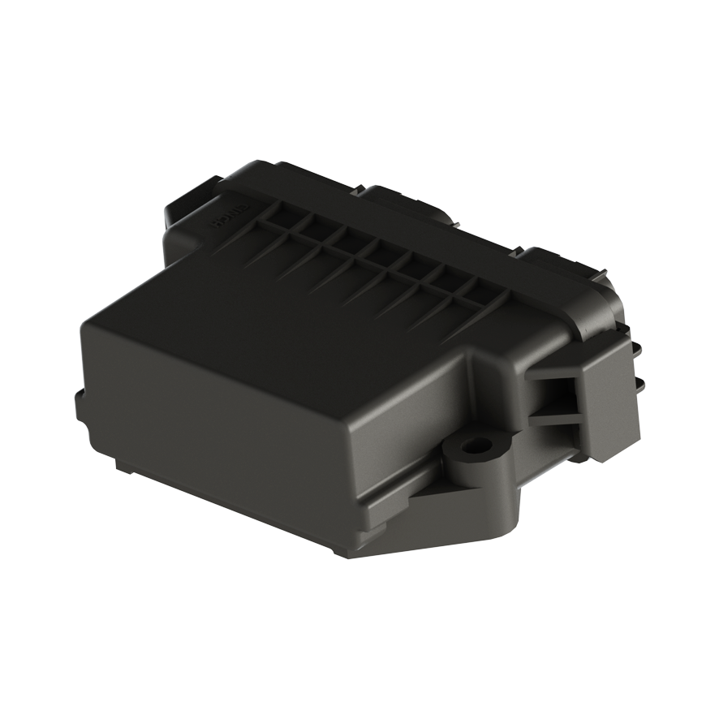
Kabel
Das Panel wird über sein eigenes Versorgungskabel mit Strom versorgt.

Ein HUB8 wird mit einem vierpoligen Amphenol-Netzwerkkabel an das System angeschlossen.
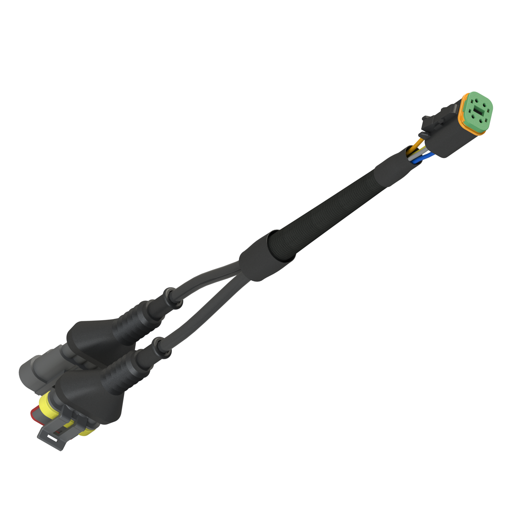
Die Sensoren werden über einen Kabelbaum an das HUB8 angeschlossen.

Sicherheit
Was das Panel in Bewegung setzen kann, wer es bedienen darf und von wo aus, und wie Sie das Panel selbst behandeln. Vor dem ersten Einschalten lesen.
Die Kenntnis dieser Regeln ist die Voraussetzung, um sicher und störungsfrei mit dem System zu arbeiten. Diese Anleitung gehört zum Lieferumfang: Bewahren Sie sie an der Maschine oder in der Traktorkabine auf.
Das Panel steuert Maschinen
Das Panel ist nicht nur eine Anzeige. Die Elektromotoren der Dosierer, die Flüssigdüngerpumpe und die Fahrgassen-Aktuatoren werden durch Befehle vom Panel gestartet, und einige dieser Befehle wirken bei stehender Maschine.
Die Geschwindigkeitssimulation lässt die Maschine Produkt dosieren, ohne dass sie fährt. Bei eingeschalteter Simulation rechnet das Panel so, als würde die Maschine fahren, und steuert die Dosiermotoren und die Pumpe entsprechend an. Schalten Sie die Simulation aus, bevor Sie die Kabine verlassen.
Bevor Sie sich dem Gerät nähern, halten Sie die Maschine an, schalten Sie die Zündung des Traktors aus und nehmen Sie den Schlüssel mit. Verlassen Sie sich nicht auf die Anzeige des Panels: Ein Gerät, dessen Überwachung ausgeschaltet wurde, meldet nichts über seinen Zustand.
Der Arbeitsplatz des Fahrers
Das System wird von einer Person, vom Fahrersitz des Traktors aus, bedient. Bedienen Sie das Panel nicht von außerhalb der Kabine, solange sich der Traktor in Bewegung setzen kann oder sich jemand in der Nähe des Geräts aufhält.
Bestimmungsgemäße Verwendung
Das System ist ausschließlich als Überwachungs- und Steuergerät für die Aussaat und für die Ausbringung von Trocken- und Flüssigdünger an landwirtschaftlichen Maschinen bestimmt — Anbau- und Anhängedrillmaschinen, Einzelkornsägeräten und Grubbern. Zur bestimmungsgemäßen Verwendung gehört, alle Anweisungen dieser Anleitung zu befolgen. Jede andere Verwendung ist nicht bestimmungsgemäß; der Hersteller haftet nicht für Schäden, die daraus entstehen, und das Risiko trägt allein der Benutzer.
Beachten Sie neben dieser Anleitung die nationalen Sicherheits- und Umweltvorschriften am Einsatzort der Maschine sowie die Sicherheitshinweise des Geräts und des Traktors.
Umgang mit dem Panel
- Setzen Sie das Panel keinen Stößen und keinen starken Vibrationen aus, und lassen Sie es nicht fallen.
- Berühren Sie den Bildschirm nicht mit spitzen Gegenständen; sie beschädigen die Touch-Oberfläche.
- Öffnen Sie das Gehäuse nicht. Es ist abgedichtet und hat einen Druckausgleich; durch das Öffnen wird die Dichtung zerstört. Reparaturen führt ausschließlich der Agriwelt-Service aus.
- Halten Sie den Kabelbaumstecker, den Anschluss der GPS-Antenne und den Steckplatz der Speicherkarte geschlossen und sauber, wenn nichts eingesteckt ist.
- Reinigen Sie das Panel mit einem feuchten Tuch — keine Lösungsmittel, kein Hochdruckreiniger.
- Schließen Sie das Panel nur an eine Spannungsversorgung an, die den Werten im Gerätepass entspricht. Verpolung oder eine Spannung außerhalb des zulässigen Bereichs beschädigt die Elektronik.
- Trennen Sie das Panel vor dem Elektroschweißen am Traktor oder am Gerät ab.
Gewährleistung und Haftung
Es gelten die Allgemeinen Verkaufs- und Lieferbedingungen der Agriwelt GmbH. Ansprüche aus Gewährleistung und aus Personen- oder Sachschäden werden nicht anerkannt, wenn die Ursache in einer nicht bestimmungsgemäßen Verwendung liegt; in unsachgemäßem Einbau, unsachgemäßer Inbetriebnahme oder Bedienung; in der Nichtbeachtung dieser Anleitung bei Inbetriebnahme, Bedienung und Wartung; oder in eigenmächtigen Änderungen am Gerät.
Signalwörter in dieser Anleitung
| Signalwort | Bedeutung |
|---|---|
| GEFAHR | Eine unmittelbare Bedrohung mit hohem Risiko. Missachtung führt zum Tod oder zu schwersten Verletzungen. |
| WARNUNG | Eine mögliche Bedrohung mit mittlerem Risiko. Missachtung kann zum Tod oder zu schweren Verletzungen führen. |
| VORSICHT | Eine Bedrohung mit geringem Risiko. Missachtung kann zu leichten oder mittleren Verletzungen führen. |
| WICHTIG | Keine Gefahr für Personen. Missachtung beschädigt Geräte oder verursacht Arbeit, die wiederholt werden muss. |
| HINWEIS | Information, mit der Sie mehr aus dem System herausholen. |
| TIPP | Eine Abkürzung oder ein besserer Weg, etwas zu tun. |
| SIEHE AUCH | Ein Verweis auf das Thema, in dem der Gegenstand ausführlich beschrieben ist. Keine Sicherheitsanweisung. |
Das Panel und seine sieben Tasten
Was sich auf der Vorder- und auf der Rückseite des Hectare One befindet und was jede der sieben Tasten bewirkt.
Das Hectare One wird mit sieben hinterleuchteten Tasten unter dem Bildschirm und mit Berührungen auf dem Bildschirm selbst bedient. Alles lässt sich allein mit den Tasten erledigen — mit Handschuhen, auf unebenem Acker.
- Bildschirm. Farbbildschirm mit 800 × 480 Pixeln und Touch-Oberfläche. Hier zu sehen: der Startbildschirm.
- „HOME“. Schaltet zwischen den Arbeitsbildschirmen um. Auf dem Startbildschirm gedrückt gehalten, sperrt und entsperrt sie die Produktausbringung.
- „MINUS“. Verringert den gewählten Wert.
- „UP“. Bewegt die Auswahl zum vorigen Punkt eines Menüs.
- „MENU“. Öffnet vom Startbildschirm aus das Hauptmenü. In einem Menü öffnet sie den gewählten Punkt; in einem Dialog bestätigt sie.
- „DOWN“. Bewegt die Auswahl zum nächsten Punkt eines Menüs.
- „PLUS“. Erhöht den gewählten Wert.
- „BACK“. Verlässt ein Menü oder einen Bildschirm; in einem Dialog bricht sie ab. Auf dem Startbildschirm öffnet sie das Menü des Fahrgassen-Durchgangs.
Was jede Taste auf jedem Bildschirm bewirkt, steht unter Tasten und Gesten.
Die Rückseite des Panels

Auf der Rückseite gibt es keine Bedienelemente. Ein Kabelbaumstecker mit bis zu vierzehn Kontakten führt alles zum Panel. Die beiden erhabenen runden Kappen sind der Anschluss der GPS-Antenne und der staubgeschützte Steckplatz der microSD-Karte; die kleine Öffnung ist der Druckausgleich des abgedichteten Gehäuses. Mit dem Kugelgelenk können Sie das Panel auf einer ebenen Fläche in der Kabine frei drehen und neigen. Für die Montage an einem Rohr ist ein zusätzlicher Halter erhältlich.
Einschalten
Was das Panel nach dem Einschalten tut, mit welcher Zugriffsebene es startet und was ein ungewöhnlich lang stehendes Startbild bedeutet.
Nach dem Einschalten der Spannungsversorgung erscheint ein Startbild mit dem Logo. Es bleibt stehen, bis das Panel alle angeschlossenen Geräte gefunden hat — einige Sekunden —, und dann öffnet sich der Startbildschirm.
In welchem Zustand das Panel startet
- Zugriffsebene „Fahrer“. Das Panel startet nach jedem Einschalten auf der Ebene „Fahrer“, gleichgültig, welche Ebene zuvor eingestellt war. Aus- und Wiedereinschalten ist deshalb auch der schnellste Weg zurück auf „Fahrer“ — die einzige Ebene, auf der Alarmfenster angezeigt werden. Siehe Zugriffsebenen.
- Der gewöhnliche Startbildschirm. Auch an einer Maschine ohne Kornsensoren startet das Panel auf dem gewöhnlichen Startbildschirm; der zweite Startbildschirm wird von Hand geöffnet.
Ausschalten
Die Statistik wird alle fünf Minuten und beim Anhalten der Maschine gespeichert. Schalten Sie das Panel erst aus, nachdem Sie angehalten haben — sonst geht die letzte Arbeitsstrecke aus der Statistik verloren.
Menüs, Kontextmenüs, Ziffernblock und Fenster
Die fünf Dinge, über die am Panel alles geschieht — Arbeitsbildschirme, Hauptmenü, Kontextmenü eines Geräts, Ziffernblock und die Fenster, die fragen oder etwas mitteilen.
Alles am Panel geschieht über fünf Dinge: die Arbeitsbildschirme, das Hauptmenü, das Kontextmenü eines Geräts, den Ziffernblock und die Fenster, die etwas fragen oder etwas mitteilen. Die Arbeitsbildschirme haben ein eigenes Thema: Arbeitsbildschirme.
Das Hauptmenü
Drücken Sie auf dem Startbildschirm „MENU“ oder tippen Sie mit zwei Fingern auf den Bildschirm. Das Hauptmenü öffnet sich über dem Startbildschirm.
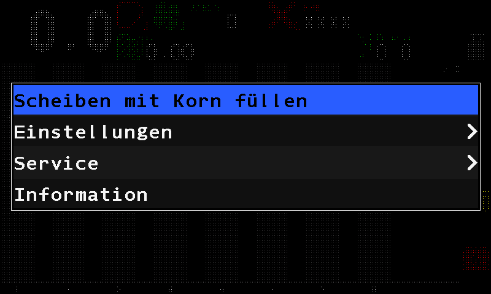
- Gewählter Punkt. Schwarze Schrift auf hellblauem Band. „UP“ und „DOWN“ bewegen das Band; „MENU“ öffnet den Punkt. Hier „Scheiben mit Korn füllen“ — siehe Scheiben füllen.
- „Einstellungen“. Die Einstellungen des Systems und der Maschine. Siehe Das Menü Einstellungen.
- Pfeilspitze. Der Punkt öffnet ein weiteres Menü.
- „Service“. Punkte für Inbetriebnahme und Service. Siehe Servicemenü.
- „Information“. Öffnet den Bildschirm mit den Informationen über das System.
In jedem Menü lesen Sie einen Punkt an dem, was rechts von ihm steht:
| Was Sie rechts sehen | Was es bedeutet |
|---|---|
| Eine Pfeilspitze | Der Punkt öffnet ein weiteres Menü. Drücken Sie „MENU“. |
| Ein Wert zwischen - und + | Ändern Sie ihn mit „PLUS“ und „MINUS“, gleich dort in der Liste. |
| Ein Wert zwischen -[** und **]+ | „PLUS“ oder „MINUS“ öffnet den Ziffernblock. |
| Nichts | Der Punkt führt eine Aktion aus. Drücken Sie „MENU“. |
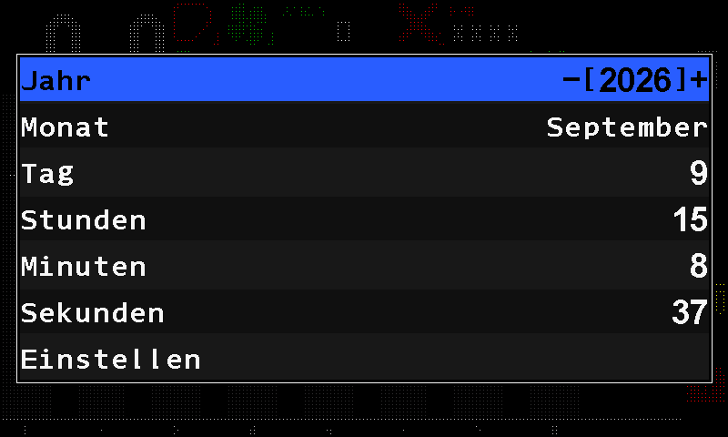
„BACK“ verlässt ein Menü und führt eine Ebene nach oben.
Das Kontextmenü eines Geräts
Jeder Sensor, jeder Motor und jede Anzeige auf dem Startbildschirm hat ein eigenes Menü. Berühren und halten Sie das Gerät — sein Symbol oder seine Säule im Diagramm —, und sein Kontextmenü öffnet sich. Auf dem Bildschirm Motoren und auf dem zweiten Startbildschirm funktioniert dasselbe bei einer Motorkachel.

Der erste Punkt, „Information“, öffnet den Statusbildschirm des Geräts. Der zweite schaltet seine Überwachung um: „Überwachung aus“ oder „Überwachung ein“ — siehe Sensor in die Überwachung nehmen oder herausnehmen. Darunter stehen die Parameter; welche Sie sehen, hängt von der Zugriffsebene ab (Zugriffsebenen).
Zahlen eingeben
Steht ein Wert zwischen eckigen Klammern, öffnet das Ändern den Ziffernblock.

- Name des Parameters. Hier „Breite, cm“.
- Wert. Was Sie bisher eingegeben haben.
- Rücktaste. Löscht die letzte Ziffer. Berühren und halten Sie sie, um den ganzen Wert zu löschen.
- Ziffern. 1 bis 9 und 0.
- Dezimalpunkt und Minus. Eine Berührung fügt den Punkt ein; Berühren und Halten schaltet das Minuszeichen um, wo ein negativer Wert erlaubt ist.
- Null.
- „OK“. Übernimmt den Wert. „MENU“ bewirkt dasselbe.
Ein Wert außerhalb des zulässigen Bereichs wird nicht wie eingegeben übernommen: Das Panel setzt stattdessen die nächstgelegene Grenze.
Fenster, die fragen, und Fenster, die mitteilen
Jedes Fenster hat dieselbe Form: ein Kasten in der Bildschirmmitte, ein farbiger Streifen an seinem oberen Rand mit einem Wort darin, darunter die Meldung und — falls vorhanden — unten die Tasten. Lesen Sie zuerst den Streifen:
| Streifen | Was für ein Fenster | Wie es sich schließt |
|---|---|---|
| Gelb, „Bestätigung“ | Das Panel fragt. Es geschieht nichts, bis Sie antworten. | Berühren Sie „Ja“ (grün) oder „Nein“ (rot). „PLUS“ antwortet mit Ja, „MINUS“ mit Nein, „BACK“ bricht ab. |
| Blau, „Information“ | Das Panel teilt mit, was geschehen ist. | Manche schließen sich von selbst; andere schließen mit einer Berührung, „PLUS“ oder „BACK“. |
| Rot, „ALARM!“ | Ein Alarm. | Siehe unten. |

Das folgende Informationsfenster schließt sich von selbst.

Alarmfenster
Ein Alarmfenster sagt, was geschehen ist, an welcher Art von Gerät und an welchen Geräten — ihre Nummern werden aufgeführt, wenn mehrere gleiche Sensoren dieselbe Störung gleichzeitig melden. Solange es offen ist, piept das Panel.
| Was Sie tun | Was geschieht |
|---|---|
| „Schließen“ im Fenster berühren oder „HOME“ drücken | Dieser Alarm schließt sich. Der nächste in der Warteschlange erscheint. |
| „HOME“ gedrückt halten | Das Fenster schließt sich, und das Panel kehrt zum Startbildschirm zurück. |
Die übrigen sechs Tasten sind dunkel und bewirken nichts, solange ein Alarmfenster offen ist.
Kurzanleitung — vorbereiten und losfahren
Die Reihenfolge, in der Sie die Maschine bereitmachen, was Sie vor dem Feld prüfen, was beim Losfahren geschieht und was Sie während der Arbeit beobachten.
Ihre Maschine hat möglicherweise nicht jeden Schritt — überspringen Sie, was sie nicht hat.
Vor dem Feld
Geschwindigkeitssensor kalibrieren. Fläche, Mengen und Abweichungen werden alle aus der Geschwindigkeit berechnet; eine falsche Geschwindigkeit macht jede andere Zahl falsch. „Einstellungen“ → „Sämaschinen-Parameter“ → „Geschwindigkeitskalibrierung“, auf der Ebene „Agronom“. Siehe Geschwindigkeitssensor kalibrieren.
Dosierwalzen kalibrieren — an Drillmaschinen und an Einzelkornsägeräten, deren Düngerdosierer von einem Elektromotor angetrieben wird. Aus dem Kontextmenü jedes Dosierers oder Motors, auf der Ebene „Fahrer“, im Stand. Siehe Massekalibrierung eines Motors.
Fahrgassenrhythmus prüfen, wenn die Maschine Fahrgassen anlegt. Siehe Fahrgassenrhythmus einstellen.
Sensorparameter prüfen — die Liste steht unten.
Jede Sektion prüfen: Ist sie in der Überwachung, bringt sie Produkt aus? Siehe Vier Zustände einer Sektion.
Das Feld wählen auf dem Bildschirm Statistik. Löschen Sie bei einem neuen Feld zuerst seine Statistik. Siehe Bildschirm Statistik.
Die Mengen einstellen — Aussaat, Trockendünger, Flüssigdünger. Siehe Sollmenge ändern.
Die Zugriffsebene prüfen. Sie muss „Fahrer“ sein.
Die Schritte 1 und 2 liegen nicht auf derselben Ebene. „Sämaschinen-Parameter“ und die Geschwindigkeitskalibrierung darunter gehören zur Ebene „Agronom“; die Massekalibrierungen in den Kontextmenüs zur Ebene „Fahrer“. Üblicher Ablauf: die Ebene auf „Agronom“ anheben (Ebene „Agronom“ freischalten), Schritt 1 ausführen, auf „Fahrer“ zurückgehen, den Rest erledigen.
Zu prüfende Sensorparameter
- Geschwindigkeitssensor — „Min. Geschwindigkeit, km/h“, „Max. Geschwindigkeit, km/h“.
- Dosierersensor — „Periode,s“, für jeden Sensor.
- Gebläsesensor — „Minimum, U/min“, „Maximum, U/min“, für jeden Sensor.
- Drucksensor — „Minimum,Pa“, „Maximum,Pa“, für jeden Sensor.
- Flüssigdüngerpumpe — „Impulse je Liter“, „Maximaler Druck, Bar“.
- Korn- und Trockendüngersensoren — „Fraktion“, „Korrektur“, „Neuberechnung, m“ oder „Neuberechnung, Sek“; im Modus „Einzelkorn“ oder „Hybrid“ außerdem „Mengenfehler, %“.
- Flüssigdüngersensoren — „Mengenfehler, %“ und, ohne Pumpe im Profil, „Impulse je Liter“. Durchflussmesser von Wilger: rot 8900, grün 15500, blau 3400 Impulse je Liter.
- Elektromotoren, Modus „Einzelkorn“ — „Löcher in Scheibe“, für einen beliebigen Motor der Gruppe.
- Elektromotoren, Dosierung nach Masse — für jeden Motor „Masse, g“ geteilt durch „Umdrehungen“ gegen die Spezifikation der Walze. Die Massekalibrierung füllt beide aus.
Die meisten Parameter werden je Sensor eingestellt. In den Sensorgruppen für Saatgut, Trockendünger und Flüssigdünger und in beiden Motorgruppen gelten die meisten Parameter für die ganze Gruppe — außer Sensorüberwachung und Produktausbringung, die individuell bleiben. Einzelheiten: Sensoreinstellungen.
Losfahren
Bringen Sie das Gerät in die Arbeitsstellung.
Einzelkornsägeräte mit Dosiermotoren: Füllen Sie die Scheiben — Hauptmenü, „Scheiben mit Korn füllen“. Ohne das sind die ersten Meter jeder Reihe leer. Siehe Scheiben füllen.
Drillmaschinen: Es ist nichts zu starten. Die Dosiermotoren beginnen von selbst zu drehen, sobald die Überwachung der Produktausbringung startet — im Moment des Losfahrens. Fahren Sie trotzdem zügig los: Die Rotorzellen müssen sich füllen, bevor die ersten Meter mit der Sollmenge gesät werden.
Fahren Sie.
Wann die Überwachung startet. Die Handsperre muss ausgeschaltet sein (Ausbringung von Hand sperren). Ist ein Arbeitsstellungssensor angebaut und eingeschaltet, beginnt die Überwachung, sobald Sie mit abgesenktem Gerät fahren; ohne einen solchen Sensor, sobald Sie fahren. Die Alarme beginnen einige Sekunden später — die Verzögerung ist „Einstellungen“ → „Alarmverzögerung“, 2 bis 20 Sekunden.
| Ton | Bedeutung |
|---|---|
| Ein kurzer Signalton | Das Panel sieht die Maschine säen. Von jetzt an werden die Sektionen überwacht. |
| Drei kurze Signaltöne | Die Aussaat hat aufgehört — am Vorgewende oder weil die Säulen unter die Überwachungslinie gesunken sind. |
Lassen Sie an Drillmaschinen im Modus „Durchfluss“ oder „Hybrid“ das Panel die Alarmschwelle selbst finden: Alarmschwelle automatisch einstellen.
Während der Arbeit
Beobachten Sie vier Dinge: die Geschwindigkeit gegen den Traktor, Gebläse und Druck innerhalb ihres Bereichs, die tatsächliche Menge gegen den Sollwert und dass kein Sensor Alarm gibt. Der Bildschirm Tabelle zeigt, wie jede Sektion gerade arbeitet; der Bildschirm Statistik, wie das ganze Feld gelaufen ist.
Fällt der Geschwindigkeitssensor aus, siehe Arbeiten ohne Geschwindigkeitssensor.
System nach der Installation prüfen
Ein einmaliger Ablauf für den Installateur — Schritt für Schritt nachweisen, dass jedes Gerät antwortet, jeder Kornsensor in seiner eigenen Reihe sitzt und die Maschine richtig anzeigt, und das Ergebnis festhalten.
Führen Sie diese Prüfung einmal durch, wenn das Panel und die Geräte montiert und angeschlossen sind. Jeder Schritt sagt, was Sie tun, und was der Bildschirm zeigen muss. Liefert ein Schritt nicht das Ergebnis, sagt die letzte Spalte der Tabelle am Ende, wohin Sie gehen.
Ihre Maschine hat möglicherweise nicht jedes Gerät — überspringen Sie die Schritte für das, was sie nicht hat. Bleiben Sie auf der Ebene „Fahrer“: Alarmfenster werden nur dort gezeigt (Zugriffsebenen).
Die Prüfung
Profil und Geräte prüfen. Schalten Sie das Panel ein und warten Sie auf den Startbildschirm. Es darf kein Alarm „Verbindung weg“ erscheinen, keine weiße Anzeige mit Ausrufezeichen und keine rote Anzeige mit einem X. Vergleichen Sie das Profil mit der Maschine: die Geräte und die Anzahl jedes Geräts (Das Profil). Öffnen Sie dann den Statusbildschirm jedes Sensors (Sensoreinstellungen) und blättern Sie mit „PLUS“ durch alle. Jeder Sensor zeigt „Verbindung:“ „Normal“; jeder Kornsensor zeigt Status: Betrieb. Siehe Der Sensor-Statusbildschirm.
Eine weiße Anzeige ist nur bei einem Gerät richtig, das nicht zu Ihrer Lieferung gehört (Das Profil).
Prüfen, dass jeder Kornsensor in seiner eigenen Reihe sitzt. Öffnen Sie mit „HOME“ den Bildschirm Tabelle und die Tabelle mit den Kornzählern (Der Bildschirm Tabelle). Sie zeigt die Anzahl der Körner; lesen Sie die Zahl dort ab, nicht auf der Ansicht mit Körnern je Meter, die nur Werte zeigt, solange sich die Maschine bewegt. Setzen Sie die Werte zurück (Werte des Bildschirms Tabelle zurücksetzen). Lassen Sie von Hand einige Körner durch das Saatrohr von Reihe 1 fallen; statt Körnern können Sie auch einen beliebigen kleinen Gegenstand, zum Beispiel einen langen Kabelbinder, mehrmals durch das Saatrohr führen – jeder Durchgang wird gezählt. Nur die Zeile der Sektion 1 darf reagieren. Machen Sie dasselbe mit Reihe 2 und dann nacheinander mit jeder weiteren Reihe. Ein Sensor, der in einer anderen Reihe reagiert, ist in der falschen Reihenfolge angeschlossen — rufen Sie Ihren Installationspartner oder den Service-Support an.

Die Kornzähler-Tabelle eines Achtreihen-Einzelkornsägeräts: Körner je Sektion, Abweichungsbalken, Summe. Das Zählen prüfen. Nur wenn Ihr Bildschirm Tabelle die Kornzähler-Tabelle hat. Setzen Sie die Werte erneut zurück. Lassen Sie eine bekannte Anzahl Körner, zum Beispiel 20, durch ein Saatrohr fallen. Lesen Sie die Zahl dieser Sektion in der Kornzähler-Tabelle ab, die die Anzahl der Körner zeigt. Bei einer Einzelkornsämaschine stimmt sie bis auf ein Korn mit der Anzahl überein, die Sie fallen ließen, sofern die „Fraktion“ der Kornsensoren auf die Größe des Korns eingestellt ist. Ist die Zahl deutlich höher – bis zum Doppelten der Anzahl –, ist die Fraktion für dieses Korn zu klein eingestellt: Ein großes Korn, zum Beispiel Mais, wird dann als zwei gezählt; stellen Sie die Fraktion nach der Tabelle in Korn- und Düngersensoren ein. Weichen beide anders ab, notieren Sie beide Zahlen und geben Sie sie an den Support weiter (Bevor Sie den Support kontaktieren).
Den Arbeitsstellungssensor prüfen. Nur wenn die Maschine einen hat. Heben Sie das Gerät an und senken Sie es dann ab. Der Statusbildschirm des Sensors muss zwischen Position: Transport und Position: Arbeit wechseln. Zeigt er das Gegenteil, ist die Einstellung „Signal Transportstellung“ des Sensors verkehrt herum (Behälter-, Arbeitsstellungs- und Motorsensoren).
Die Geschwindigkeit prüfen. Fahren Sie. Das Geschwindigkeitsfeld auf dem Startbildschirm muss eine Zahl in Weiß zeigen. XX.X in Rot heißt, dass das Eingangsgerät des Geschwindigkeitssensors nicht antwortet. Eine gelbe Zahl im Wechsel mit „SIMULIERT“ heißt, dass die Geschwindigkeit simuliert und nicht gemessen wird. „LANGSAMER“ und „SCHNELLER“ sagen nur, dass Sie außerhalb des zulässigen Bereichs fahren (Anzeigen des Startbildschirms). Passt die Zahl nicht zur wirklichen Geschwindigkeit, kalibrieren Sie den Sensor (Geschwindigkeitssensor kalibrieren). Fällt der Sensor aus, siehe Arbeiten ohne Geschwindigkeitssensor.
Die übrigen Sensoren der Maschine prüfen. Je eine kurze Prüfung:
- Behältersensor. Sein Statusbildschirm zeigt Pin: und den Pegel, „0“ oder „1“. Bei gefülltem Behälter darf das Panel „Behälter leer“ nicht auslösen (Behälter leer).
- Gebläsesensor. Bei laufendem Gebläse zeigt sein Statusbildschirm F= in Hz und keinen Alarm „Drehzahl zu niedrig“ oder „Drehzahl zu hoch“ (Gebläsesensor).
- Drucksensor. Bei laufendem Gebläse zeigt sein Statusbildschirm P= in kPa und keinen Alarm „Druck hoch“ oder „Niedriger Druck“ (Drucksensor).
- Dosierwellensensor. Drehen Sie die Welle. Sein Statusbildschirm zeigt F= in Hz und keinen Alarm „Kein Lauf“ (Dosierwellensensor).
- Spuranzeigersensoren. Jeder zeigt auf seinem Statusbildschirm „Verbindung:“ „Normal“ (Spuranzeigersensoren).
- Fahrgassen-Aktuator. Sein Statusbildschirm zeigt Status: Eingezogen, Ausgefahren oder Betrieb — nicht Unbekannt (Fahrgassen-Aktuator).
Das Ergebnis festhalten.
- Die Firmware-Version. Drücken Sie auf dem Startbildschirm „MENU“ und wählen Sie im Hauptmenü „Information“. Das Fenster zeigt die Firmware-Version. Notieren Sie sie.
- Notieren Sie das Datum, die Maschine und die Reihenzahl.
- Fotografieren Sie den Statusbildschirm eines Sensors oder der Sensoren nacheinander, mit „Verbindung:“ „Normal“.
Bewahren Sie die Notizen und die Fotos auf. Sie brauchen sie, wenn Sie den Support kontaktieren müssen (Bevor Sie den Support kontaktieren).
Wenn ein Schritt fehlschlägt
| Schritt | Was Sie sehen | Wohin |
|---|---|---|
| 1 | „Verbindung weg“ oder „Keine Verbindung“ | Beliebiges Gerät: Verbindung weg oder falscher Gerätetyp |
| 1 | „Falscher Gerätetyp!“ | Beliebiges Gerät: Verbindung weg oder falscher Gerätetyp |
| 1 | Weiße Anzeige bei einem Gerät, das Sie haben | Sensor in die Überwachung nehmen oder herausnehmen |
| 1 | „Verstopft“, „Fremdlicht“, „Defekt“ | Korn- oder Düngersensor verstopft, von Fremdlicht getroffen oder defekt |
| 1 | Gerät fehlt im Profil | Das Profil |
| 2, 3 | Falsche Reihe reagiert, oder die Zahl weicht ab | Bevor Sie den Support kontaktieren |
| 4 | Stellung wechselt nicht oder ist vertauscht | Behälter-, Arbeitsstellungs- und Motorsensoren |
| 5 | Keine oder falsche Geschwindigkeit | Alarme des Geschwindigkeitssensors, Geschwindigkeitssensor kalibrieren, Arbeiten ohne Geschwindigkeitssensor |
| 6 | Behälter, Gebläse, Druck, Dosierer | Behälter leer, Gebläse und Dosierwelle: Drehzahlalarme, Luftdruck zu hoch oder zu niedrig |
Zu den Bildern in dieser Anleitung
Die Bildschirme in dieser Anleitung wurden an einem Prüfstand aufgenommen. Was auf ihnen zum Prüfstand und nicht zu Ihrer Maschine gehört.
Die Bildschirme in dieser Anleitung sind echte Aufnahmen eines Panels Hectare One mit Firmware 1.2.3, aufgenommen an einem Prüfstand statt an einer Maschine auf dem Feld. Einiges auf ihnen gehört zum Prüfstand. Ihr Panel zeigt dieselben Bildschirme ohne diese Dinge.
| Was Sie auf einem Bild sehen | Warum es da ist | Was Ihr Panel stattdessen zeigt |
|---|---|---|
| Eine blaue 0:00 in der rechten oberen Ecke oder das Wort DEMO | Das Panel am Prüfstand läuft mit einer Demo-Lizenz. Solange eine Demo aktiv ist, wechselt das Uhrfeld zwischen der verbleibenden Zeit, dem Wort DEMO und leer. | Die Uhrzeit. Siehe Uhr. |
| IMITAT in Gelb im Uhrfeld | Der Prüfstand läuft in einem Simulationsmodus. | Die Uhrzeit. |
| Eine gelbe Geschwindigkeitszahl oder SIMULIERT im Geschwindigkeitsfeld | Die Geschwindigkeit wird simuliert, nicht gemessen — am Prüfstand dreht sich kein Rad. | Die gemessene Geschwindigkeit in Weiß. Siehe Geschwindigkeit. |
| Säulen, die sich bewegen, obwohl die Maschine steht | Der Kornfluss wird von den Sensoren am Prüfstand imitiert. | Säulen, die sich nur bewegen, solange gesät wird. |
| Rote Behälter, ein rotes Öldruck- oder Batteriesymbol | Der Prüfstand hat kein Produkt und keinen Motor. | Grüne Symbole, solange alles in Ordnung ist. |
| Ein rotes A-Kästchen unten rechts auf dem Startbildschirm | Im Profil des Prüfstands genannte Aktuatoren sind nicht angebaut, deshalb meldet das Panel sie als defekt. | Nichts — das Kästchen wird nicht angezeigt, solange jeder Aktuator in Ordnung ist. Siehe Aktuatorstörung. |
| Ein rotes × anstelle eines Symbols | Ein im Profil des Prüfstands genanntes Gerät ist nicht angeschlossen. | Das Symbol des Geräts. |
| Nullen auf dem Bildschirm Statistik | Die Statistik des Prüfstands war leer, als das Bild aufgenommen wurde. | Ihre Zahlen. |
Animierte Bilder sind Folgen von Aufnahmen des Panels im Abstand von etwa sieben Sekunden. Sie zeigen, wie sich der Bildschirm während der Aussaat verändert, nicht wie schnell.
Der Startbildschirm
Was jeder Teil des Startbildschirms ist — Geschwindigkeit, Anzeigen, Fläche, Mengen, die Sektionsdiagramme — an einer stehenden Drillmaschine und an einem Einzelkornsägerät bei der Arbeit.
Der Startbildschirm ist der wichtigste Arbeitsbildschirm. Er zeigt die Diagramme der Sektionssensoren, die Zustandsanzeigen der Geräte und die wichtigsten Kennzahlen der Arbeit. Was er zeigt, folgt dem Profil: Jede dort eingetragene Gruppe von Sensoren und Geräten bekommt ihre Kacheln, ihre Säulen, ihr Mengenfeld.
Eine Drillmaschine mit Saatgut und Dünger

- Fahrgeschwindigkeit. In km/h. Meldungen zur Geschwindigkeit ersetzen die Zahl. Geschwindigkeit
- Behälter. Ein Symbol je Behältersensor, nummeriert. Rot — der Füllstand liegt unter dem Sensor. Behälter
- Dosiereinheiten. Drehung der Dosierwellen; das Symbol dreht sich, solange sich die Welle dreht. Dosiereinheit
- Motorsensoren. Öldruck, Batterieladung und Zündung des Gebläse-Antriebsmotors. Motorsensoren
- Uhr. Die Uhrzeit; das Feld trägt auch Meldungen. Uhr
- Speicherkarte. Wird angezeigt, solange eine microSD-Karte im Steckplatz steckt. Speicherkarte
- Gebläse. Das Gebläsesymbol und seine Drehzahl in U/min. Gebläse
- Spuranzeiger. Welcher Spuranzeiger-Arm abgesenkt ist. Spuranzeiger
- Fahrgassen-Durchgang. Der aktuelle Durchgang über der Zahl der Durchgänge im Rhythmus. Fahrgassen-Durchgang
- Fläche. Bearbeitete Hektar auf dem aktiven Feld. Fläche
- Produktmenge nach Masse. Die Menge von Produkt 1 in kg/ha. Produktmenge nach Masse
- Saatdiagramm. Eine Säule je Kornsensor; die weiße Linie ist die Überwachungslinie. Das Sektionsdiagramm
- Sektionsnummern. Die Nummer jeder Sektion unter ihrer Säule.
- Mengenfeld. Oben die gemessene Menge, darunter der Sollwert, hier in Körnern je Sekunde. Sollmenge ändern
- Gerätestellung. Hier ein rotes × — der Arbeitsstellungssensor antwortet nicht. Gerätestellung
- Düngerdiagramm. Die Sektionen 25 bis 36 mit eigenem Mengenfeld in Düngereinheiten je Sekunde.
- Aktuatorstörung. Mindestens ein Motor oder Fahrgassen-Aktuator befindet sich im Alarmzustand. Aktuatorstörung
Ein Einzelkornsägerät bei der Arbeit
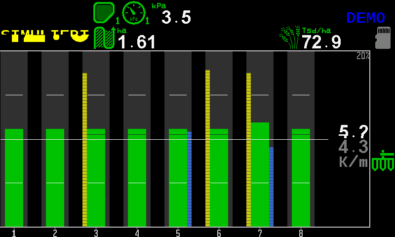
- Fahrgeschwindigkeit. Hier gelb, weil sie am Prüfstand simuliert wird. Geschwindigkeit
- Behälter. Grün — Produkt über dem Sensor.
- Druck. Unterdruck oder Überdruck in kPa. Druck
- Fläche. Bearbeitete Hektar auf dem aktiven Feld.
- Aussaatmenge. Die tatsächliche Aussaatmenge in Tausend Körnern je Hektar. Aussaatmenge
- Speicherkarte.
- Sektionssäule. Grün — die Reihe sät innerhalb ihrer Toleranz. Säulenfarben
- Fehlstellenbalken. Gelbe Schraffur links an einer Säule: der Anteil der Fehlstellen in dieser Reihe.
- Doppelbelegungsbalken. Blaue Schraffur rechts an einer Säule: der Anteil der Doppelbelegungen.
- Solllinie. Die Sollmenge über alle Reihen.
- Toleranzmarken. Obere und untere Grenze der zulässigen Abweichung in jeder Säule.
- Mengenfeld. Oben die gemessenen Körner je Meter, darunter der Sollwert.
- Gerätestellung. Grün — abgesenkt, in Arbeit.
- Sektionsnummern.
Was jede Anzeige in allen ihren Zuständen bedeutet, steht unter Anzeigen; das Diagramm selbst — Linie, Marken, Farben — unter Das Sektionsdiagramm.
Was Sie vom Startbildschirm aus tun können
| Aufgabe | So geht es |
|---|---|
| Das Hauptmenü öffnen | „MENU“ oder mit zwei Fingern tippen |
| Die Sollmenge ändern | „PLUS“ / „MINUS“ — Sollmenge ändern |
| Die Produktausbringung sperren oder freigeben | „HOME“ gedrückt halten — Ausbringung von Hand sperren |
| Das Menü des Fahrgassen-Durchgangs öffnen | „BACK“ — Nächster Fahrgassen-Durchgang |
| Das Panel die Alarmschwelle setzen lassen | Doppeltippen, während ausgebracht wird — Alarmschwelle einstellen |
| Die Einstellungen eines Geräts öffnen | Sein Symbol oder seine Säule berühren und halten |
| Zum nächsten Arbeitsbildschirm wechseln | „HOME“ oder nach links wischen — Arbeitsbildschirme |
| Den zweiten Startbildschirm öffnen | Nach rechts wischen — Zweiter Startbildschirm |
Alle Tasten auf allen Bildschirmen: Tasten und Gesten.
Das Sektionsdiagramm — Säulen, Linie und Farben
Wie Sie die Säulen des Startbildschirms im Modus „Einzelkorn“ und im Modus „Durchfluss“ lesen und was die Überwachungslinie bedeutet.
Jede Säule des Diagramms ist eine Sektion — ein Korn- oder Düngersensor. Ihre Höhe ist der Durchfluss durch diese Sektion. Wie der Rest gezeichnet wird, hängt vom Modus der Aussaatüberwachung ab: „Einzelkorn“ (Körner je Meter, mit Fehlstellen und Doppelbelegungen) oder „Durchfluss“ (Körner je Sekunde gegen eine Alarmschwelle).
Modus „Einzelkorn“

- Sollmenge. Grau, in Körnern je Meter (K/m). Diese Zahl ändern „PLUS“ und „MINUS“.
- Gemessene Menge. Weiß — der Durchschnitt der Reihen im Moment.
- Toleranz. Die zulässige Abweichung vom Sollwert in Prozent.
- Solllinie. Die Sollmenge, über alle Reihen gezogen.
- Obere Marke. Die obere Toleranzgrenze in jeder Säule.
- Untere Marke. Die untere Toleranzgrenze.
- Säule. Grün — die Reihe sät innerhalb der Toleranz.
- Fehlstellenbalken. Gelbe Schraffur am linken Rand einer Säule. Je höher sie ist, desto mehr Fehlstellen hat diese Reihe.
- Doppelbelegungsbalken. Blaue Schraffur am rechten Rand einer Säule. Je höher sie ist, desto mehr Doppelbelegungen.
- Sektionsnummer.
Modus „Durchfluss“

- Alarmschwelle. Grau, in Körnern je Sekunde (K/s). Das Niveau, unter dem eine Sektion als durchflussschwach gilt. „PLUS“ und „MINUS“ ändern es.
- Gemessene Menge. Weiß — der Durchschnitt der Reihen im Moment.
- Überwachungslinie. Die Alarmschwelle, über alle Reihen gezogen.
- Säule über der Linie. Grün — die Reihe arbeitet.
- Leerer Teil einer Säule. Dunkelgrau über dem Grün: Je höher das Grün reicht, desto mehr Durchfluss.
- Sektionsnummern. Die Düngersektionen setzen sich nach den Saatsektionen fort.
- Düngerdiagramm. Dasselbe für die Düngersensoren.
- Mengenfeld Dünger. Oben gemessen, darunter die Alarmschwelle, in Dünger je Sekunde (D/s).
Die Linie: Reihen darunter werden nicht überwacht
Die Linie ist die Grenze einer teilweisen Verstopfung, keine Verzierung. Eine Säule über der Linie ist eine Reihe, die arbeitet; eine Säule, die darunter sinkt, ist eine Reihe, die Durchfluss verliert — lange bevor sie ganz verstopft.

- „NICHT ÜBERWACHT“. Die Reihen dieses Diagramms werden nicht überwacht.
- Säulen unter der Linie. Jede Reihe liefert weniger als das Niveau.
- Überwachungslinie. Über den wirklichen Durchfluss hinaufgezogen.
- Alarmschwelle. 18 Körner je Sekunde — mehr, als die Maschine sät.
- Gemessene Menge. 15 Körner je Sekunde.
Reihen unter der Linie werden absichtlich nicht überwacht: Das Panel weigert sich, ein Niveau zu bewachen, das über dem eingestellt wurde, was die Maschine wirklich liefert. Senken Sie das Niveau, bis die Säulen über der Linie stehen, oder lassen Sie es das Panel setzen: Alarmschwelle automatisch einstellen.
Ob die Maschine überhaupt sät, entscheidet das Panel anhand des Anteils der säenden Reihen — eine Sensoreinstellung, ab Werk 20 %. Am Vorgewende fallen die Reihen aus der Überwachung; beim nächsten Durchgang kommen sie zurück, mit oder ohne Arbeitsstellungssensor. Das Panel meldet es mit Ton: drei kurze Signale, wenn die Aussaat aufhört, ein kurzes Signal, wenn sie wieder beginnt.
Was jede Farbe und jedes Symbol einer Säule bedeutet und welche vier Zustände eine Sektion hat: Säulenfarben und Sektionszustände.
Säulenfarben und die vier Zustände einer Sektion
Was jede Farbe und jedes Symbol einer Säule im Sektionsdiagramm bedeutet und welche vier Kombinationen aus Überwachung und Produktausbringung eine Sektion haben kann.
Wie das Diagramm aufgebaut ist — Solllinie, Marken, Überwachungslinie — steht unter Das Sektionsdiagramm. Diese Seite listet auf, wie eine einzelne Säule aussehen kann.
Säulenfarben
| Was Sie sehen | Was es bedeutet |
|---|---|
| Grüne Säule | Die Reihe sät normal. |
| Blaue Säule | Die Reihe sät mehr, als der Sollwert zulässt („Einzelkorn“ und „Hybrid“). |
| Gelbe Säule | Die Reihe sät weniger, als der Sollwert zulässt („Einzelkorn“ und „Hybrid“). |
| Hintergrund blinkt dunkelrot, keine Säule | Die Reihe sät fast nichts, während die Maschine sät — ein verstopftes oder leeres Saatrohr. |
| Weiße Säule mit ! | Die Überwachung dieser Sektion ist ausgeschaltet. Nichts an ihr wird überwacht. |
| Rotes × | Der Sensor antwortet nicht. |
| Rotes ?, Säule blinkt rot | Ein Gerät der falschen Art antwortet anstelle dieses Sensors. |
| Gelbes ? | Der Sensor hat gerade seine Einstellungen erhalten, oder er zählt Körner, aber das Panel hat keine Geschwindigkeit, um sie zu beurteilen. |
| Graue Schraffur über der ganzen Säule | Die Sektion ist für die Fahrgasse abgeschaltet, oder ihre Produktausbringung ist ausgeschaltet. |
| Grüne Schraffur unten in einer grauen Säule | Ein kleiner Durchfluss in einer abgeschalteten Sektion, noch innerhalb des Tolerierten. |
| Rote Schraffur in einer grauen Säule | Die abgeschaltete Sektion sät in die Fahrgasse. |
Die vier Zustände einer Sektion
Jede Sektion hat zwei voneinander unabhängige Schalter: ob das Panel sie überwacht (Überwachung) und ob die Maschine durch sie ausbringt (Produktausbringung).
| Überwachung | Ausbringung | Bedeutung | Was die Säule zeigt |
|---|---|---|---|
| ein | ein | Normale Arbeit. | Die normale Säule. |
| ein | aus | Fahrgasse: Die Reihe sät absichtlich nicht, und das Panel weiß es. | Graue Schraffur. |
| aus | ein | Die Reihe sät, aber niemand kontrolliert sie. | Weiß mit ! |
| aus | aus | Die Sektion ist ganz aus der Arbeit genommen. | Weiß mit ! |
Die Überwachung wird im Kontextmenü des Sensors geschaltet: Sensor in die Überwachung nehmen oder herausnehmen. „Produktausbringung“ ist ein Punkt desselben Menüs auf der Ebene „Agronom“; im Fahrgassenbetrieb schalten die Aktuatoren oder Motoren die Sektionen selbst, und dieser Punkt wird ignoriert.
Der Startbildschirm an verschiedenen Maschinen
Dasselbe Panel an einem Einzelkornsägerät, an einer Drillmaschine und an Maschinen mit 44 und 96 Reihen — im Stillstand und bei der Arbeit —, damit Sie Ihren eigenen Bildschirm wiedererkennen.
Was der Startbildschirm zeigt, folgt dem Profil. Die Bilder unten wurden auf einem Panel mit Firmware 1.2.3 aufgenommen, das als verschiedene Maschinen eingerichtet war. Prüfstandsbesonderheiten — die blaue Uhr, die gelbe Geschwindigkeit — sind unter Zu den Bildern in dieser Anleitung erklärt.
Ein Achtreihen-Einzelkornsägerät im Stillstand
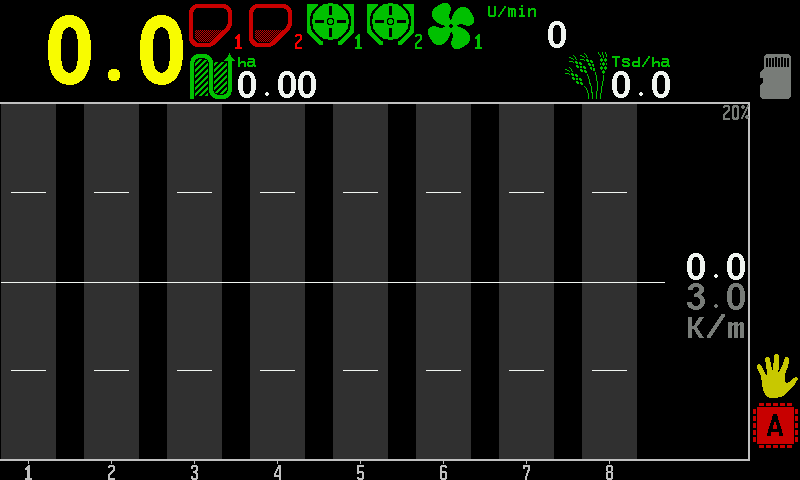
- Fahrgeschwindigkeit. Gelb: Die Geschwindigkeit ist simuliert, nicht gemessen.
- Behälter. Der erste grün, der zweite rot — dieser Behälter meldet leer.
- Dosiereinheiten. Zwei Sensoren der Dosierwellen.
- Gebläse. Mit seiner Drehzahl in U/min daneben.
- Fläche. Bearbeitete Hektar auf dem aktiven Feld.
- Aussaatmenge. Die tatsächliche Aussaatmenge in Tausend je Hektar.
- Speicherkarte. Im Steckplatz steckt eine microSD-Karte.
- Toleranz. Die geltende zulässige Abweichung, über dem Diagramm angegeben.
- Toleranzmarken. Obere und untere Grenze in jeder Säule.
- Solllinie. Die Sollmenge.
- Sektionssäule. Leer: Die Maschine steht still.
- Mengenfeld. Oben die gemessenen Körner je Meter, darunter der Sollwert.
- Handsperre. Die gelbe Hand: Die Produktausbringung ist von Hand gesperrt. Ausbringung von Hand sperren
- Aktuatorstörung. Eine Störung der Elektromotoren der Dosierer. Bildschirm Motoren
- Sektionsnummern.
Drei Maschinen im Stillstand
Die Sollmengen sind eingestellt, die Istmengen sind null. Vierundvierzig Kornsensoren in zwei Reihen zu je zweiundzwanzig, zwei Behälter, zwei Dosierwellen, ein Gebläse, ein Mengenfeld in Körnern je Sekunde; das Sämaschinen-Symbol rechts ist grün — die Maschine ist in Arbeitsstellung.
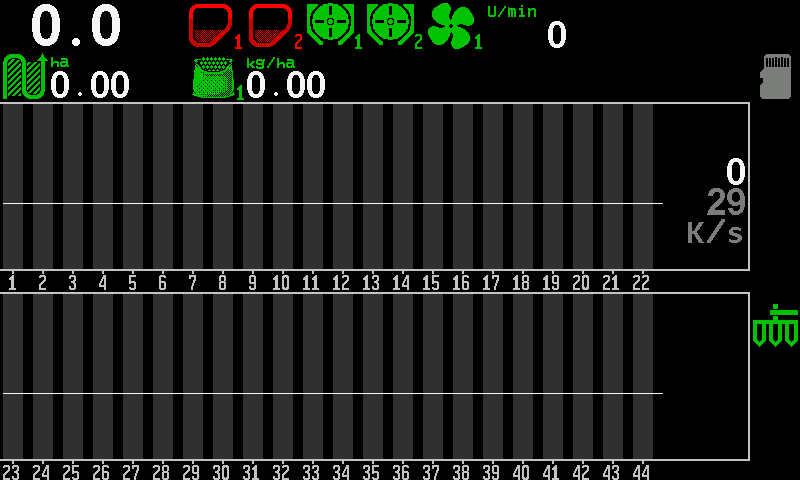
Vierundzwanzig Kornsensoren und zwölf Düngersensoren: zwei Diagramme, zwei Mengenfelder. Am oberen Rand zwei Behälter, zwei Dosierwellen, Öldruck, Batterie, Zündung und ein Gebläse.

Acht Kornsensoren im Modus „Einzelkorn“ mit einem Drucksensor: eine Säulenreihe mit dem Toleranzband, die Menge in Körnern je Meter und die Zahl je Hektar.
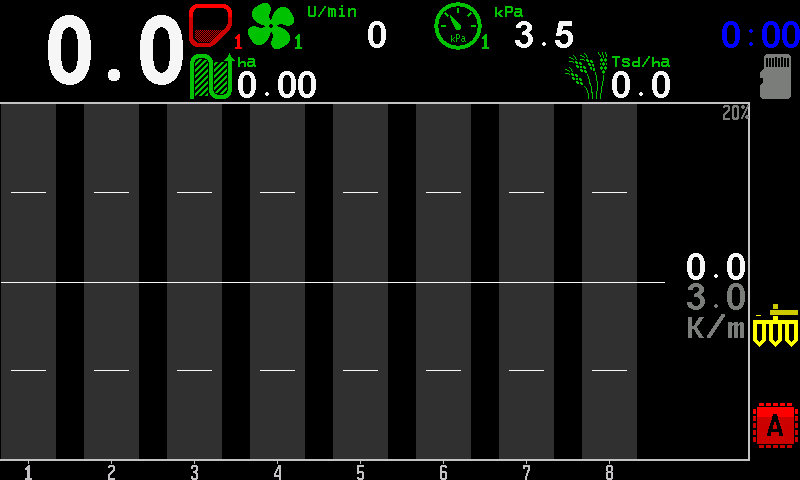
Bei der Arbeit
Das Achtreihen-Einzelkornsägerät bei der Aussaat. Jede Säule ist eine Reihe; die Säulenspitzen bewegen sich mit jeder Zählung, die Schraffur zeigt Fehlstellen und Doppelbelegungen. Lesen Sie es zusammen mit Das Sektionsdiagramm.

Die Drillmaschine mit 24 Reihen bei 12 km/h. Die Bildfolge beginnt mit den Säulen unter der Linie und „NICHT ÜBERWACHT“ über beiden Diagrammen; dann wird der Sollwert gesenkt, die Säulen steigen über die Linie, und die Reihen sind wieder in der Überwachung.
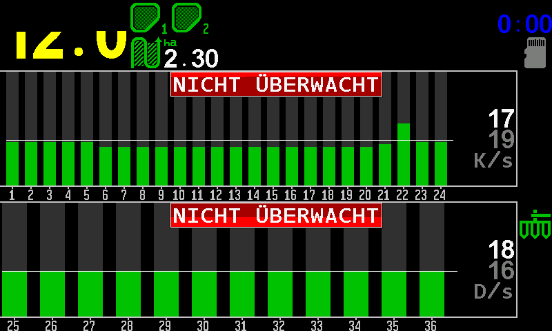
Die Maschine mit 44 Reihen bei 12 km/h: zwei Diagramme mit je zweiundzwanzig Säulen, Behälter voll, Dosierwellen drehen sich.

Die größte Maschine: 48 Saat- und 48 Düngerreihen, drei Behälter, drei Dosierwellen, zwei Gebläse. Auch sie beginnt unter der Linie und kommt wieder in die Überwachung, wenn der Sollwert auf die tatsächliche Menge sinkt.

Eine echte Maschine bei der Arbeit
Aufgenommen an einer Maschine mit 48 Kornsensoren in zwei Reihen, zwei Behältern, zwei Dosierwellensensoren und einem Gebläse während der Aussaat. Das Mengenfeld ist zum Ändern ausgewählt: Sein Hintergrund ist hell, der Sollwert ist weiß und der gemessene Wert grau. Ist es nicht ausgewählt, ist es umgekehrt.

Anzeigen des Startbildschirms
Jede Anzeige des Startbildschirms mit allen ihren Zuständen — was Sie sehen, was es bedeutet, was zu tun ist.
Wo jede Anzeige sitzt, zeigt Der Startbildschirm. Diese Seite sagt, was jede einzelne bedeutet, Zustand für Zustand.
So lesen Sie jede Anzeige


Fast jede Anzeige folgt derselben Regel. Lernen Sie sie einmal, und Sie können auch eine Anzeige lesen, die Sie noch nie gesehen haben.
| Was Sie sehen | Was es bedeutet |
|---|---|
| Normal. Das Gerät antwortet, und sein Wert liegt innerhalb der Grenzen. | |
| Alarm. Das Gerät antwortet, aber der Wert hat die Grenzen verlassen. Nach der Alarmverzögerung folgt ein Alarmfenster. | |
| Keine Antwort vom Gerät. Der Wert wird als XXXX angezeigt. | |
| Das Gerät steht im Profil, aber seine Überwachung ist ausgeschaltet. Der Wert wird als !!!! angezeigt. | |
| Symbol im Wechsel mit einem roten ? | Ein Gerät der falschen Art antwortet an seiner Stelle. Der Wert wird als ???? angezeigt. |
| Keine Störung. Ein Zustand, den Sie gewählt haben oder der Ihre Aufmerksamkeit verlangt: Gerät angehoben, Spuranzeiger oben, Zündung aus, Ausbringung von Hand gesperrt. |
Geschwindigkeit
Die Fahrgeschwindigkeit in km/h. Meldungen zur Geschwindigkeit ersetzen die Zahl und blinken etwa einmal pro Sekunde, damit die Zahl lesbar bleibt.
| Was Sie sehen | Was es bedeutet |
|---|---|
| Eine Zahl in Weiß, z. B. 10.0 | Normal. |
| „LANGSAMER“ auf Rot | Sie fahren schneller als das für den Geschwindigkeitssensor eingestellte Maximum. Fahren Sie langsamer. |
| „SCHNELLER“ auf Rot | Sie fahren langsamer als das Minimum. Fahren Sie schneller. |
| XX.X in Rot | Keine Antwort vom Eingangsgerät, an dem der Geschwindigkeitssensor angeschlossen ist. |
| ???? in Rot | Ein Gerät der falschen Art antwortet anstelle des Geschwindigkeitssensors. |
| Eine gelbe Zahl im Wechsel mit „SIMULIERT“ | Die Geschwindigkeit wird aus der Einstellung des Geschwindigkeitssensors simuliert, nicht gemessen. Nichts, was von der Geschwindigkeit abhängt, ist echt. Siehe Arbeiten ohne Geschwindigkeitssensor. |
| SIMUL. ERHÖHEN / SIMUL. SENKEN | Die simulierte Geschwindigkeit selbst liegt außerhalb des zulässigen Bereichs. Ändern Sie die Einstellung, nicht die Fahrgeschwindigkeit. |
| Sensor1 / Sensor2 | Einer von zwei Geschwindigkeitssensoren ist ausgefallen. |
| „Einstellungen“ | Minimum und Maximum der Geschwindigkeit widersprechen einander. |
„LANGSAMER“ und „SCHNELLER“ sind keine Alarmfenster. Sie bleiben im Geschwindigkeitsfeld stehen, solange die Geschwindigkeit falsch ist, weil Sie sie beim Korrigieren sehen müssen. Siehe Alarme des Geschwindigkeitssensors.
Uhr
Das Uhrfeld oben rechts wird von mehreren Meldungen gemeinsam genutzt.
| Was Sie sehen | Was es bedeutet |
|---|---|
| Die Uhrzeit in Weiß | Normal. |
| BAT in Rot, etwa eine Sekunde von jeweils vier | Die Batterie der Uhr ist schwach. Die Uhr läuft noch; zwischen den Blinkphasen wird die Uhrzeit rot angezeigt. Lassen Sie die Batterie wechseln. |
| XX:XX in Rot, blinkend | Der Uhrenbaustein antwortet nicht. Das Panel hat kein Datum und keine Uhrzeit; alles, was es aufzeichnet, trägt das falsche. |
| IMITAT in Gelb | Der Simulationsmodus des Servicemenüs ist eingeschaltet. |
| Blaue Stunden:Minuten, dann DEMO, dann leer | Ein Demo-Zeitraum läuft; die blaue Zahl ist die verbleibende Zeit. Hat die erste Zeile keinen Platz für die Uhr, erscheint diese Schleife nur hin und wieder. |
Speicherkarte

Zeigt, dass eine microSD-Karte im Steckplatz steckt. Nur zwei Zustände: Das Symbol ist da, oder es ist nicht da.
Behälter


Ein voller grüner Behälter ist normal. Ein leerer roter bedeutet, dass der Füllstand unter den Sensor gefallen ist: nachfüllen. Siehe Behälter-Alarme.
Dosiereinheit


Die Drehung der Dosierwelle. Solange sich die Welle dreht, dreht sich das Symbol — der schnellste Weg zu sehen, dass die Dosiereinheit wirklich läuft. Rot bedeutet keine Drehung oder nicht die geforderte Drehzahl. Siehe Drehungs-Alarme.
Gebläse
Die Gebläsedrehzahl in Umdrehungen pro Minute. Grün ist normal; rot — über dem Maximum oder unter dem Minimum. Das × und das [!] haben die übliche Bedeutung.
Druck

Der Unterdruck oder der Überdruck der Luft im Verteilsystem, in kPa. Grün ist normal; rot — über oder unter dem zulässigen Bereich. Siehe Druck-Alarme.
Motorsensoren


Die Sensoren des Motors, der das Gebläse antreibt.
| Anzeige | Grün | Rot oder gelb |
|---|---|---|
| Öldruck | Normal | Rot: Der Öldruck ist unter das zulässige Niveau gefallen. |
| Batterieladung | Normal | Rot: Die Batterie wird nicht geladen. |
| Zündung | Grüner Schlüssel: Zündung ein, die Motorsensoren werden überwacht | Gelber Schlüssel: Zündung aus. Keine Störung — aber der Motor wird auch nicht überwacht. |
| Kraftstoffstand | Normal | Rot: Im Tank ist nur noch wenig Kraftstoff. |
| Luftfilter | Normal | Rot: Der Luftfilter ist verstopft; reinigen oder ersetzen Sie ihn. |
Fläche
Die auf dem aktiven Feld bearbeitete Fläche in Hektar.
Aussaatmenge

Im Modus „Einzelkorn“: die tatsächliche Aussaatmenge in Tausend Körnern je Hektar (Tsd/ha).
Produktmenge nach Masse


Wird angezeigt, wenn die Dosierer Produkte nach Masse ausbringen; eine Anzeige je Produkt, mit ihrer Nummer. Sie zeigt die Menge in kg je Hektar.
| Was Sie sehen | Was es bedeutet |
|---|---|
| Symbol grün | Normal. Die Maschine bringt aus, was von ihr verlangt wurde. |
| Symbol rot, blinkend | Die tatsächliche Menge liegt außerhalb der zulässigen Abweichung vom Sollwert. |
| Feld hell, Zahl blinkt | Der Sollwert wird eingestellt. Berühren und halten Sie das Feld, um den Sollwert auf dem Ziffernblock einzugeben, oder verwenden Sie „PLUS“ / „MINUS“. |
| Feld hell, blinkt nicht | Das Einstellen ist eingeschaltet, aber ein anderes Mengenfeld ist das, das geändert wird. Dieses zeigt seinen Sollwert und wartet. |
Dosierung nach Masse nicht möglich
Ein rotes blinkendes Produktsymbol am rechten Rand. Das Panel hat errechnet, dass der Sollwert bei keiner Fahrgeschwindigkeit gehalten werden kann: Die niedrigste Geschwindigkeit, bei der die Dosierwalzen die Menge liefern können, liegt bereits auf oder über der höchsten.
Was zu tun ist. Prüfen Sie zuerst die Sollmengen — ein Produkt, das zu viel verlangt, schließt das Fenster für alle. Prüfen Sie dann die Dosierwalzen: Möglicherweise wird eine Walze anderer Größe benötigt. Die vom Panel errechneten Geschwindigkeitsgrenzen stehen auf dem Bildschirm „Information“ des Geschwindigkeitssensors. Siehe Alarme der Dosierung nach Masse.
Spuranzeiger

| Was Sie sehen | Was es bedeutet |
|---|---|
| Grün, beide Arme unten | Beide Spuranzeiger sind abgesenkt. |
| Grün, ein Arm unten | Nur dieser Spuranzeiger ist abgesenkt — links oder rechts, wie gezeichnet. |
| Gelb, beide Arme oben | Beide Spuranzeiger sind angehoben. Keine Störung; an einer Maschine, die den Fahrgassen-Durchgang über die Spuranzeiger wechselt, wechselt der Durchgang jetzt. |
Gerätestellung


Grün — abgesenkt, in Arbeit. Gelb — angehoben, in Transportstellung, bringt nicht aus.
Fahrgassen-Durchgang

Wird nur angezeigt, wenn die Fahrgasse eingeschaltet ist. Die große Zahl ist der aktuelle Durchgang, die kleine darunter die Zahl der Durchgänge im Rhythmus.
| Was Sie sehen | Was es bedeutet |
|---|---|
| Zahlen des Durchgangs, z. B. 1 über 3 | Wie weit es bis zur nächsten Fahrgasse ist. |
| Fahrgassen-Symbol grau | Der Durchgang wechselt von selbst. |
| Fahrgassen-Symbol gelb | Der Durchgang wechselt nicht von selbst: Der automatische Wechsel ist ausgeschaltet, oder der Sensor, von dem er abhängt, fehlt, schweigt oder wird nicht überwacht. Wechseln Sie ihn von Hand. |
Siehe Zum nächsten Fahrgassen-Durchgang wechseln.
Handsperre

Eine gelbe Hand, blinkend, am rechten Rand: Die Produktausbringung ist von Hand gesperrt. Die Maschine bringt nichts aus, wie auch immer sie fährt. Wird überhaupt nicht angezeigt, solange die Ausbringung freigegeben ist. Sie erscheint an Maschinen mit Elektromotoren der Dosierer oder einer Flüssigdüngerpumpe. Siehe Ausbringung von Hand sperren.
Aktuatorstörung


Ein Symbol für alle Elektromotoren und Fahrgassen-Aktuatoren zusammen. Wird überhaupt nicht angezeigt, solange alles in Ordnung ist.
| Was Sie sehen | Was es bedeutet |
|---|---|
| Rot, blinkend | Mindestens ein Motor oder Aktuator befindet sich im Alarmzustand. |
| Im Wechsel mit weißem [!] | Die Überwachung mindestens eines Aktuators ist ausgeschaltet. Es ist keine Störung bekannt — aber dieser Aktuator wird nicht überwacht. |
Welcher und warum, steht auf dem Bildschirm Motoren.
Flüssigdüngerpumpe
Je nach Ausstattung hat die Pumpe zwei oder drei Anzeigen.
| Anzeige | Was sie zeigt |
|---|---|
| Die Hauptanzeige. Ihr Kontextmenü enthält die Parameter der Pumpe. | |
| Wie stark die Pumpe arbeitet. Sie verschwindet als Erste, wenn der Bildschirm keinen Platz für sie hat. | |
| Nur, wenn der Drucksensor angebaut und in den Einstellungen des Pumpen-Controllers eingeschaltet ist. |
Menge. Außer Grün, Rot, × und [!]: eine gelbe Pumpe mit STOP — die Ausbringung ist von Hand gesperrt oder das Gerät ist angehoben, und die Pumpe läuft nicht an, wenn die Maschine fährt; eine hell hinterlegte Sollzahl — im Profil gibt es keine Durchflusssensoren der Sektionen, die Zahl ist also der Sollwert, keine Messung.
Last. Ab 99 % wird sie gelb: Die Pumpe ist an ihrer Grenze und kann einer höheren Geschwindigkeit nicht mehr folgen. Fahren Sie langsamer, sonst fällt die Menge unter den Sollwert. ---- rot blinkend: Der Controller meldet keinen Lastwert.
Druck. Rot bedeutet, dass der Flüssigkeitsdruck zu hoch ist — verringern Sie die Geschwindigkeit oder erhöhen Sie „Maximaler Druck, Bar“ in den Einstellungen des Pumpen-Controllers, wenn die Leitung ihn wirklich aushält. ---- rot blinkend: Der Drucksensor ist defekt oder liefert keinen Wert. Siehe Alarme des Pumpen-Controllers.
Der zweite Startbildschirm
Der Startbildschirm für eine Maschine ohne Kornsensoren — was auf ihm steht, wie Sie ihn öffnen und schließen und was seine Pfeilspitzen und Kacheln bewirken.
Dieser Bildschirm wurde für ein System ohne Kornsensoren geschaffen: eine Maschine, bei der die Aussaatmenge von den Elektromotoren der Dosierer gehalten wird und das Panel die wichtigsten Arbeitsaggregate überwacht. An einer solchen Maschine wäre der gewöhnliche Startbildschirm fast leer.
Öffnen Sie ihn vom Startbildschirm aus mit einem Wischen nach rechts. Schließen Sie ihn mit „HOME“ oder einem Wischen nach links. Er gehört nicht zum Kreis der Arbeitsbildschirme, und das Panel schaltet nicht von selbst auf ihn um — auch an einer Maschine ohne Kornsensoren startet es auf dem gewöhnlichen Startbildschirm.

- Gebläse. Das Gebläse und seine Drehzahl in U/min.
- Kornablage. In Körnern je Meter.
- Fahrgeschwindigkeit. In km/h; gelb, solange sie simuliert wird. Geschwindigkeit
- Fläche. Bearbeitete Hektar auf dem aktiven Feld.
- Einstellungssymbol. Eine Berührung öffnet das Hauptmenü, genau wie „MENU“.
- Rote Pfeilspitzen. Eine Berührung nimmt den äußersten Motor auf dieser Seite aus der Überwachung.
- Grüne Pfeilspitzen. Eine Berührung nimmt den nächsten Motor zu dieser Seite hin wieder in die Überwachung.
- Sollmenge. In Tausend Körnern je Hektar. Berühren und halten Sie sie und wischen Sie dann nach oben oder unten, um sie zu ändern.
- Motor 1. Seine Nummer und sein Wert; das Symbol wechselt mit dem Zustandszeichen — hier STOP, der Motor läuft nicht.
- Motor 2. Ein rotes × und XXX — keine Verbindung; der Motor wird nicht angesteuert.
- Handsperre. Die gelbe Hand: Die Ausbringung ist von Hand gesperrt. Berühren und halten Sie sie oder halten Sie „HOME“ gedrückt, um zu sperren oder freizugeben.
Jedes Motorsymbol wechselt etwa einmal pro Sekunde zwischen dem Bild des Motors und dem Zeichen seines Zustands. In der anderen Blinkphase sieht derselbe Bildschirm so aus — die Motoren sind als Motorsymbole gezeichnet, und das Wort „SIMULIERT“ hat die Geschwindigkeitsanzeige ersetzt, weil die Geschwindigkeit simuliert wird:

Was Sie hier tun können
| Aufgabe | So geht es |
|---|---|
| Das Hauptmenü öffnen | „MENU“ oder das Einstellungssymbol berühren |
| Die Aussaatmenge ändern | Die Menge berühren und halten, dann nach oben oder unten wischen. Sie bleibt innerhalb der zulässigen Grenzen. |
| Motoren aus der Überwachung nehmen oder wieder hineinnehmen | Die roten oder grünen Pfeilspitzen an den Enden des Mengenstreifens berühren. Mit „Ja“ bestätigen, wenn das Panel fragt. |
| Die Einstellungen eines Motors öffnen | Den Motor berühren und halten |
| Die Produktausbringung sperren oder freigeben | „HOME“ gedrückt halten oder die Hand berühren und halten. Ein kurzer Signalton bestätigt. |
| Zum Startbildschirm zurückkehren | „HOME“ oder nach links wischen |
Was die Zustände der Motoren bedeuten: Bildschirm Motoren.
Die Arbeitsbildschirme und wie Sie zwischen ihnen wechseln
Die vier Arbeitsbildschirme in ihrem Kreis, der zweite Startbildschirm daneben und jeder Weg — per Taste oder Wischen — von einem zum anderen.
Das Panel hat vier Arbeitsbildschirme in einem Kreis und einen fünften, der für sich steht.
| Bildschirm | Wofür er dient |
|---|---|
| Startbildschirm | Die Diagramme der Sektionen, die Anzeigen der Geräte, die Geschwindigkeit, die Fläche und die Mengen. Hier startet das Panel. |
| Tabelle | Die Messwerte jeder Sektion in Zahlen, als Liste. Mehrere Tabellen, je nach Überwachungsmodus. |
| Statistik | Die Ergebnisse der Arbeit nach Feld: Fläche, Weg, Mengen, Qualität. |
| Motoren | Die Elektromotoren der Dosierer und, wenn die Maschine welche hat, die Fahrgassen-Aktuatoren. Nur vorhanden, wenn das Profil mindestens einen Motor oder Fahrgassen-Aktuator enthält. |
| Zweiter Startbildschirm | Ein Startbildschirm für Maschinen ohne Kornsensoren. Außerhalb des Kreises. |
Der Bildschirm Motoren hieß in früheren Unterlagen Bildschirm „Aktuatoren“. An den meisten Maschinen zeigt er die Elektromotoren der Dosierer, deshalb nennt ihn diese Anleitung Motoren.
Der Kreis
„HOME“ schaltet zum nächsten Bildschirm, immer in dieselbe Richtung, und kehrt vom letzten zum Startbildschirm zurück:
Startbildschirm → Tabelle → Statistik → Motoren → Startbildschirm.
Sind im Profil weder Motoren noch Fahrgassen-Aktuatoren eingetragen, gibt es keinen Bildschirm Motoren, und die Statistik führt direkt zum Startbildschirm zurück.
Jeder Weg von einem Bildschirm zum anderen
Ein Wischen muss lang sein, mit einem Finger, quer über den Bildschirm — eine kurze Bewegung gilt nicht als Wechsel.
| Von | Aktion | Nach |
|---|---|---|
| Startbildschirm | „HOME“ oder nach links wischen | Tabelle |
| Startbildschirm | Nach rechts wischen | Zweiter Startbildschirm |
| Tabelle | „HOME“ oder nach links wischen | Statistik |
| Tabelle | „BACK“ oder nach rechts wischen | Startbildschirm |
| Statistik | „HOME“ oder nach links wischen | Motoren (Startbildschirm, wenn die Maschine keine hat) |
| Statistik | Nach rechts wischen | Tabelle |
| Statistik | „BACK“ | Startbildschirm |
| Motoren | „HOME“, „BACK“ oder nach links wischen | Startbildschirm |
| Motoren | Nach rechts wischen | Statistik |
| Zweiter Startbildschirm | „HOME“ oder nach links wischen | Startbildschirm |
Tasten oder Gesten
Fast alles auf den Arbeitsbildschirmen lässt sich mit einer Taste oder mit einer Geste erledigen.
| Bildschirm | Was es bewirkt | Taste | Geste |
|---|---|---|---|
| Startbildschirm | Öffnet das Hauptmenü | „MENU“ | Mit zwei Fingern tippen |
| Startbildschirm | Setzt die Alarmschwelle aus der tatsächlichen Menge | — | Doppeltippen mit einem Finger, während ausgebracht wird |
| Startbildschirm | Öffnet den zweiten Startbildschirm | — | Nach rechts wischen |
| Tabelle | Blättert die Zeilen | „UP“ / „DOWN“ | Nach oben oder unten wischen |
| Tabelle | Vorherige oder nächste Tabelle | „MINUS“ / „PLUS“ | Lang mit zwei Fingern nach links oder rechts wischen |
| Tabelle | Fragt, ob die Werte zurückgesetzt werden sollen | „MENU“ | Mit zwei Fingern tippen |
| Statistik | Blättert den Bericht | „UP“ / „DOWN“ | Nach oben oder unten wischen |
| Statistik | Zeigt ein anderes Feld | „MINUS“ / „PLUS“ | Mit zwei Fingern nach links oder rechts wischen |
| Statistik | Öffnet das Menü des Bildschirms | „MENU“ | Mit zwei Fingern tippen |
Zwei Aktionen auf den Arbeitsbildschirmen haben keine Taste: das Wischen nach rechts, das den zweiten Startbildschirm öffnet, und das Doppeltippen, das die Alarmschwelle setzt. Alles andere ist mit den Tasten erreichbar. Die vollständige Liste je Bildschirm: Tasten und Gesten.
Der Bildschirm Tabelle
Die Messwerte jeder Sektion in Zahlen — welche Tabellen Ihre Maschine hat, was jede Spalte bedeutet und wie Sie die Farben lesen.
Der Bildschirm Tabelle zeigt die Messwerte jeder Sektion als Zahlen, eine Zeile je Sektion. Er beantwortet die Frage, die das Diagramm nicht beantwortet: welche Sektion genau, und um wie viel. Öffnen Sie ihn vom Startbildschirm aus mit „HOME“; verlassen Sie ihn mit „BACK“.
Ein Einzelkornsägerät im Modus „Einzelkorn“
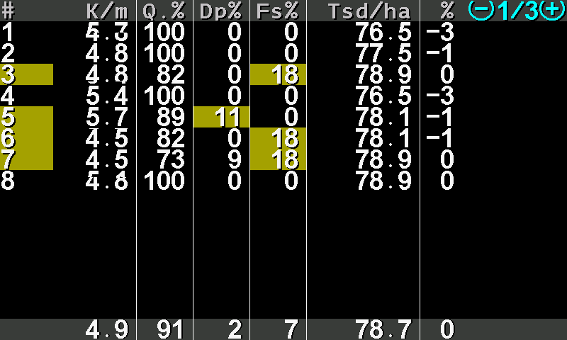
- #. Die Nummer der Sektion.
- K/m. Körner je Meter, jetzt gemessen.
- Q.%. Qualität — der Anteil der Körner, die wie vorgesehen einzeln abgelegt wurden.
- Dp%. Doppelbelegungen — zwei Körner, wo eines vorgesehen war.
- Fs%. Fehlstellen — eine Lücke, wo ein Korn vorgesehen war.
- Tsd/ha. Die ausgebrachte Menge in Tausend Körnern je Hektar (in der zweiten Tabelle: Körner je Meter).
- %. Die Abweichung dieser Sektion von der eingestellten Menge.
- Tabellennummer. Diese Tabelle und wie viele es gibt, zwischen (−) und (+) — „MINUS“ und „PLUS“ schalten die Tabellen um.
- Sektionsnummer auf Gelb. Etwas in dieser Zeile hat sich seiner Grenze genähert.
- Wert auf Gelb. Die Zahl, die sich genähert hat — hier die Fehlstellen von Sektion 7.
- Summen. Dieselben Spalten für die ganze Maschine.
Ein Wert auf Gelb nähert sich seiner Grenze; auf Rot hat er sie überschritten. Eine ganze Zeile in Grau mit ! ist eine Sektion, die aus der Überwachung genommen wurde; eine Zeile in Rot mit × ist ein Sensor, der nicht antwortet, mit ? ein Gerät der falschen Art.
Eine Drillmaschine im Modus „Durchfluss“
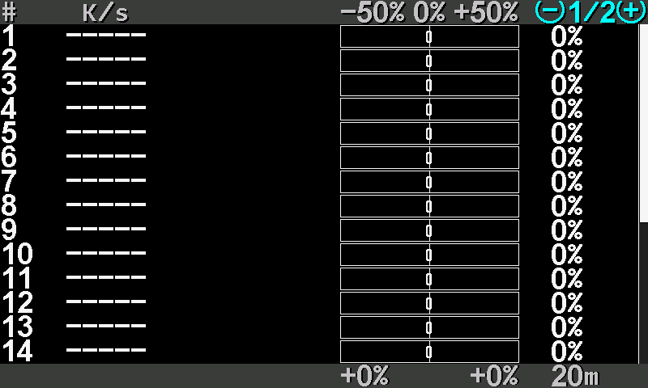
- #. Die Nummer der Sektion.
- K/s. Körner je Sekunde. Striche, solange nichts gezählt wird.
- Abweichungsskala. Von −50 % über 0 bis +50 %.
- Abweichungsbalken. Wie weit diese Sektion von der eingestellten Menge entfernt ist.
- %. Dieselbe Abweichung als Zahl.
- Tabellennummer. Tabelle 1 von 2 — die zweite enthält die Düngersektionen.
- Niedrigste Abweichung. Die Sektion, die am weitesten unter der Menge liegt.
- Höchste Abweichung. Die Sektion, die am weitesten über der Menge liegt.
- Neuberechnungsintervall. Die Strecke, über die die Werte gesammelt werden — „Neuberechnung, m“ der Sensoren.
Welche Tabellen Ihre Maschine hat
| Tabelle | Wird angezeigt, wenn |
|---|---|
| Kornzähler — Körner je Sekunde oder je Meter, mit den Abweichungsbalken | Immer. |
| Menge je Fläche (Tausend je Hektar) und Menge je Strecke (Körner je Meter) | Nur im Überwachungsmodus „Einzelkorn“. |
| Trockendünger | Die Maschine hat Düngersensoren, und der Überwachungsmodus für Dünger ist nicht „Einzelkorn“. |
| Flüssigdünger | Die Maschine hat Flüssigdüngersensoren. |
Im Modus „Einzelkorn“ hat das Einzelkornsägerät oben drei Tabellen: Menge je Fläche (1/3), Menge je Strecke (2/3) und die Kornzähler (3/3) — die Zahl der Körner, die jede Sektion gesät hat, neben den Abweichungsbalken, mit der Summe für die Maschine in Tausend unten.
Arbeiten mit dem Bildschirm
| Was Sie möchten | Taste | Oder Geste |
|---|---|---|
| Nächste oder vorherige Tabelle | „PLUS“ / „MINUS“ | Lang mit zwei Fingern nach links oder rechts wischen |
| Zeilen blättern | „UP“ / „DOWN“ | Nach oben oder unten wischen |
| Werte zurücksetzen | „MENU“ | Mit zwei Fingern tippen |
| Zur Statistik wechseln | „HOME“ | Nach links wischen |
| Zurück zum Startbildschirm | „BACK“ | Nach rechts wischen |
Zurücksetzen: Werte zurücksetzen.
Die Tabelle während der Aussaat
Die Zeilen ändern sich mit jeder Zählung; eine Zeile, die sich der Grenze nähert, wird gelb.
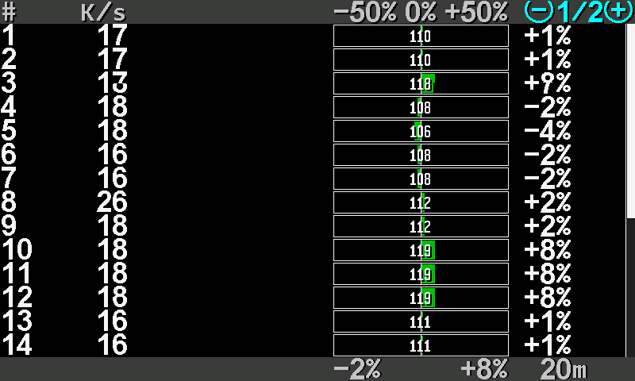
An großen Maschinen passen die Reihen nicht auf eine Seite: „UP“ und „DOWN“ blättern sie.
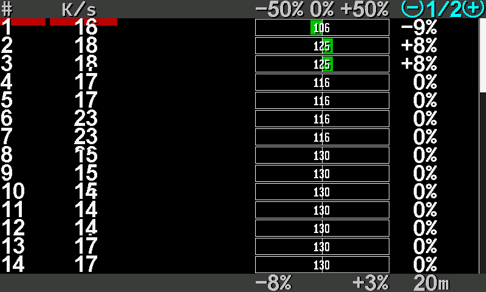
Der Bildschirm Statistik
Der Bericht über die Arbeit auf jedem Feld, Block für Block und Zeile für Zeile — und das Menü, das das Feld wählt, den Bericht speichert und ihn löscht.
Der Bildschirm Statistik ist der Bericht über die Arbeit: wie weit Sie gefahren sind, wie viel Sie bearbeitet haben, wie viel Sie gesät haben und wie gleichmäßig. Er wird für jedes Feld getrennt geführt und übersteht das Ausschalten. Öffnen Sie ihn mit „HOME“ vom Bildschirm Tabelle aus (zweimal vom Startbildschirm aus); verlassen Sie ihn mit „BACK“.
Der Bericht ist eine lange Liste. Blättern Sie mit „UP“ und „DOWN“ oder wischen Sie nach oben und unten.
Der Kopf und die Arbeit auf dem Feld
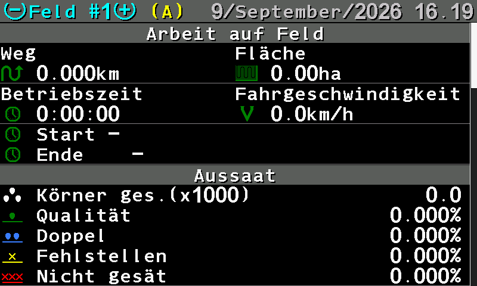
- Feldnummer. Das Feld, dessen Bericht Sie sehen. „MINUS“ und „PLUS“ — oder ein Wischen mit zwei Fingern — zeigen ein anderes Feld.
- (A). Dies ist das aktive Feld — das, in das das Panel jetzt schreibt.
- Datum und Uhrzeit. Das heutige Datum und die Uhrzeit.
- Weg. Gefahrene Strecke in km.
- Fläche. Bearbeitete Fläche in ha.
- Betriebszeit. Stunden, Minuten und Sekunden Arbeit.
- Fahrgeschwindigkeit. Die durchschnittliche Fahrgeschwindigkeit.
- Start / Ende. Wann die Arbeit auf diesem Feld begann und endete.
- Aussaat. Der nächste Block — siehe unten.
Der Block Aussaat

- Körner ges.(x1000). Die Summe in Tausend Körnern.
- Qualität. Der Anteil der Körner, die wie vorgesehen einzeln abgelegt wurden. Beurteilen Sie die Arbeit nach dieser Zahl.
- Doppel. Zwei Körner, wo eines vorgesehen war.
- Fehlstellen. Eine Lücke, wo ein Korn vorgesehen war.
- Nicht gesät. Der Anteil der Fahrt, auf dem überhaupt nichts herauskam.
- Istwert / Sollwert. Was ausgebracht wurde, gegen das, was eingestellt war.
- Dichte,Tsd/ha. In Tausend je Hektar; die Abweichung in Klammern.
- Menge,K/m. In Körnern je Meter; der Sollwert rechts.
- Gesät / Nicht gesät / Unbekannt. Das Feld in drei Teilen, in Hektar.
- Balken. Dieselbe Aufteilung als farbiger Balken: grün gesät, rot nicht gesät, grau unbekannt.
- Kornsensoren. Der nächste Block — Sektion für Sektion.
Unbekannt ist die Fläche, die gefahren wurde, während das Panel nicht urteilen konnte — keine Störung, aber auch kein Beweis für getane Arbeit.
Sektion für Sektion

- Kornsensoren. Es folgt ein Block je Sektion.
- Kornsensor 1. Die Sektionsnummer und die Körner, die sie gezählt hat.
- q d s n. Qualität, Doppelbelegungen, Fehlstellen und nicht gesät für diese Sektion.
- Gesät / nicht gesät / unbekannt. Der Anteil jedes Zustands für diese Sektion (s, n, ?) und der Balken.
- Dichte. Tausend je Hektar für diese Sektion, mit ihrer Abweichung.
- Abstand. Körner je Meter für diese Sektion, mit ihrer Abweichung.
Hier zeigt sich eine ungleichmäßig arbeitende Drillmaschine. Eine Sektion mit geringerer Qualität als die übrigen oder mit einem längeren roten Teil ihres Balkens weist auf diese Reihe hin: ein verstopfter Auslauf, eine verschlissene Scheibe, ein Sensor, der gereinigt werden muss.
Blöcke, die an anderen Maschinen erscheinen
| Block | Was er enthält |
|---|---|
| Arbeit ohne Alarmüberwachung | Der Teil der Arbeit, den das Panel nicht überwacht hat — gefahren bei ausgeschalteter oder gesperrter Überwachung. |
| Geschwindigkeitsüberwachung | Wie weit und wie lange Sie außerhalb des zulässigen Geschwindigkeitsbereichs gefahren sind. |
| Düngung, Flüssigdünger | Gedüngt / nicht gedüngt / unbekannt, wenn die Maschine sie ausbringt. |
| Produkt | Für ein nach Masse ausgebrachtes Produkt: die ausgebrachte Menge und die Istmenge gegen die Sollmenge in kg/ha. |
Das Menü des Bildschirms
Drücken Sie „MENU“ oder tippen Sie mit zwei Fingern.

| Punkt | Was er bewirkt |
|---|---|
| „Feld wählen“ | Macht das angezeigte Feld zum aktiven — das Panel schreibt von jetzt an in dieses. Wird nur angezeigt, solange Sie ein Feld ansehen, das nicht aktiv ist. Ein Feld, dessen Statistik nicht leer ist, kann erst gewählt werden, wenn seine Daten gelöscht sind; das Panel sagt es und fragt nach. |
| „Statistik“ | Schaltet den Bericht zwischen kurz und voll um. Der kurze Bericht behält die Summen und lässt die Einzelheiten je Sektion weg. |
| „Wegstrecke“ | Weg in km und Fläche in ha über die gesamte Lebensdauer des Systems. Diese Summen lassen sich nicht zurücksetzen. Ohne Geschwindigkeitssensor stattdessen die aufgelaufene Laufzeit. |
| „Auf SD-Karte sichern“ | Schreibt ein Feld oder alle auf die Speicherkarte. Wird angezeigt, solange eine Karte im Steckplatz steckt. |
| „Statistik zurücksetzen“ | Löscht die Statistik. |
Der Bildschirm Motoren
Die Elektromotoren der Dosierer und die Fahrgassen-Aktuatoren der Maschine, je eine Kachel — wie Sie eine Kachel lesen und wie Sie zu den Einstellungen eines Motors gelangen.
Der Bildschirm Motoren zeigt die Elektromotoren der Dosierer der Maschine, je eine Kachel, und die Fahrgassen-Aktuatoren, falls die Maschine welche hat. Sehen Sie hier nach, wenn eine Reihe nicht mehr sät und Sie wissen möchten, ob der Motor der Grund ist.
Er ist an jeder Maschine vorhanden, deren Profil mindestens einen Elektromotor oder einen Fahrgassen-Aktuator enthält. Erreichen Sie ihn mit „HOME“ vom Bildschirm Statistik aus; verlassen Sie ihn mit „HOME“ oder „BACK“.
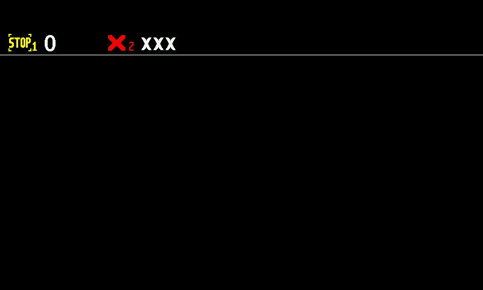
- Motor 1, STOP. Gelb — der Motor ist betriebsbereit, aber die Produktausbringung läuft nicht.
- Wert von Motor 1. Die Drehzahl der angetriebenen Welle in U/min oder, im Modus „Einzelkorn“, Körner je Meter.
- Motor 2, rotes ×. Keine Verbindung zu diesem Motor.
- XXX. Kein Wert, weil der Motor nicht antwortet.
Eine Kachel lesen
Die Farbe des Symbols ist der Zustand. Der Wert daneben ist die Drehzahl der angetriebenen Welle in U/min — oder, im Überwachungsmodus „Einzelkorn“, die Körner je Meter, die der Kornsensor dieser Reihe gemessen hat.
| Symbol | Wert | Zustand |
|---|---|---|
| Motor, grün | die Zahl | Normal. Der Motor wird überwacht und angesteuert. |
| STOP, gelb | die Zahl | Der Motor ist betriebsbereit, aber die Produktausbringung ist ausgeschaltet. Mit ihm ist nichts falsch — das System bringt nur gerade nichts aus. |
| Motor, rot | die Zahl | Der Motor befindet sich im Alarmzustand. Den Grund nennt der Alarm: Alarme des Motor-Controllers. |
| ×, rot | XXX | Keine Verbindung. Prüfen Sie zuerst Kabel und Stecker. |
| ?, rot | ??? | Das Panel kann nicht erkennen, was dieses Gerät ist: Ein Gerät anderer Art antwortet an seiner Stelle, oder der Controller ist im Modus für die Firmware-Aktualisierung geblieben. |
| !, umrandet | !!! | Der Motor wurde vom Fahrer aus der Überwachung genommen. Er wird weder angesteuert noch überwacht. |
Fahrgassen-Aktuatoren
| Symbol des Aktuators | Zustand |
|---|---|
| Eingezogen oder ausgefahren, grün | Der Aktuator hat seine Stellung erreicht. |
| Eingezogen oder ausgefahren, gelb | Der Aktuator fährt in diese Stellung. |
| Im Wechsel zwischen ein und aus, gelb | Das Panel kann die Stellung des Aktuators nicht erkennen. |
| Rot blinkend | Der Aktuator befindet sich im Alarmzustand: Fahrgassen-Alarme. |
| Rotes × oder ? blinkend | Keine Verbindung oder ein Gerät der falschen Art. |
| Weiß blinkend | Der Aktuator wurde aus der Überwachung genommen. |
Arbeiten mit dem Bildschirm
| Was Sie möchten | Taste | Oder Geste |
|---|---|---|
| Die Einstellungen eines Motors | — | Seine Kachel berühren und halten |
| Zurück zum Bildschirm Statistik | — | Nach rechts wischen |
| Zurück zum Startbildschirm | „HOME“ oder „BACK“ | Nach links wischen |
Der lange Druck öffnet das Kontextmenü des Motors, den Sie gedrückt haben. Dasselbe Menü erreichen Sie vom Startbildschirm aus, aber hier sehen Sie alle Motoren der Maschine auf einmal und können den wählen, der sich falsch verhält. Siehe Einstellungen der Dosiermotoren.
Sollmenge ändern
Die Menge, die das Panel hält und überwacht, vom Startbildschirm aus während der Aussaat anheben oder absenken — mit den Tasten oder per Berührung.
Das Mengenfeld rechts neben jedem Diagramm zeigt zwei Zahlen: oben die gemessene Menge, darunter den Sollwert. Im Modus „Durchfluss“ ist der Sollwert die Alarmschwelle des Diagramms — siehe Das Sektionsdiagramm.
Mit den Tasten
Drücken Sie auf dem Startbildschirm einmal „PLUS“ oder „MINUS“. Ein Mengenfeld wird ausgewählt und beginnt zu blinken; es hat sich noch nichts geändert.
Das Mengenfeld rechts, zum Ändern ausgewählt: heller Hintergrund, Sollwert in Weiß. Drücken Sie „PLUS“, um den Sollwert zu erhöhen, oder „MINUS“, um ihn zu senken, einen Schritt je Druck.
Hat die Maschine mehr als ein Mengenfeld — Saatgut und Dünger oder Produkte nach Masse —, drücken Sie „DOWN“ oder „UP“, um zum nächsten oder zum vorigen zu wechseln.
Drücken Sie „BACK“, um abzuschließen. Das Feld hört auf zu blinken, und der neue Sollwert gilt.
Per Berührung
Berühren und halten Sie das Mengenfeld eines Diagramms. Es leuchtet auf.
Wischen Sie über den Bildschirm nach oben, um den Sollwert zu erhöhen, nach unten, um ihn zu senken — ein Schritt je Wischen.
Berühren Sie den Bildschirm außerhalb der Diagramme, um abzuschließen.
Bei einem nach Masse ausgebrachten Produkt öffnet das Berühren und Halten seiner kg/ha-Anzeige stattdessen den Ziffernblock: Geben Sie den Sollwert ein und berühren Sie „OK“ (Zahlen eingeben). Berühren und halten Sie auf dem zweiten Startbildschirm die Menge und wischen Sie dann.
Produktausbringung von Hand sperren
Die gesamte Produktausbringung mit einem langen Tastendruck anhalten und wieder starten — was die Sperre bewirkt und woran Sie sehen, dass sie eingeschaltet ist.
Die Handsperre hält die gesamte Produktausbringung an: Die Dosiermotoren und die Pumpe laufen nicht, wie auch immer sich die Maschine bewegt. Nutzen Sie sie, um ein bereits besätes Feld zu überqueren, um mit abgesenktem Gerät auf der Straße zu fahren oder wenn Sie ohne Geschwindigkeitssensor arbeiten.
Halten Sie auf dem Startbildschirm „HOME“ gedrückt, bis das Panel einmal piept.
Sehen Sie auf den rechten Bildschirmrand. Dort blinkt eine gelbe Hand: Die Ausbringung ist gesperrt.

Zum Entsperren halten Sie „HOME“ erneut gedrückt. Ein kurzer Signalton; die Hand verschwindet.
Auf dem zweiten Startbildschirm funktioniert dasselbe mit „HOME“ oder durch Berühren und Halten der Hand.
Was die Sperre an anderer Stelle ändert
- Die Motorkacheln auf dem Bildschirm Motoren zeigen ein gelbes STOP — betriebsbereit, bringt nicht aus.
- Die Mengenanzeige der Pumpe zeigt eine gelbe Pumpe mit STOP (Flüssigdüngerpumpe).
- Die Überwachung der Produktausbringung startet nicht, wenn Sie losfahren — die Sperre muss ausgeschaltet sein, damit die Überwachung startet (Kurzanleitung).
- Die bei gesperrter Ausbringung geleistete Arbeit wird in der Statistik als Arbeit ohne Alarmüberwachung gezählt (Statistik).
Die gelbe Hand wird an Maschinen mit Elektromotoren der Dosierer oder mit einer Flüssigdüngerpumpe angezeigt.
Alarmschwelle automatisch einstellen
Das Panel die Alarmschwelle der Diagramme aus der Menge setzen lassen, die die Maschine wirklich sät, statt sie zu schätzen — Drillmaschinen im Modus „Durchfluss“ oder „Hybrid“.
An einer Drillmaschine kommen die Körner zu dicht hintereinander, um sie einzeln zu zählen. Deshalb überwacht das Panel jede Reihe gegen eine Alarmschwelle: die Linie im Diagramm. Stellen Sie sie zu hoch ein, sinkt jede Reihe unter die Linie — „NICHT ÜBERWACHT“. Stellen Sie sie zu niedrig ein, bleibt eine halb verstopfte Reihe unbemerkt. Das Panel kann sie für Sie aus dem setzen, was die Maschine wirklich sät.
Das funktioniert in den Modi „Durchfluss“ und „Hybrid“, für die Diagramme von Saatgut und Trockendünger sowie für Flüssigdünger im Modus „Durchfluss“.
Beginnen Sie die Aussaat mit Ihrer normalen Geschwindigkeit, mit Produkt, das durch jede Reihe fließt.
Tippen Sie zweimal mit einem Finger auf den Startbildschirm.
Das Panel piept einmal und hellt das Mengenfeld auf: Die neue Alarmschwelle ist aus der Menge gesetzt, die gerade gesät wird.
Die Diagramme mit den Säulen über der Linie. Prüfen Sie, dass jede Säule über ihrer Linie steht.
Das Doppeltippen funktioniert nur, solange Produkt ausgebracht wird. Im Stillstand geschieht nichts.
Was die Linie bedeutet und warum Reihen darunter nicht überwacht werden: Das Sektionsdiagramm.
Sensor in die Überwachung nehmen oder herausnehmen
Das Panel einen Sensor nicht mehr überwachen lassen — eine abgeschaltete Sektion, ein defekter Sensor — und ihn später wieder aufnehmen.
Ein Sensor außerhalb der Überwachung wird nicht überwacht: Das Panel löst keinen Alarm für ihn aus, was auch immer er meldet. Nehmen Sie einen Sensor aus der Überwachung, wenn seine Sektion absichtlich außer Betrieb ist oder wenn der Sensor defekt ist und Sie das Feld zu Ende bringen müssen. Nehmen Sie ihn so bald wie möglich wieder auf.
Einen Sensor aus der Überwachung nehmen
Berühren und halten Sie auf dem Startbildschirm den Sensor — seine Säule im Diagramm oder sein Symbol. Sein Kontextmenü öffnet sich.
Das Kontextmenü eines Kornsensors. Wählen Sie mit „UP“ / „DOWN“ den Punkt „Überwachung aus“ und drücken Sie „MENU“, oder berühren Sie den Punkt.
Das Panel fragt „Überwachung wirklich ausschalten?“. Berühren Sie „Ja“ oder drücken Sie „PLUS“.

Die Bestätigung, bevor die Überwachung ausgeschaltet wird. Die Säule wird weiß mit ! (ein Symbol wechselt mit einem weißen [!]). Der Sensor wird nicht mehr überwacht.
Ihn wieder in die Überwachung nehmen
Gehen Sie ebenso vor und wählen Sie „Überwachung ein“. Das Panel fragt „Überwachung wirklich einschalten?“; bestätigen Sie mit „Ja“. Ein Kornsensor, der wieder in die Überwachung genommen wurde, zeigt einige Sekunden lang ein gelbes ?, während er seine Einstellungen erhält.
Wenn die Statistik gelöscht werden muss
Bei manchen Sensoren verlangt das Panel zuerst, die Statistik des aktiven Feldes zu löschen: Es meldet „Daten für gewähltes Feld müssen gelöscht werden!“ und fragt nochmals. „Ja“ löscht die Statistik des aktiven Feldes — auf der Ebene „Fahrer“ nur nach Eingabe der PIN der Ebene „Agronom“ — und ändert die Überwachung; „Nein“ lässt beides, wie es ist.
Der Geschwindigkeitssensor kann nicht aus der Überwachung genommen werden. Motoren werden auf dieselbe Weise aus der Überwachung genommen, von ihrer Kachel auf dem Bildschirm Motoren oder mit den Pfeilspitzen auf dem zweiten Startbildschirm. Was die vier Kombinationen aus Überwachung und Produktausbringung bedeuten: Die vier Zustände einer Sektion.
Werte des Bildschirms Tabelle zurücksetzen
Die Korn- und Düngerzähler des Bildschirms Tabelle auf null setzen — für ein neues Feld oder eine neue Saatgutpartie —, ohne die Feldstatistik anzutasten.
Der Bildschirm Tabelle zählt von dem Moment an weiter, in dem seine Werte zuletzt zurückgesetzt wurden. Setzen Sie sie zurück, wenn Sie ein neues Feld oder eine neue Saatgutpartie beginnen, damit die Zähler und Abweichungen nur die neue Arbeit beschreiben.
Öffnen Sie den Bildschirm Tabelle: „HOME“ auf dem Startbildschirm.
Drücken Sie „MENU“ oder tippen Sie mit zwei Fingern auf den Bildschirm. Das Panel fragt „Werte zurücksetzen?“.
Die Frage vor dem Zurücksetzen: Ja in Grün, Nein in Rot. Berühren Sie „Ja“ oder drücken Sie „PLUS“. Die Zähler jedes Korn-, Trockendünger- und Flüssigdüngersensors werden auf null gesetzt.
„Nein“, „MINUS“ oder „BACK“ lässt alles, wie es war.
Nur die Zähler des Bildschirms Tabelle werden zurückgesetzt. Die Feldstatistik wird nicht angetastet; sie wird mit „Statistik zurücksetzen“ im Menü des Bildschirms Statistik gelöscht.
Scheiben mit Korn füllen
Die Saatscheiben eines Einzelkornsägeräts mit Dosiermotoren drehen, bis jede Scheibe Saatgut trägt, damit die Aussaat vom ersten Meter an beginnt — wie Sie es starten und das Ergebnis lesen.
Das gilt nur für Einzelkornsägeräte mit Elektromotoren der Dosierer für Saatgut im Überwachungsmodus „Einzelkorn“. Sind im Profil keine Motoren eingetragen oder ist ein anderer Modus eingestellt, wird der Menüpunkt nicht angezeigt.
Werden die Scheiben von Elektromotoren angetrieben, stehen sie leer, bis die Motoren laufen. Fahren Sie mit leeren Scheiben los, erhält jede Reihe auf den ersten Metern nichts: Jede Scheibe muss zuerst Körner aufnehmen und bis zum Abwurfpunkt tragen. Beim Füllen drehen sich die Scheiben, während die Maschine steht, damit die Aussaat vom ersten Meter an beginnt.
Halten Sie die Maschine an. Der Punkt wird nur angezeigt, solange die Maschine steht.
Drücken Sie auf dem Startbildschirm „MENU“. Wählen Sie „Scheiben mit Korn füllen“ und drücken Sie „MENU“.
Das Hauptmenü mit gewähltem Punkt „Scheiben mit Korn füllen“. Das Panel fragt „Sind Sie sicher?“. Berühren Sie „Ja“ oder drücken Sie „PLUS“. „Nein“, „MINUS“ oder „BACK“ bricht ab.

Die Bestätigung, bevor sich die Scheiben drehen. Beobachten Sie die Kacheln. Jeder Motor dreht seine Scheibe, bis der Kornsensor seiner Reihe das erste Korn registriert. Am Ende piept das Panel dreimal und zeigt „Vorgang beendet.“
Berühren Sie „Schließen“ oder drücken Sie „BACK“, um zum Startbildschirm zurückzukehren.
Um vor dem Ende abzubrechen, berühren Sie „Abbrechen“ oder drücken Sie „BACK“: Die Motoren halten sofort an, und ihre Steuerung geht zur Aussaatlogik zurück.
Den Bildschirm lesen
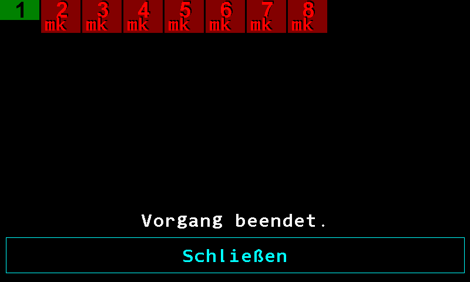
- Grüne Kachel. Fertig: Der Kornsensor hat ein Korn registriert, die Scheibe ist gefüllt.
- Dunkelrote Kachel. Fehlgeschlagen: Die Scheibe konnte nicht gefüllt werden. Die Motornummer ist hellrot.
- Buchstaben für den Grund. Warum die Kachel fehlgeschlagen ist — siehe die Tabelle unten. Hier m k.
- „Vorgang beendet.“ Alle Motoren sind fertig.
- „Schließen“. Kehrt zum Startbildschirm zurück. Solange der Vorgang läuft, steht auf dieser Taste „Abbrechen“.
| Kachel | Zustand |
|---|---|
| Dunkelgrau | Wartet, bis sie an der Reihe ist. Bis zu acht Motoren laufen gleichzeitig; die übrigen warten. |
| Gelb | Läuft: Die Scheibe dreht sich. |
| Grün | Fertig. |
| Dunkelrot | Fehlgeschlagen. |
Jeder Motor dreht seine Scheibe mit 4 U/min der angetriebenen Welle. Wird innerhalb von 1,25 Umdrehungen — etwa 19 Sekunden — kein Korn registriert, wird dieser Motor angehalten und als fehlgeschlagen markiert. Ein Motor, der sich bereits im Alarmzustand befindet, wird sofort als fehlgeschlagen markiert.
Buchstaben auf einer fehlgeschlagenen Kachel
Die Farbe des Buchstabens ist ebenso wichtig wie der Buchstabe: Rot bedeutet eine Störung, Weiß bedeutet aus der Überwachung genommen.

| Buchstabe | Bedeutung |
|---|---|
| m rot | Eine Störung des Elektromotors des Dosierers während des Vorgangs. |
| m weiß | Der Motor wurde aus der Überwachung genommen und kann nicht laufen. |
| k rot | Der Kornsensor hat kein Korn registriert, während sich die Scheibe drehte. |
| s rot | Eine Störung des Kornsensors während des Vorgangs. |
| s weiß | Der Kornsensor wurde aus der Überwachung genommen. |
Ist der Kornsensor aus der Überwachung genommen, kann das Panel die Scheibe nicht prüfen. Ein betriebsbereiter Motor dreht sie trotzdem etwa eineinviertel Umdrehungen, die Scheibe wird in der Praxis also gefüllt — aber das Panel meldet diesen Motor als fehlgeschlagen, weil es nie ein Korn gesehen hat.
Fahrgassenrhythmus einstellen
Was ein Fahrgassenrhythmus ist, für Ihre Drillmaschine und Ihre Spritze berechnet, und wie Sie ihn Schritt für Schritt am Panel einstellen.
Eine Fahrgasse ist die Spur, in der später die Spritze fährt. Sie legen sie jetzt bei der Aussaat an, indem Sie in bestimmten Durchgängen eine oder zwei Sektionen abschalten, damit dort, wo die Spritzenräder laufen, nichts gesät wird. Welche Durchgänge das sind, hängt von der Breite der Drillmaschine im Verhältnis zur Breite der Spritze ab. Dieses Muster, das sich über das Feld wiederholt, ist der Rhythmus.
Wie ein Rhythmus funktioniert — ein Beispiel
Eine Drillmaschine mit 6 Metern und eine Spritze mit 18 Metern: Jeder dritte Durchgang muss die Spur tragen. Der Rhythmus ist drei Durchgänge lang, und Aktuator 1 schaltet seine Sektionen in einem davon ab.
| Durchgang | Aktuator 1 | Was gesät wird |
|---|---|---|
| 1 | schaltet seine Sektionen ab | Alle Reihen außer den Fahrgassenreihen — die Spur wird angelegt. |
| 2 | offen | Alle Reihen. |
| 3 | offen | Alle Reihen. |
| wieder 1 | schaltet ab | Die nächste Spur, 18 m weiter. |
Das Panel zählt die Durchgänge und schaltet die Sektionen im richtigen ab. Nach dem letzten Durchgang beginnt es wieder bei Durchgang 1.
Was das Panel zulässt
| Gespeicherte Rhythmen | Drei. Einer ist jeweils aktiv. Bewahren Sie die Muster der Maschinen auf, mit denen Sie arbeiten, und schalten Sie zwischen ihnen um. |
| Aktuatoren in einem Rhythmus | Vier. |
| Abschaltende Durchgänge je Aktuator | Vier verschiedene Durchgänge desselben Rhythmus. |
| Durchgänge in einem Rhythmus | Mindestens einer. |
Einstellen
Die Punkte der Fahrgasse stehen unter „Sämaschinen-Parameter“, wofür die Ebene „Agronom“ erforderlich ist: Ebene „Agronom“ freischalten.
Drücken Sie auf dem Startbildschirm „MENU“, wählen Sie „Einstellungen“ und drücken Sie „MENU“.
Das Hauptmenü. Wählen Sie „Sämaschinen-Parameter“ und drücken Sie „MENU“.
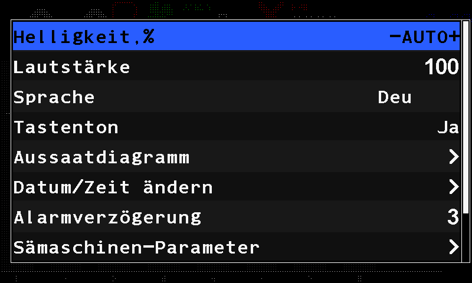
Das Menü Einstellungen; Sämaschinen-Parameter ganz unten. Wählen Sie „Fahrgasse“ und drücken Sie „MENU“.

Das Menü Sämaschinen-Parameter mit dem Punkt Fahrgasse. Stellen Sie „Fahrgasse“ mit „PLUS“ auf „Ja“. Wählen Sie dann „Fahrgassenrhythmus“ und drücken Sie „MENU“.

Das Menü Fahrgasse. Wählen Sie bei „Rhythmus“ mit „PLUS“ / „MINUS“ die Nummer des Rhythmus, drücken Sie „MENU“ und wählen Sie „Wählen“. Neben der Nummer erscheint das Wort „Aktiv“ — ohne es ist der Rhythmus gespeichert, wird aber nicht verwendet.
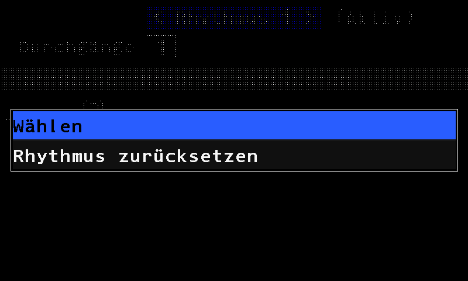
Das Menü des Rhythmus: Wählen, Rhythmus zurücksetzen. Gehen Sie nach unten zu „Durchgänge“ und stellen Sie die Zahl der Durchgänge im Rhythmus ein.
Gehen Sie zur umrahmten Zelle unter der Überschrift der Aktivierung und drücken Sie „MENU“. Wählen Sie die Nummer des Aktuators und dann den Durchgang, in dem er seine Sektionen abschalten soll.
Wenn das Muster es verlangt, fügen Sie demselben Aktuator weitere Durchgänge hinzu — bis zu vier — mit der umrahmten Zelle am Ende seiner Zeile, oder einen weiteren Aktuator mit der Zelle in der leeren Zeile darunter.
Drücken Sie „BACK“, bis der Startbildschirm wiederkehrt. Der Rhythmus ist gespeichert; die Fahrgassenanzeige zeigt oben den aktuellen Durchgang und unten die Zahl der Durchgänge.
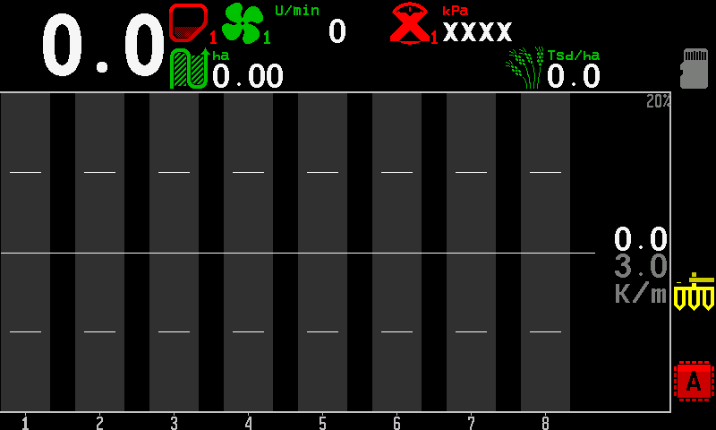
Der Startbildschirm mit der Fahrgassenanzeige, Durchgang 1 von 1.
Kehren Sie vor der Arbeit auf die Ebene „Fahrer“ zurück — darüber werden keine Alarme angezeigt.
Das Formular des Rhythmus
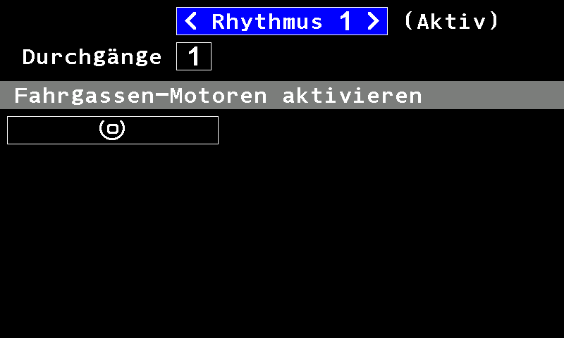
- Rhythmus. Die Nummer des Rhythmus; „PLUS“ und „MINUS“ schalten durch die drei.
- „Aktiv“. Dieser Rhythmus ist der verwendete.
- „Durchgänge“. Die Zahl der Durchgänge im Rhythmus.
- Überschrift der Aktivierung. „Fahrgassen-Aktuatoren aktivieren“ an einer Maschine, die Fahrgassen mit Aktuatoren anlegt; „Fahrgassen-Motoren aktivieren“ an einer, die Dosiermotoren anhält.
- Umrahmte Zelle. Fügt einen Aktuator (oder Motor) und seinen Abschalt-Durchgang hinzu.
Im Formular bewegen „UP“ und „DOWN“ zwischen den Zeilen, „MINUS“ und „PLUS“ entlang einer Zeile, „MENU“ öffnet die gewählte Zelle. Zum nächsten Durchgang wechseln während der Arbeit: Zum nächsten Fahrgassen-Durchgang wechseln.
Zum nächsten Fahrgassen-Durchgang wechseln
Wie der Durchgang am Vorgewende von selbst wechselt, was dafür nötig ist und wie Sie ihn von Hand wechseln oder korrigieren.
Die Fahrgassenanzeige auf dem Startbildschirm zeigt oben den aktuellen Durchgang und unten die Zahl der Durchgänge im Rhythmus. Der Durchgang kann bei jeder Wende von selbst wechseln, oder Sie wechseln ihn von Hand — beides im Menü des Durchgangs, das Sie mit einem kurzen Druck auf „BACK“ auf dem Startbildschirm öffnen.
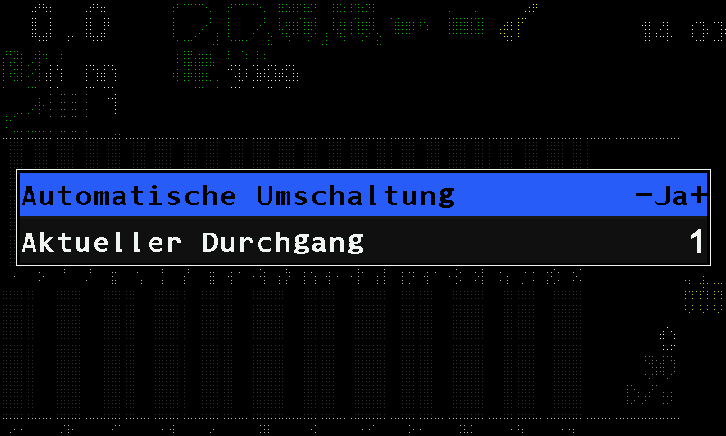
Automatischer Wechsel
Das Panel kann den Durchgang nur dann von selbst wechseln, wenn ihm etwas meldet, dass ein Durchgang zu Ende ist:
| An der Maschine | Was einen Durchgang beendet |
|---|---|
| Spuranzeigersensoren im Profil | Mindestens ein Spuranzeigersensor in der Überwachung und antwortend. Der Wechsel der Spuranzeigerstellung beendet den Durchgang. |
| Keine Spuranzeiger | Der Arbeitsstellungssensor, in der Überwachung und antwortend. Das Anheben des Geräts aus der Arbeit beendet den Durchgang. |
| Keines von beiden | Ein automatischer Wechsel ist unmöglich. Wechseln Sie den Durchgang von Hand. |
Außerdem muss „Automatische Umschaltung“ auf „Ja“ stehen, und die Maschine muss tatsächlich ausgebracht haben und dann zum Stillstand gekommen sein. Alles zusammen — sonst bleibt der Durchgang, wo er ist. Wenn der Durchgang nicht von selbst wechseln kann, ist das Fahrgassensymbol auf dem Startbildschirm gelb (Fahrgassen-Durchgang).
Drücken Sie auf dem Startbildschirm „BACK“. Das Menü des Durchgangs öffnet sich.
Wählen Sie bei „Automatische Umschaltung“ mit „PLUS“ „Ja“.
Drücken Sie „BACK“, um das Menü zu schließen.
Von Hand
Was das Menü des Durchgangs anbietet, hängt von der Maschine ab:
- Ohne einen Sensor, der einen Durchgang beenden kann, bietet es „Nächster Durchgang“ an. Wählen Sie ihn und drücken Sie „MENU“: Der Durchgang springt um eins weiter, und das Menü schließt sich. Tun Sie das bei jeder Wende.
- Mit einem solchen Sensor bietet es stattdessen „Automatische Umschaltung“ an. Um die Zählung zu korrigieren — etwa nach einer verpassten Wende —, stellen Sie „Aktueller Durchgang“ mit „PLUS“ / „MINUS“ ein; der neue Durchgang gilt, wenn Sie das Menü schließen.
„Aktueller Durchgang“ steht an jeder Maschine im Menü. Prüfen Sie die Anzeige auf dem Startbildschirm, bevor Sie einen Durchgang beginnen.
Der Rhythmus selbst wird unter Fahrgassenrhythmus einstellen eingerichtet.
Bildschirmhelligkeit einstellen
Den Bildschirm heller, dunkler oder automatisch einstellen — ein Punkt im Menü Einstellungen.
Drücken Sie auf dem Startbildschirm „MENU“, wählen Sie „Einstellungen“ und drücken Sie „MENU“.
„Helligkeit,%“ ist der erste Punkt. Ändern Sie ihn mit „PLUS“ und „MINUS“, von 0 bis 100 in Schritten von 10.
Das Menü Einstellungen mit gewählter „Helligkeit,%“, eingestellt auf AUTO. Drücken Sie „BACK“, um das Menü zu verlassen. Die neue Helligkeit bleibt eingestellt.
0 bedeutet automatisch — das Menü zeigt „AUTO“. Das Panel misst das Licht in der Kabine und stellt den Bildschirm selbst ein: hell in der Sonne, gedimmt in der Nacht. Jeder andere Wert hält den Bildschirm bei diesem Prozentwert fest.
Die Tastenhinterleuchtung folgt immer dem Bildschirm: Wird der Bildschirm gedimmt, werden die Tasten mit gedimmt.
Alles Übrige im Menü Einstellungen: Das Menü Einstellungen.
Arbeiten ohne Geschwindigkeitssensor
Wenn der Geschwindigkeitssensor auf dem Feld ausfällt — die Arbeit mit simulierter Geschwindigkeit zu Ende bringen und die Ausbringung von Hand steuern.
Symptom. Das Geschwindigkeitsfeld zeigt XX.X in Rot, oder die Geschwindigkeit bleibt null, obwohl sich die Maschine bewegt. Ohne Geschwindigkeit kann das Panel Fläche, Mengen und Abweichungen nicht berechnen, und die Dosiermotoren wissen nicht, wie schnell sie drehen sollen.
Ursache. Der Geschwindigkeitssensor oder sein Eingangsgerät antwortet nicht, oder das Rad liefert keine Impulse mehr. Siehe Alarme des Geschwindigkeitssensors.
Was zu tun ist. Bringen Sie das Feld mit einer simulierten Geschwindigkeit zu Ende und schalten Sie die Ausbringung von Hand ein und aus.
Berühren und halten Sie auf dem Startbildschirm das Geschwindigkeitsfeld. Sein Kontextmenü öffnet sich.
Stellen Sie „Simulation,km/h“ auf die Geschwindigkeit ein, mit der Sie fahren werden. Dieser Punkt erfordert die Ebene „Agronom“: Ebene „Agronom“ freischalten.
Kehren Sie auf die Ebene „Fahrer“ zurück, damit wieder Alarme angezeigt werden.
Das Geschwindigkeitsfeld zeigt jetzt eine gelbe Zahl im Wechsel mit „SIMULIERT“ (Geschwindigkeit).
Steuern Sie die Ausbringung mit der Handsperre: Halten Sie „HOME“ gedrückt, um am Vorgewende die Ausbringung zu beenden, und halten Sie sie erneut gedrückt, um beim nächsten Durchgang zu beginnen. Solange die Sperre eingeschaltet ist, erscheint die gelbe Hand am rechten Rand, und die Geschwindigkeit zeigt null. Siehe Ausbringung von Hand sperren.
Fahren Sie mit der eingestellten Geschwindigkeit. Die Mengen stimmen nur, solange die wirkliche Geschwindigkeit mit ihr übereinstimmt.
Ist der Sensor repariert, stellen Sie „Simulation,km/h“ wieder auf 0.
Einzelheiten zu den Einstellungen des Geschwindigkeitssensors: Geschwindigkeitssensor.
Zugriffsebenen
Die drei Zugriffsebenen des Hectare One, was jede erlaubt und wie Sie zwischen ihnen wechseln.
Nicht jede Einstellung steht jedem offen. Das Panel kennt drei Arbeitsebenen. Nach jedem Einschalten startet es auf der niedrigsten, „Fahrer“.
| Ebene | Was sie erlaubt |
|---|---|
| „Fahrer“ | Alltägliche Arbeit. Einige Parameter lassen sich nicht ändern, und die Statistik kann nicht zurückgesetzt werden. |
| „Agronom“ | Zurücksetzen der Statistik, die Sämaschinen-Parameter, der Fehler der Produktmenge und die übrigen Einstellungen der Inbetriebnahme. Erfordert eine PIN. |
| „Service“ | Das Profil und die Punkte zum Zurücksetzen auf Standardwerte. Für den Kundendienst. Erfordert eine PIN. |
Oberhalb von „Service“ gibt es eine vierte Ebene, „Debug“. Sie wird nur bei der Herstellung benutzt; siehe Das Service-Menü.
Jede Einstelltabelle in dieser Anleitung nennt die Ebene, die ein Punkt erfordert. Ein Punkt oberhalb Ihrer Ebene wird im Menü überhaupt nicht angezeigt.
Ebene wechseln
Die Ebene wird im Menü „Einstellungen“ beim Punkt „Benutzer“ gewechselt und nirgends sonst – es gibt dafür keine Tastenkombination. Beim Wechsel nach oben wird die PIN abgefragt, beim Wechsel nach unten nicht. Schritt für Schritt, mit den Bildschirmen: Agronomen-Ebene aktivieren.
Die PIN ist für jedes Panel eine andere. Sie steht im Gerätepass, oder Sie erfragen sie beim Service-Support.
Was mit den Alarmen geschieht, solange die Ebene hoch ist
Die Alarme gehen nicht verloren, solange sie verborgen sind – sie warten. Wenn Sie die Ebene senken, verwirft das Panel die Alarme, die inzwischen verschwunden sind, und zeigt diejenigen, die weiterhin zutreffen, nacheinander als Fenster. Nach einer Stunde Inbetriebnahme auf „Agronom“ erwartet Sie beim Zurückschalten daher eine kurze Folge von Alarmfenstern. Das ist der angestaute Rückstand, keine neue Störung. Wie die Fenster funktionieren: So arbeiten die Alarme.
Agronomen-Ebene aktivieren
Die Schritte, jeweils mit dem zugehörigen Bildschirm, um die Zugriffsebene vor dem Ändern von Einstellungen auf „Agronom“ oder „Service“ anzuheben und danach auf „Fahrer“ zurückzukehren.
Die meisten Einrichtungsarbeiten – Sensorparameter, Kalibrierungen, Gerätekonfiguration – erfordern die Ebene „Agronom“. Die Ebene „Service“ wird auf dieselbe Weise angehoben. Was jede Ebene erlaubt: Zugriffsebenen.
Sie brauchen die PIN dieses Panels. Sie ist für jedes Panel eine andere; Sie steht im Gerätepass, oder Sie erfragen sie beim Service-Support.
Drücken Sie auf dem Startbildschirm „MENU“. Das Hauptmenü öffnet sich.
Das Hauptmenü. Wählen Sie mit „UP“ / „DOWN“ den Punkt „Einstellungen“ und drücken Sie „MENU“. Das Menü „Einstellungen“ öffnet sich.
Das Menü Einstellungen auf der Ebene Fahrer. Drücken Sie „DOWN“, bis „Benutzer“ markiert ist – er steht nahe am Ende des Menüs. Drücken Sie „PLUS“, bis dort „Agronom“ (oder „Service“) steht.
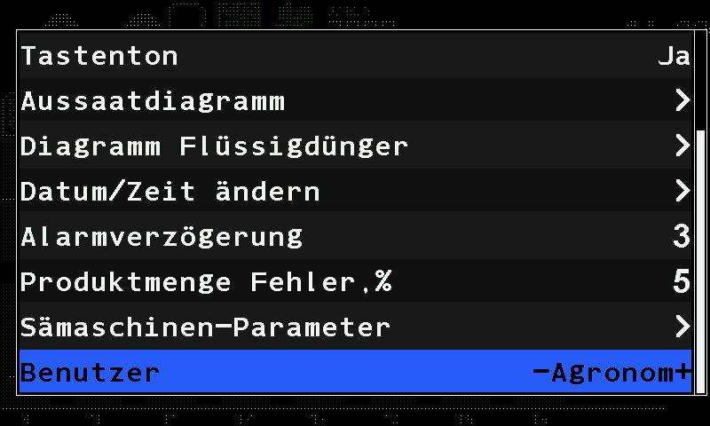
„Benutzer“ auf Agronom eingestellt. Drücken Sie „MENU“. Das PIN-Feld öffnet sich. Seine Überschrift nennt die gewählte Ebene – „Agronom“ – und dahinter den Code dieses Panels; halten Sie diesen Code bereit, wenn Sie die PIN beim Service-Support erfragen. Geben Sie die PIN ein und berühren Sie „OK“.
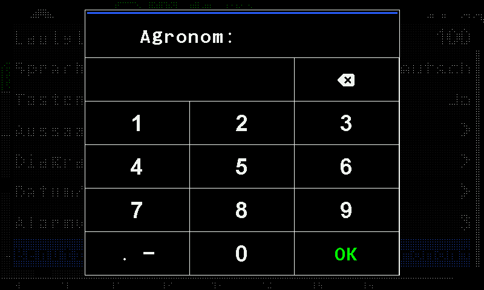
Das PIN-Feld. Der Code neben der Aufforderung ist in dieser Anleitung verdeckt. Das Menü „Einstellungen“ erscheint wieder, nun mit den Punkten der neuen Ebene – zum Beispiel „Sämaschinen-Parameter“. Drücken Sie „BACK“, um es zu verlassen.
Wenn Sie wieder herunterschalten, werden die Alarme, die weiterhin zutreffen, nacheinander angezeigt. Siehe Zugriffsebenen.
Das Profil
Was das Profil dem Panel mitteilt, wie Sie es prüfen, was die einzelnen Profilpunkte erlauben und wann das Panel ein Profil ablehnt.
Das Profil teilt dem Panel mit, welche Geräte und wie viele davon an der Maschine sind. Ein Panel wird meist mit bereits eingestelltem Profil geliefert. Prüfen Sie es, bevor Sie irgendetwas anderes einstellen: Ein Gerät, das im Profil fehlt, wird nie überwacht, und ein Gerät im Profil, das nicht verbaut ist, löst „Verbindung weg“ aus.
Profil auf dem Startbildschirm prüfen
Schalten Sie das Panel ein und warten Sie einige Sekunden. Sehen Sie dann auf den Startbildschirm:
- Kein Alarm „Verbindung weg“ – das Panel hat jedes Gerät gefunden, das das Profil angibt.
- Keine weißen Anzeigen mit Ausrufezeichen – kein Gerät ist aus der Überwachung genommen.
- Keine roten Anzeigen mit „X“ – jedes Gerät antwortet.
Was die Anzeigen bedeuten: Anzeigen des Startbildschirms. Wie Sie ein Gerät in die Überwachung nehmen oder daraus herausnehmen: Sensor in die Überwachung nehmen oder herausnehmen.
Profil öffnen
Das Profil liegt auf der Ebene „Service“: Heben Sie die Ebene an (Agronomen-Ebene aktivieren – wählen Sie „Service“), dann „MENU“ → „Service“ → „Profil“.

- „Kornsensoren“ – die Anzahl der Kornsensoren. Der markierte Punkt zeigt seinen Wert zwischen – und +: Ändern Sie ihn mit „MINUS“ / „PLUS“.
- „Düngersensoren“ – Sensoren für Trockendünger.
- „Flüssigdünger-Durchflusssensoren“ – Sensoren der Flüssigdüngersektionen.
- „Behälter“ – Füllstandssensoren der Behälter.
- „Dosierer“ – Sensoren der Dosierwellen.
- „Geschwindigkeit“ – woher die Fahrgeschwindigkeit kommt.
- „Gebläse“ – Drehzahlsensoren der Gebläse.
- „Drucksensoren“ – Luftdrucksensoren.
- Bildlaufleiste. Weitere Punkte folgen weiter unten – siehe Tabelle.
Die Profilpunkte
| Punkt | Bereich |
|---|---|
| „Kornsensoren“ | 2 … 120. Das Menü lässt die Eingabe 1 zu, ein solches Profil wird beim Speichern jedoch abgelehnt. |
| „Düngersensoren“ | 0 … 60; Korn- und Düngersensoren zusammen höchstens 120. |
| „Flüssigdünger-Durchflusssensoren“ | 0 … 60 |
| „Behälter“ | 0 … 9 |
| „Dosierer“ | 0 … 9 |
| „Geschwindigkeit“ | „Nein“ / „Bedienpanel“ (Sensor am Panel angeschlossen) / „Eingangsmodul“ (ein Radsensor am Eingangsmodul) / „Eingangsmodul(2)“ (zwei Radsensoren am Eingangsmodul). |
| „Gebläse“ | 0 … 2 |
| „Drucksensoren“ | 0 … 3 |
| „Arbeitsstellungssensor“ | „Nein“ / „Ja“ |
| „Spuranzeiger“ | „Nein“ / „Einer“ / „Beide“ |
| „Batterie lädt nicht“, „Öldruck-Störung“, „Zündung“, „Wenig Kraftstoff“, „Luftfilter“ | Die Motorsensoren – je „Nein“ / „Ja“. |
| „E-Motoren Saat“ | 0 … 60 |
| „E-Motoren Dünger“ | 0 … 30; beide Motorgruppen zusammen höchstens 60. |
| „Fahrgassen-Aktuatoren“ | 0 … 4 |
| „Flüssigdünger-Pumpencontroller“ | 0 … 1 |
Bei einem Panel für ein System ohne Elektromotoren fehlen die beiden Motorpunkte im Menü.
Wann das Panel ein Profil ablehnt
Das Panel prüft das ganze Profil, nicht nur den Punkt, den Sie geändert haben. Es lehnt ein Profil ab, wenn:
- Behälter-, Dosierer- und Motorsensoren zusammen mehr als 12 ergeben;
- sie zusammen mehr als 10 ergeben, während Druck- und Gebläsesensoren zusammen mehr als vier ergeben;
- Druck- und Gebläsesensoren zusammen mehr als fünf ergeben;
- es Düngermotoren, aber keine Saatmotoren gibt oder Düngermotoren, aber keine Düngersensoren;
- es Elektromotoren oder eine Flüssigdüngerpumpe ohne Geschwindigkeitssensor gibt;
- Flüssigdünger-Ventile und ein Pumpencontroller gleichzeitig angegeben sind.
Profil speichern
Wählen Sie nach der Änderung des Profils am Ende des Menüs „Profil“ den Punkt „Profil speichern“ und drücken Sie „MENU“. Das Panel fragt „Sind Sie sicher?“.

Das Bestätigungsfenster. Berühren Sie „Ja“. Das Panel zeigt „Bitte warten...“, dann „Gespeichert“ und „Neu starten“, und startet selbständig neu.
Wurde nichts geändert, zeigt das Panel nur „Keine Änderungen“. Verstößt das Profil gegen eine der obigen Regeln, zeigt es „Ungültiges Profil!“ in Rot und speichert nichts.
Alle Einstellungen eines Profils speichern und auf einer Speicherkarte mitnehmen: Einstellungen speichern und laden.
Einstellungen speichern und laden
Eine Kopie aller Einstellungen des aktuellen Profils im Panel oder auf einer Speicherkarte aufbewahren und wieder einspielen – zum Beispiel, um ein Panel zwischen Geräten umzusetzen.
Für das aktuelle Profil kann das Panel alle Einstellungen speichern und später wiederherstellen – nützlich, bevor Sie etwas ausprobieren. Steckt eine Speicherkarte im Schacht, lässt sich ein Profil samt Einstellungen auch auf der Karte ablegen, sodass ein Panel mehrere Geräte bedienen kann.
| Punkt im Menü „Profil“ | Was er bewirkt |
|---|---|
| „Einstellungen speichern“ / „Einstellungen laden“ | Eine Kopie der Einstellungen im Panel ablegen und wieder einspielen. |
| „Auf SD-Karte sichern“ / „Von SD-Karte laden“ | Dasselbe mit der Speicherkarte; das Profil wandert mit seinen Einstellungen. Ohne Karte endet das Speichern mit „SD-Karte einlegen“. |
Auf der Ebene „Service“ enthält das Menü außerdem „Werkseinstellungen sichern“: Nach „Sind Sie sicher?“ speichert es die Einstellungen wie „Einstellungen speichern“ und legt sie zusätzlich mit dem Profil als Werkskopie des Panels ab, die kein Menüpunkt dieser Firmware wieder einspielt.
Heben Sie die Ebene an (Agronomen-Ebene aktivieren – wählen Sie „Service“) und öffnen Sie „MENU“ → „Service“ → „Profil“ (Das Profil).
Blättern Sie zum gewünschten Punkt und drücken Sie „MENU“. „Einstellungen speichern“ und „Einstellungen laden“ fragen „Sind Sie sicher?“.
Das Bestätigungsfenster. Berühren Sie „Ja“. Das Panel antwortet „Gespeichert“ oder „Geladen“.
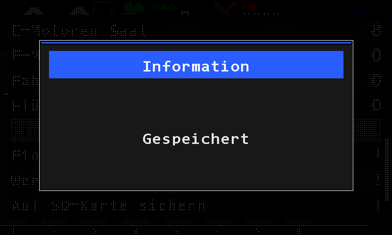
Das Panel bestätigt mit „Gespeichert“.
Profildateien auf der Speicherkarte
- Die Dateien heißen automatisch P0001.pfl und liegen im Ordner PROFILES der Karte. Sie dürfen eine Datei umbenennen – halten Sie den Namen auf acht Zeichen, lateinische Buchstaben und Ziffern.
- „Von SD-Karte laden“ öffnet eine Liste der Profile auf der Karte. Eine von einer Firmware-Version geschriebene Profildatei ist von einer anderen Version sehr wahrscheinlich nicht lesbar: Ein unverträgliches Profil wird in dieser Liste rot angezeigt.
Sämaschinen-Parameter
Die Arbeitsbreite, die Modi für Aussaat und Düngung, die Fahrgasse, die Zuordnung von Sektionen zu Aktuatoren und die beiden Kalibrierungen, bei denen die Maschine fahren muss.
„Einstellungen“ → „Sämaschinen-Parameter“. Der Punkt erfordert die Ebene „Agronom“ (Agronomen-Ebene aktivieren) und ist bei einer Maschine ohne Geschwindigkeitssensor und ohne Fahrgassen-Aktuator verborgen. Welche Punkte er enthält, hängt vom Profil ab.
- „Breite, cm“ – die Arbeitsbreite. Der markierte Wert steht zwischen –[** und **]+.
- „Aussaatmodus“ – „Durchfluss“, „Hybrid“ oder „Einzelkorn“.
- „Fahrgasse“ – das Untermenü der Fahrgasse.
- „Geschwindigkeitskalibrierung“ – startet die Geschwindigkeitskalibrierung.
- „Standardwerte“ – Werkseinstellungen für dieses Menü. Nur Ebene Service.
Breite, cm
Die Arbeitsbreite des Geräts. Daraus wird die bearbeitete Fläche berechnet, daher muss sie eingegeben werden. Drücken Sie beim Punkt „MENU“: Das Zahlenfeld öffnet sich. Geben Sie die Ziffern ein – die Taste oben rechts löscht die letzte – und berühren Sie „OK“ zum Übernehmen, oder drücken Sie „BACK“, um den alten Wert beizubehalten.
Modus Aussaat, Modus Dünger
Je drei Modi:
| Modus | Einheit | Für |
|---|---|---|
| „Durchfluss“ | Körner pro Sekunde | Drillmaschinen |
| „Hybrid“ | Körner pro Meter | Drillmaschinen – empfohlen |
| „Einzelkorn“ | Körner pro Meter, mit gezählten Fehlstellen und Doppeln | Einzelkornsämaschinen |
Modus Flüssigdünger
„Durchfluss“ (Liter pro Minute) oder „Nach Fläche“ (Liter pro Hektar). Wird nur angezeigt, wenn im Profil kein Pumpencontroller für Flüssigdünger steht – mit Controller wählt das Panel den Modus selbst.
Zuordnung Aktuator-Sensor
Welche Sektionssensoren zu welchem Fahrgassen-Aktuator oder Elektromotor gehören. Schaltet dieser Aktuator seine Sektionen ab, wechseln deren Sensoren in die Fahrgassenüberwachung.
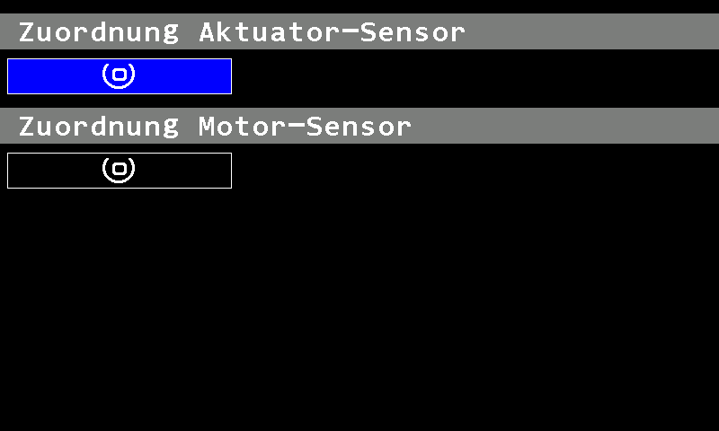
Eine Zuordnung ist ein Bereich: „Bereichsanfang“ und „Bereichsende“ – gleiche Zahlen bedeuten eine einzelne Sektion. Einem Aktuator lassen sich bis zu vier Bereiche zuweisen. Bei einer Maschine mit Dosiermotoren hat der Bildschirm zusätzlich „Zuordnung Motor-Sensor“.
Fahrgasse
Die Rhythmen der Fahrgasse, in einem eigenen Untermenü mit zwei Punkten: „Fahrgasse“ („Nein“ / „Ja“) und „Fahrgassenrhythmus“.
Einen Rhythmus einrichten: Fahrgassenrhythmus einstellen.
Geschwindigkeitskalibrierung und Dosierer-Kalibrierung
Die beiden Kalibrierungen, bei denen die Maschine fahren muss. Neben „Dosierer-Kalibrierung“ steht eine Zahl: der zu kalibrierende Dosierer, oder 0 für alle auf einmal.
Sensoreinstellungen
Wie Sie die Einstellungen eines einzelnen Sensors erreichen, was sein Kontextmenü enthält und welche Kalibrierungen es gibt.
Jeder Sensor, Aktuator und Motor an der Maschine hat eigene Einstellungen und einen eigenen Statusbildschirm. Beide erreichen Sie vom Startbildschirm aus. Die Parameter der einzelnen Sensorarten stehen in den Themen nach diesem.
Einen Sensor erreichen
Halten Sie auf dem Startbildschirm „MENU“ einige Sekunden gedrückt. Das Panel wechselt in den Einstellmodus für Sensoren; der markierte Sensor wird in einem weißen Rechteck gezeichnet.
Wechseln Sie mit „UP“ / „DOWN“ von Sensor zu Sensor. „PLUS“ nimmt den markierten Sensor in die Überwachung, „MINUS“ nimmt ihn heraus – siehe Sensor in die Überwachung nehmen oder herausnehmen.
Drücken Sie „MENU“. Das Kontextmenü des markierten Sensors öffnet sich.
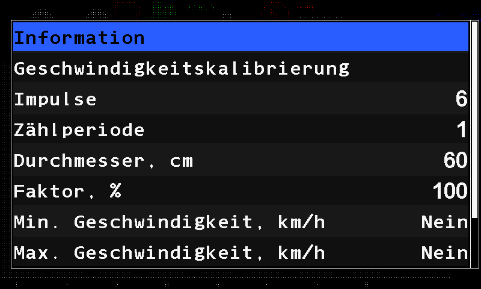
Das Kontextmenü des Geschwindigkeitssensors. Drücken Sie „BACK“, um den Modus zu verlassen.
Wenn Sie eine Sensorkachel auf dem Bildschirm gedrückt halten, öffnet sich direkt dasselbe Kontextmenü.
Das Kontextmenü
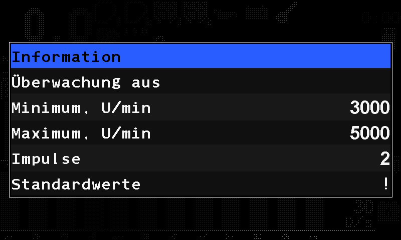
- „Information“ – öffnet den Statusbildschirm dieses Sensors. Der Sensor-Statusbildschirm.
- „Überwachung aus“ / „Überwachung ein“ – nimmt den Sensor aus der Überwachung oder wieder hinein. Beim ersten Mal in einer Sitzung fragt das Panel nach einer Bestätigung.
- Die Parameter dieses Sensors – hier die drei eines Gebläsesensors. Welche davon Sie sehen, hängt von der Zugriffsebene ab.
- Der aktuelle Wert. Markieren Sie die Zeile; der Wert steht zwischen – und + und ändert sich mit „MINUS“ / „PLUS“.
- „Standardwerte“ – setzt die Parameter dieses Sensors auf die Werkseinstellungen zurück. Nur Ebene Service.
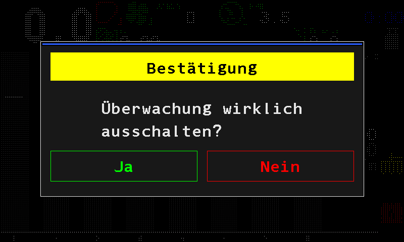
Der Statusbildschirm
„Information“ öffnet den Statusbildschirm des Sensors: seine Kennung, seine Verbindung, seine aktuellen Messwerte und seine aktiven Alarme. Wie Sie ihn lesen: Der Sensor-Statusbildschirm.
Kalibrierungen
Es gibt vier Kalibrierungen. Sie sind keine Varianten eines Verfahrens: Jede schreibt andere Parameter und wird auf anderem Weg erreicht.
| Was sie richtigstellt | Wo | Ebene | Maschine |
|---|---|---|---|
| Fahrgeschwindigkeit – die Impulse des Geschwindigkeitssensors auf einer bekannten Strecke. Geschwindigkeitssensor kalibrieren | „Einstellungen“ → „Sämaschinen-Parameter“ → „Geschwindigkeitskalibrierung“ | Agronom | fährt 100 m |
| Dosierer-Drehung – „Rad, Impulse“ gegen „Dosierer Impulse“. Dosierer-Drehung kalibrieren | „Einstellungen“ → „Sämaschinen-Parameter“ → „Dosierer-Kalibrierung“ | Agronom | Rad und Dosierwelle werden gemeinsam gedreht |
| Dosierer-Masse – „Masse, g“ und „Masse, Impulse“. Dosierer nach Masse kalibrieren | Kontextmenü des Dosierwellensensors | Fahrer | steht |
| Masse der Dosierwalze – „Masse, g“ und „Umdrehungen“ eines Motors. Dosierer-Elektromotor nach Masse kalibrieren | Kontextmenü des Dosierer-Elektromotors | Fahrer | steht |
Die beiden Menü-Kalibrierungen erfordern die Ebene „Agronom“, wie das Menü, das zu ihnen führt. Die beiden Massenkalibrierungen liegen auf der Ebene „Fahrer“, weil sie bei jedem Produktwechsel wiederholt werden müssen.
Der Sensor-Statusbildschirm
So lesen Sie den Statusbildschirm eines Sensors – Kanal, Adresse, Typ, Verbindungszustand, aktuelle Messwerte und aktive Alarme – und was jede Sensorart dort zeigt.
Sie erreichen ihn über „Information“ im Kontextmenü eines Sensors (Sensoreinstellungen). Er zeigt, was das Panel über einen Sensor weiß.
Der Bildschirm

- „Kanal #“ – der wievielte Sensor der ganzen Liste dies ist.
- Vorheriger Sensor – oder drücken Sie „MINUS“. Der Bildschirm bleibt offen.
- Nächster Sensor – oder drücken Sie „PLUS“.
- „Adresse:“ – die Adresse, auf der der Sensor antwortet. In dieser Anleitung nicht gezeigt.
- „Typ:“ – die Art des Sensors und seine Nummer, hier Behältersensor 1. Manche Sensoren zeigen statt der Adresse eine Zeile „Gerät:“ – wo sie angeschlossen sind, zum Beispiel „Bedienpanel“.
- „Verbindung:“ – der Zustand der Kommunikation. Tabelle unten.
- Die Messwerte dieser Sensorart – hier der Pegel am Eingang eines Behältersensors. Tabelle unten.
- „Alarm 1 von 1“ – die aktiven Alarme, jeweils einer. „UP“ / „DOWN“ blättern durch sie.
- Der Name des Alarms, der gezeigt wird.
| Taste | Wirkung |
|---|---|
| „PLUS“ / „MINUS“ | Nächster / vorheriger Sensor – der Bildschirm bleibt offen. |
| „UP“ / „DOWN“ | Blättert durch die aktiven Alarme dieses Sensors. |
| „MENU“ | Das Kontextmenü dieses Sensors. |
| „BACK“ | Zurück zur Sensorauswahl. |
Verbindungszustände
| Zustand | Bedeutung |
|---|---|
| „Normal“ | Der Sensor antwortet. |
| „Nicht überwacht“ | Der Sensor ist aus der Überwachung genommen: Weder die Kommunikation noch sonst etwas wird beobachtet. |
| „Keine Verbindung“ | Der Sensor antwortet nicht. Rot. |
| „Falscher Gerätetyp!“ | Etwas antwortet, aber nicht die Geräteart, die das Profil erwartet. Rot. |
| „SIMULIERT“ | Nur beim Geschwindigkeitssensor: Die Geschwindigkeit wird simuliert, nicht gemessen. Gelb. |
Die Messwerte werden nur gezeichnet, solange der Sensor unter Überwachung steht, antwortet und von der erwarteten Art ist. Ein Sensor außerhalb der Überwachung zeigt seine Kennung und sonst nichts.
Was jede Sensorart zusätzlich zeigt
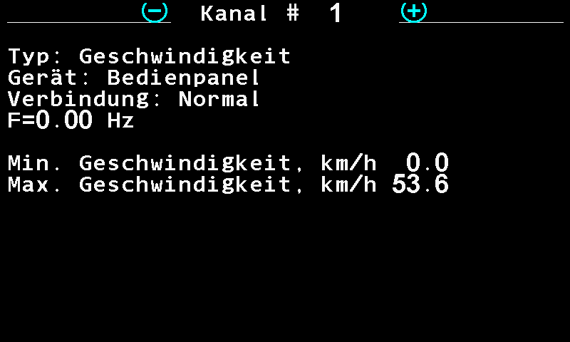
| Sensor | Was der Bildschirm zeigt |
|---|---|
| Geschwindigkeitssensor | Die Impulsfrequenz F= in Hz; bei zwei Geschwindigkeitssensoren F1= und F2=. Darunter die beiden Grenzen „Min. Geschwindigkeit, km/h“ und „Max. Geschwindigkeit, km/h“. Bei einer Maschine, die ein Produkt mit Elektromotoren nach Masse dosiert, sind die Grenzen diejenigen, die die Motoren halten können, eingeengt durch die beiden Einstellungen; eine Grenze, die die Einstellungen nicht erreichen können, steht rot als Ungleichung. Ohne solche Motoren wird eine auf null gesetzte Grenze als ---- angezeigt, also abgeschaltet. |
| Behältersensor | Pin: und der Pegel am Eingang, „0“ oder „1“. |
| Dosierwellensensor | F= in Hz, auf drei Nachkommastellen. |
| Gebläsesensor | F= in Hz. |
| Drucksensor | P= in kPa. |
| Kornsensor, Trockendüngersensor | Status: und einer von acht Zuständen – unten. |
| Flüssigdünger-Durchflusssensor | Status: Betrieb, oder Betrieb:Fahrgasse im Fahrgassenmodus; darunter Durchfluss= in L/min. |
| Arbeitsstellungssensor | Position: Arbeit oder Position: Transport, sowie Pin: mit dem Pegel am Eingang. |
| Zündung, Öldruck, Batterieladung, Kraftstoffstand, Luftfilter | Pin: und der Pegel am Eingang, „0“ oder „1“. |
| Spuranzeigersensor | Nur die gemeinsamen Zeilen. |
| Fahrgassen-Aktuator | Status: Eingezogen, Ausgefahren, Betrieb, solange sich die Klappe bewegt, oder Unbekannt. |
| Dosierer-Elektromotor | Status: Betrieb, oder Defekt, solange ein Alarm des Motors aktiv ist; dann Letzter Fehler: mit dem Code des Controllers, falls es einen gab (Codes). Ein Universal-Controller fügt IN1[ ] IN2[ ] IN3[ ] mit den Pegeln seiner drei Eingänge hinzu. |
| Flüssigdünger-Pumpencontroller | Status: Betrieb oder Defekt. Bei einer Störung Letzter Fehler: und der Code. Ohne Störung: Durchfluss= in L/min, Last= in Prozent und Drucksensor: Nein, wenn keiner vorhanden ist, sonst Drucksensor= in Bar mit dem Rohsignal in mA in Klammern. Striche stehen für einen Wert, den der Controller nicht liefern kann. |
Die acht Zustände eines Korn- oder Düngersensors
| Status | Bedeutung |
|---|---|
| Betrieb | Normal. |
| Betrieb:Fahrgasse | Normal; der Sensor ist für den aktuellen Durchgang im Modus Fahrgassenüberwachung. |
| Konfiguration | Der Sensor hat neue Einstellungen erhalten und wendet sie an. |
| Kalibrierung läuft | Der Sensor führt seine Erstkalibrierung aus. Das dauert einige Sekunden. |
| Verstopft | Der Infrarot-Sender des optischen Kanals ist blockiert – höchstwahrscheinlich durch ein verstopftes Saatrohr. Rot. |
| Fremdlicht | Zu viel Sonnenlicht fällt in den optischen Kanal; der Sensor kann sich verzählen. Rot. |
| Defekt | Der Sensor ist ausgefallen und muss ersetzt werden. Rot. |
| Unbekannt | Eine andere Störung, die sich nicht bestimmen lässt. Rot. |
Fahrgeschwindigkeitssensor
Die Parameter des Fahrgeschwindigkeitssensors – Impulse, Raddurchmesser, Geschwindigkeitsgrenzen, Simulation – und was die Einstellung der Simulation von selbst bewirkt.
Alles, was das Panel zählt – Fläche, Mengen, Abweichungen – wird aus der zurückgelegten Strecke berechnet. Ein Geschwindigkeitssensor, der um ein Zehntel danebenliegt, macht jede andere Zahl auf dem Panel um ein Zehntel falsch. Stellen Sie zuerst seine Parameter ein und kalibrieren Sie ihn dann (Geschwindigkeitssensor kalibrieren).
Öffnen Sie das Kontextmenü des Geschwindigkeitssensors wie in Sensoreinstellungen beschrieben. Alle seine Parameter erfordern die Ebene „Agronom“ (Agronomen-Ebene aktivieren).
Das Kontextmenü bietet direkt unter „Information“ auch „Geschwindigkeitskalibrierung“ an.
| Parameter | Was er bewirkt | Bereich |
|---|---|---|
| „Impulse“ | Die Impulszahl des Sensors. Stellen Sie sie vor der Kalibrierung ein, die sie korrigiert. | 1 … 1000 |
| „Zählperiode“ | Über wie viele Impulse des Sensors das Panel die Fahrgeschwindigkeit mittelt; ein höherer Wert ergibt eine ruhigere Anzeige. Wirkt nur bei einem Geschwindigkeitssensor, der direkt am Panel angeschlossen ist. | 1 … 1000 |
| „Durchmesser, cm“ | Der Raddurchmesser. Stellen Sie ihn vor der Kalibrierung ein. | 10 … 200 |
| „Faktor, %“ | Das Übersetzungsverhältnis zum Rad; 100 ist ein direkter 1 : 1-Antrieb. | 1 … 10000 |
| „Aussaatkriterium“ | „Ja“: Die Alarme der Korn-, Trockendünger- und Flüssigdüngersektionen werden nur ausgelöst, während die Maschine fährt. „Nein“: auch im Stand. Im Modus „Einzelkorn“ und an Maschinen mit Dosiermotoren oder einem Pumpencontroller für Flüssigdünger ausgeblendet und immer „Ja“. | „Nein“ / „Ja“ |
| „Min. Geschwindigkeit, km/h“ | Unterhalb dieser Geschwindigkeit zeigt der Startbildschirm „SCHNELLER“. 0 schaltet die Prüfung aus. | 0 … 99 |
| „Max. Geschwindigkeit, km/h“ | Oberhalb dieser Geschwindigkeit zeigt der Startbildschirm „LANGSAMER“. 0 schaltet die Prüfung aus. | 0 … 99 |
| „Simulation,km/h“ | Eine simulierte Geschwindigkeit. 0 = der echte Sensor wird verwendet. | 0 … 20 |
| „Breite, cm“ | Die Spurweite zwischen den beiden Rädern bei einer Installation mit zwei Sensoren. | 0 … 10000 |
| „GPS“, „GPS internal“ | Die Geschwindigkeit von einem Empfänger statt vom Rad beziehen. | „Nein“ / „Ja“ |
Das Minimum muss unter dem Maximum liegen, sonst löst das Panel „Fehler in Min/Max-Einstellungen“ aus (Alarme des Geschwindigkeitssensors).
Die simulierte Geschwindigkeit wird außerdem innerhalb des Bereichs gehalten, den die Dosierung zulässt: Ein Wert außerhalb wird bei der Eingabe auf die nächste Grenze zurückgesetzt. Solange die Geschwindigkeit simuliert wird, zeigt der Statusbildschirm des Sensors „SIMULIERT“ in Gelb. Arbeiten ohne Geschwindigkeitssensor: Arbeiten ohne Geschwindigkeitssensor.
Der Statusbildschirm
Der Statusbildschirm zeigt die Impulsfrequenz F= in Hz (bei zwei Sensoren F1= und F2=) und die beiden geltenden Grenzen. Siehe Der Sensor-Statusbildschirm.
Geschwindigkeitssensor kalibrieren
Fahren Sie 100 m Messstrecke ab, damit das Panel die Impulszahl des Fahrgeschwindigkeitssensors korrigiert.
Die Kalibrierung korrigiert die Impulszahl des Geschwindigkeitssensors anhand einer bekannten Strecke. Stellen Sie vor dem Start „Impulse“ und „Durchmesser, cm“ des Sensors ein (Fahrgeschwindigkeitssensor) – die Kalibrierung korrigiert die Impulszahl, sie kann sie nicht erfinden. Sie benötigen die Ebene „Agronom“ (Agronomen-Ebene aktivieren).
Stecken Sie auf ebenem Boden 100 m ab und stellen Sie die Maschine an den Start.
Öffnen Sie „Einstellungen“ → „Sämaschinen-Parameter“, wählen Sie „Geschwindigkeitskalibrierung“ und drücken Sie „MENU“. Das Panel zeigt „100m fahren und STOP drücken“ mit einer einzelnen Taste „STOP“.

Das Fenster der Geschwindigkeitskalibrierung. Fahren Sie die abgesteckte Strecke und halten Sie am Ende an.
Berühren Sie „STOP“. Das Panel zeigt „Fertig“ und schließt das Fenster von selbst.
Das Panel bestätigt mit „Fertig“.
Die Strecke ist fest auf 100 m eingestellt; das Panel fragt sie nicht ab. Nach „STOP“ wartet es eine halbe Sekunde, bevor es den Zähler ausliest, und prüft in diesem Moment die Verbindung noch einmal – ein Sensor, der auf dem letzten Meter aussetzt, wird als Verbindungsverlust gemeldet, nicht als schlechtes Ergebnis.
Wenn es nicht funktioniert
| Das Panel zeigt | Bedeutung |
|---|---|
| „Kein Geschwindigkeitssensor“ | Im Profil steht kein Geschwindigkeitssensor. Die Kalibrierung startet nicht. |
| „Keine Verbindung zum Sensor! Kalibrierung abgebrochen!“ | Der Sensor antwortet nicht. |
| „Sensor nicht überwacht! Kalibrierung abgebrochen!“ | Der Sensor ist aus der Überwachung genommen. Nehmen Sie ihn in die Überwachung (Sensor in die Überwachung nehmen oder herausnehmen). |
| „FEHLER! Traktor hat sich nicht bewegt!“ | Der Zähler hat sich nicht bewegt: Der Sensor hat überhaupt keine Impulse geliefert – kein ungenauer Wert, sondern gar keiner. Prüfen Sie den Sensor und sein Kabel. |
| „Kalibrierung abgebrochen!“ | Das Fenster wurde auf anderem Weg als mit „STOP“ geschlossen. Nichts hat sich geändert. |
Kornsensoren und Trockendüngersensoren
Die Parameter, die eine Gruppe optischer Korn- oder Trockendüngersensoren gemeinsam hat – Sollmengen, Fraktion, Empfindlichkeit, Mengenfehler, Fehlstellen und Doppel, Fahrgassentoleranz.
Kornsensoren und Trockendüngersensoren sind dieselbe Geräteart und teilen sich einen Parametersatz. Fast alles hier gilt für die ganze Gruppe: Ändern Sie es an einem Sensor, ändert es sich für alle Sensoren der Gruppe. Nur zwei Dinge werden je Sensor eingestellt – ob er unter Überwachung steht („Überwachung aus“ / „Überwachung ein“) und „Produktausbringung“. Öffnen Sie das Kontextmenü eines beliebigen Sensors der Gruppe wie in Sensoreinstellungen.

| Parameter | Was er bewirkt | Bereich | Ebene |
|---|---|---|---|
| „Durchfluss“ | Die Menge für den Modus „Durchfluss“, in Körnern pro Sekunde. Darunter löst die Sektion den Alarm für zu geringe Menge aus. | 1 … 1500 | Fahrer |
| „Hybridmenge“ | Der Sollwert im Modus „Hybrid“. | 1 … 200 | Fahrer |
| „Einzelkornmenge x10“ | Der Sollwert im Modus „Einzelkorn“, in Zehnteln. | 5 … 500 | Fahrer |
| „Empfindlichkeit“ | Die Empfindlichkeit von Sensoren einer älteren Generation; das Panel sendet sie an diese Sensoren. Nur sichtbar, wenn ein solcher Sensor angeschlossen ist. | 1 … 120 | Agronom |
| „Fraktion“ | Der Zählfilter der Sensoren, eingestellt auf die Größe von Korn oder Granulat; das Panel sendet ihn an alle Sensoren der Gruppe. Die Mengen-, Fehlstellen- und Doppelalarme sagen Ihnen, in welche Richtung Sie ihn ändern. | 1 … 100 | Fahrer |
| „Korrektur“ | Eine Feineinstellung der Kornerkennung für die Sensorgeneration, die sie nutzt; das Panel sendet sie nur an diese Sensoren, und der Punkt erscheint nur, wenn ein solcher Sensor angeschlossen ist. Standardwert 300. | 100 … 3300, Schritte von 10 | Fahrer |
| „Mengenfehler, %“ | Wie weit die tatsächliche Menge vom Sollwert abweichen darf, bevor ein Alarm ausgelöst wird. | 5 … 95, Schritte von 5 | Agronom |
| „Doppelfehler,%“ | Der Anteil an Doppeln, der einen Alarm auslöst. Nur im Modus „Einzelkorn“. | 0 … 95 | Agronom |
| „Fehlstellenfehler, %“ | Der Anteil an Fehlstellen, der einen Alarm auslöst. Nur im Modus „Einzelkorn“. | 0 … 95 | Agronom |
| „Neuberechnung, m“ / „Neuberechnung, Sek“ | Die Strecke, über die Fehlstellen und Doppel gezählt werden – in Metern oder in Sekunden, je nach Modus. | 10 … 50 | Fahrer |
| „Anteil säend,%“ | Der Anteil der überwachten Saatreihen, die säen müssen, bevor das Panel die Maschine als säend betrachtet; bis dahin lösen die Korn- und Trockendüngersensoren keinen Mengen-, Fehlstellen-, Doppel- oder Fahrgassenalarm aus. Nur Kornsensoren; an Maschinen mit Dosiermotoren oder einem Pumpencontroller für Flüssigdünger ausgeblendet. | 5 … 80, Schritte von 5 | Agronom |
| „Zulässige Saat in Fahrgasse,%“ | Wie viel eine Sektion, die für die Fahrgasse abgeschaltet sein sollte, noch ausbringen darf. | 0 … 50 | Agronom |
| „Startadresse Gruppe“ | Wird bei der Inbetriebnahme eingestellt – siehe Gerätekonfiguration. | Service |
Die Sollmengen selbst ändern Sie während der Arbeit auf dem Startbildschirm – siehe Sollmenge ändern. Der Statusbildschirm dieser Sensoren zeigt einen von acht Zuständen – siehe Der Sensor-Statusbildschirm. Meldet ein Sensor „Verstopft“, „Fremdlicht“ oder „Defekt“: Sensor verstopft oder defekt.
Fraktion je Kultur
Richten Sie sich nach der Korngröße:
| Kultur | „Fraktion“ |
|---|---|
| Raps | 1 – 5 |
| Weizen | 5 – 10 |
| Mais | 10 – 30 |
| Sonnenblume | 10 – 30 |
Stellen Sie bei pneumatischen Drillmaschinen 1 ein, gleich welche Kultur. Eine zu hohe Fraktion lässt kleine Körner aus der Zählung verschwinden – das Panel meldet dann eine zu niedrige Menge.
Flüssigdüngersensoren und Pumpencontroller
Die Parameter der Sektionssensoren für Flüssigdünger und des Pumpencontrollers für Flüssigdünger.
Flüssigdünger wird von Durchflusssensoren in den Sektionen überwacht; bei manchen Maschinen regelt zusätzlich ein Pumpencontroller die Pumpe auf die Sollmenge. Öffnen Sie das Kontextmenü von beiden wie in Sensoreinstellungen.
Sektionssensoren für Flüssigdünger
| Parameter | Was er bewirkt | Bereich | Ebene |
|---|---|---|---|
| „Impulse je Liter“ | Die Impulse, die der Durchflusssensor je Liter abgibt; das Panel rechnet sie in Liter pro Minute, Liter pro Hektar und die ausgebrachte Menge um. Ausgeblendet, wenn ein Pumpencontroller im Profil steht – dann gelten die Werte des Controllers. | 1 … 60000 | Agronom |
| „Mengenfehler, %“ | Wie weit die tatsächliche Menge vom Sollwert abweichen darf, bevor ein Alarm ausgelöst wird. | 5 … 95, Schritte von 5 | Agronom |
| „Zulässiger Verlust in Fahrgasse,%“ | Wie viel eine für die Fahrgasse abgeschaltete Sektion noch ausbringen darf. | 0 … 50 | Agronom |
| „Startadresse Gruppe“ | Siehe Gerätekonfiguration. | Service |
Die beiden Sollmengen dieses Sensors – eine für den Modus „Durchfluss“, eine für den Modus „Nach Fläche“ – haben keinen Menüpunkt. Sie werden auf dem Startbildschirm mit „PLUS“ und „MINUS“ eingestellt, wie jede andere Sollmenge (Sollmenge ändern). Der Modus selbst: Sämaschinen-Parameter.
Pumpencontroller für Flüssigdünger
| Parameter | Was er bewirkt | Bereich | Ebene |
|---|---|---|---|
| „Impulse je Liter“ | Wie viele Impulse des Pumpenantriebs einen Liter ergeben; daraus berechnet das Panel die ausgebrachte Menge. Der Wert liegt im Pumpencontroller: Das Panel liest ihn beim Start aus und schreibt eine Änderung dorthin zurück. | 100 … 10000, Schritte von 10 | Agronom |
| „Drucksensor“ | Welcher Drucksensor die Versorgungsleitung überwacht. | 0 … 2 | Agronom |
| „Druckgrenze, Bar“ | Der Druck, den der Drucksensor am oberen Ende seines Messbereichs anzeigt, laut Datenblatt des Sensors; damit rechnet das Panel den Leitungsdruck um. Standardwert 16,0 bar. | 0,0 … 50,0 | Agronom |
| „Maximaler Druck, Bar“ | Oberhalb davon löst der Controller „Druck hoch“ aus. | 0,0 … 50,0 | Fahrer |
| „Sektionssteuerung D.E.“ | Hat in dieser Firmware keine Wirkung: Das Panel liest diesen Eingang für die Pumpe nicht aus. | „Nein“ / „Abschalten(0)“ / „Abschalten(1)“ | Agronom |
| „Startverzögerung, mS“ | Die kürzeste Zeit zwischen zwei Starts der Pumpe: Ein Start, der früher käme, wartet, bis diese Zeit vergangen ist. Standardwert 30 ms. | 0 … 500, Schritte von 5 | Service |
| „Startadresse Gruppe“ | Siehe Gerätekonfiguration. | Agronom |
Der Statusbildschirm des Pumpencontrollers zeigt den Durchfluss, die Pumpenlast und den Leitungsdruck – siehe Der Sensor-Statusbildschirm. Alarme: Flüssigdüngerpumpe, Mengenalarme.
Dosierwellensensor
Die Parameter des Dosierwellensensors – Drehzahlüberwachung gegenüber dem Rad oder Massenüberwachung über die ausgebrachte Masse.
Der Dosierwellensensor zählt die Umdrehungen eines Dosierers, der vom Bodenrad angetrieben wird. Das Panel kann ihn auf zwei Arten überwachen: über seine Drehung im Vergleich zum Geschwindigkeitssensor oder über die Masse des ausgebrachten Produkts. Öffnen Sie sein Kontextmenü wie in Sensoreinstellungen.
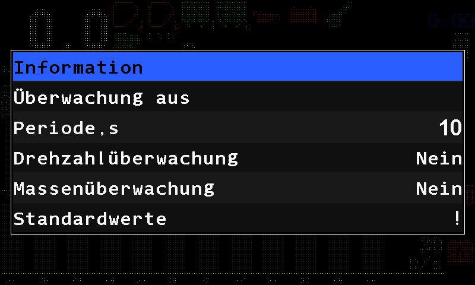
| Parameter | Was er bewirkt | Bereich | Ebene |
|---|---|---|---|
| „Periode,s“ | Die längste Zeit zwischen zwei Impulsen der Welle. Gibt die Welle länger keinen Impuls, während die Maschine sät oder fährt, löst das Panel „Kein Lauf“ aus. Standardwert 10 s. | 1 … 60 | Fahrer |
| „Drehzahlüberwachung“ | Die Wellendrehung gegen die Fahrgeschwindigkeit überwachen. | „Nein“ / „Ja“ | Agronom |
| „Rad, Impulse“ | Wird von der Drehungskalibrierung gesetzt. | 1 … 65535 | Agronom |
| „Dosierer Impulse“ | Wird von der Drehungskalibrierung gesetzt. | 1 … 65535 | Agronom |
| „Maximaler Fehler, %“ | Wie weit die Wellendrehzahl von der Drehzahl abweichen darf, die die Fahrgeschwindigkeit verlangt; darüber hinaus löst das Panel während der Fahrt „Drehzahl zu niedrig“ oder „Drehzahl zu hoch“ aus. Nur sichtbar, wenn „Drehzahlüberwachung“ auf „Ja“ steht. Standardwert 10 %. | 1 … 50 | Agronom |
| „Massenüberwachung“ | Den Dosierer über die ausgebrachte Masse statt über seine Drehung überwachen. | „Nein“ / „Ja“ | Agronom |
| „Produkttyp“ | Welches Produkt dieser Dosierer dosiert. | Agronom | |
| „Masse, g“ / „Masse, Impulse“ | Beide werden von der Kalibrierung nach Masse gesetzt. | je 1 … 65535 | Agronom |
Bei eingeschalteter „Massenüberwachung“ enthält das Kontextmenü zusätzlich „Dosierer-Kalibrierung (Masse)“.
Kalibrierungen
- Drehung – für die „Drehzahlüberwachung“: Dosierer-Drehung kalibrieren.
- Masse – für die „Massenüberwachung“; wiederholen Sie sie bei jedem Produktwechsel: Dosierer nach Masse kalibrieren.
Der Statusbildschirm zeigt die Impulsfrequenz der Welle F= in Hz, auf drei Nachkommastellen. Die zugehörigen Alarme: Gebläse und Dosierwelle: Drehzahlalarme, und bei Massenüberwachung Dosierung nach Masse.
Dosierer-Drehung kalibrieren
Drehen Sie Antriebsrad und Dosierwelle gemeinsam, damit das Panel lernt, wie viele Wellenimpulse zu einem Radimpuls gehören.
Diese Kalibrierung lehrt das Panel, wie viele Impulse der Dosierwelle zu einem Radimpuls gehören, damit es eine stehende Welle von einer fahrenden Maschine unterscheiden kann. Sie ist die Grundlage der „Drehzahlüberwachung“ des Dosierersensors (Dosierwellensensor). Sie schreibt „Rad, Impulse“ und „Dosierer Impulse“.
Vor dem Start: Der Geschwindigkeitssensor und jeder beteiligte Dosierer müssen unter Überwachung stehen und antworten. Sie benötigen die Ebene „Agronom“ (Agronomen-Ebene aktivieren).
Öffnen Sie „Einstellungen“ → „Sämaschinen-Parameter“ → „Dosierer-Kalibrierung“. Stellen Sie die Nummer des Dosierers mit „PLUS“ / „MINUS“ ein – oder 0 für alle auf einmal – und drücken Sie „MENU“. Das Panel zeigt „Kalibrierung“ und einen Fortschrittsbalken.
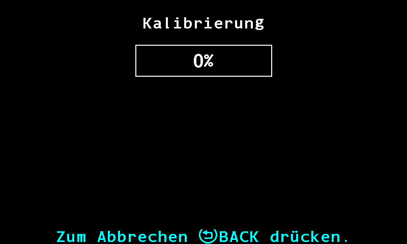
Der Fortschrittsbalken der Dosierer-Kalibrierung. Drehen Sie Antriebsrad und Dosierwelle gemeinsam – von Hand oder durch Bewegen der Maschine. Der Balken füllt sich, während die Zähler steigen.
Drehen Sie weiter, bis der Balken 100 % erreicht. Das geschieht, wenn der Geschwindigkeitssensor und jeder beteiligte Dosierer mindestens 100 Impulse geliefert haben. Der Balken folgt demjenigen, der am weitesten zurückliegt – ein Dosierer, der sich nicht dreht, hält ihn bei null.
Bei 100 % gibt das Panel einen Signalton ab und zeigt „Drehung stoppen!“. Stoppen Sie alles.
Das Panel wartet, bis sich zwei Sekunden lang kein Zähler mehr geändert hat, schreibt dann das Ergebnis und zeigt „Fertig“.
„Zum Abbrechen BACK drücken.“ steht am unteren Rand des Bildschirms; „BACK“ bricht die Kalibrierung jederzeit ab.
Ist ein beteiligter Sensor nicht überwacht oder antwortet er nicht, endet die Kalibrierung mit „Sensor nicht überwacht! Kalibrierung abgebrochen!“ oder „Keine Verbindung zum Sensor! Kalibrierung abgebrochen!“.
Dosierer nach Masse kalibrieren
Lassen Sie einen bodenradgetriebenen Dosierer in einen Behälter fördern und wiegen Sie das Produkt, damit das Panel die Menge in Kilogramm je Hektar überwachen kann.
Diese Kalibrierung speichert, wie viel Gramm ein Impuls der Dosierwelle fördert – „Masse, g“ und „Masse, Impulse“ des Dosierersensors. Wiederholen Sie sie bei jedem Produktwechsel. Sie erfolgt im Stand, auf der Ebene „Fahrer“; das Panel hebt sich für die Dauer der Kalibrierung selbst auf „Agronom“ an und stellt die Ebene beim Verlassen zurück.
Sie benötigen: einen Behälter, der 2 bis 60 kg des Produkts fasst, und eine Waage.
Der Punkt ist nur vorhanden, wenn für diesen Dosierer die „Massenüberwachung“ eingeschaltet ist (Dosierwellensensor).
Halten Sie die Kachel des Dosierersensors gedrückt und wählen Sie „Dosierer-Kalibrierung (Masse)“. Der erste Bildschirm listet die Sollmengen der verwendeten Produkte in kg/ha auf; das Produkt dieses Dosierers ist mit > und < markiert.
Berühren Sie „Dosierer N kalibrieren“ (oder drücken Sie „PLUS“). Lässt sich der Dosierer nicht kalibrieren, steht dort stattdessen eine rote Zeile mit dem Grund: „Nicht überwacht“, „Keine Verbindung“ oder „ALARM“. „Ende“ (oder „BACK“) verlässt den Bildschirm.
Der zweite Bildschirm gibt die Vorbereitung vor. Wiegen Sie den leeren Behälter und notieren Sie das Gewicht.
Füllen Sie den Saatgutbehälter mit dem Produkt und stellen Sie den leeren Behälter unter den Dosierer.
Drehen Sie den Rotor, bis seine Zellen gefüllt sind. Das ist wichtiger, als es aussieht: Ein Rotor mit leeren Zellen fördert in den ersten Umdrehungen zu wenig, und dieser Fehler landet im gespeicherten Wert.
Berühren Sie „Zur Kalibrierung“ (oder drücken Sie „UP“). „Abbrechen“ (oder „BACK“) geht einen Schritt zurück. Der dritte Bildschirm zählt „Impulse“ und dreht ein Rotorsymbol, während sie eintreffen.
Leeren Sie den Behälter und stellen Sie ihn wieder unter den Dosierer.
Drehen Sie den Dosiererrotor und füllen Sie den Behälter so voll wie möglich – nicht weniger als 2 kg und nicht mehr als 60 kg.
Berühren Sie „Beenden“ (oder drücken Sie „MINUS“). Die Taste erscheint erst nach mehr als zehn Impulsen. „Abbrechen“ fragt „Sind Sie sicher?“, bevor die Messung verworfen wird.
Wiegen Sie den gefüllten Behälter. Das Zahlenfeld fordert Sie auf: „Differenz zwischen gefülltem und leerem Behälter in Gramm eingeben“. Geben Sie das Gewicht des Produkts allein ein – 2000 bis 60000 g; das Feld schlägt 10000 vor – und berühren Sie „OK“. Das Panel speichert „Masse, g“ und „Masse, Impulse“.
Dosierer-Elektromotor
Die Parameter eines elektrischen Dosiermotors – Übersetzung, Drehrichtung, Drehzahlfenster, Produkt, Kalibrierwerte und die Kalibriertaste.
Ein Elektromotor treibt einen Dosierer mit der Drehzahl an, die das Panel aus der Sollmenge und der Fahrgeschwindigkeit berechnet. Öffnen Sie sein Kontextmenü wie in Sensoreinstellungen.
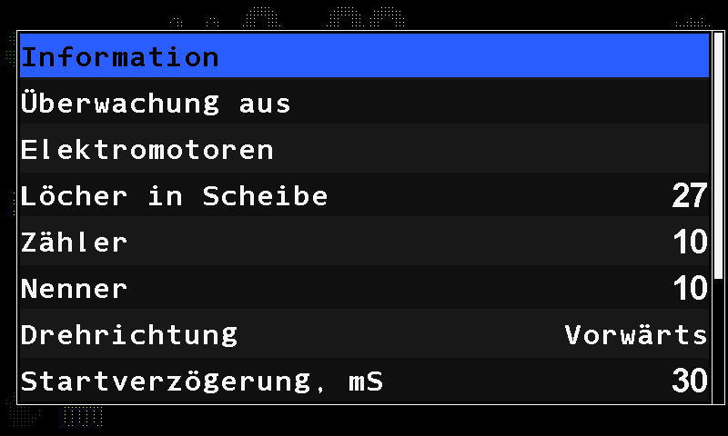
| Parameter | Was er bewirkt | Bereich | Ebene |
|---|---|---|---|
| „Löcher in Scheibe“ | Nur im Modus „Einzelkorn“. | 1 … 200 | Fahrer |
| „Zähler“ / „Nenner“ | Zusammen: das Übersetzungsverhältnis zwischen Motor und Dosierwelle. | je 1 … 500 | Agronom |
| „Drehrichtung“ | Die Drehrichtung des Motors. Stellen Sie sie so ein, dass sich der Dosierer bei der Einbaulage des Motors richtig herum dreht; Standardwert „Vorwärts“. | „Vorwärts“ / „Rückwärts“ | Agronom |
| „Rücklauf bei Blockierung“ | Den Rotor zurückdrehen und erneut versuchen, statt stehenzubleiben. | „Nein“ / „Ja“ | Agronom |
| „Sektionssteuerung D.E.“ | Lässt einen Schalter am Sektionssteuerungseingang des Motorcontrollers diesen Motor anhalten: „Abschalten(0)“ hält ihn an, solange der Eingang 0 meldet, „Abschalten(1)“, solange er 1 meldet; „Nein“ ignoriert den Eingang. | „Nein“ / „Abschalten(0)“ / „Abschalten(1)“ | Service |
| „Startverzögerung, mS“ | Die kürzeste Zeit zwischen dem Start eines Dosiermotors und dem nächsten: Ein Motor, der früher starten würde, wartet, sodass die Motoren nacheinander anlaufen. Standardwert 30 ms. | 0 … 500, Schritte von 5 | Service |
| „Startadresse Gruppe“ | Wird bei der Inbetriebnahme eingestellt – siehe Gerätekonfiguration. | Service | |
| „Produkttyp“ | Welches der vier Produkte dieser Motor dosiert. | Agronom | |
| „Masse, g“ / „Umdrehungen“ | Beide werden von der Kalibrierung nach Masse gesetzt. | je 1 … 65535 | Agronom |
| „Minimum, U/min“ / „Maximum, U/min“ | Das Drehzahlfenster der Welle, das das Panel nutzen darf. | je 0,1 … 500,0 | Agronom |
| „Tasteneingang“ | Digitaler Eingang des Motorcontrollers, der als Kalibriertaste dient; „Nein“ = keiner. | Nein, 1 … 3 | Agronom |
| „Aktivierungssignal“ | Welcher Zustand dieses Eingangs als gedrückt zählt. | 0 / 1 | Agronom |
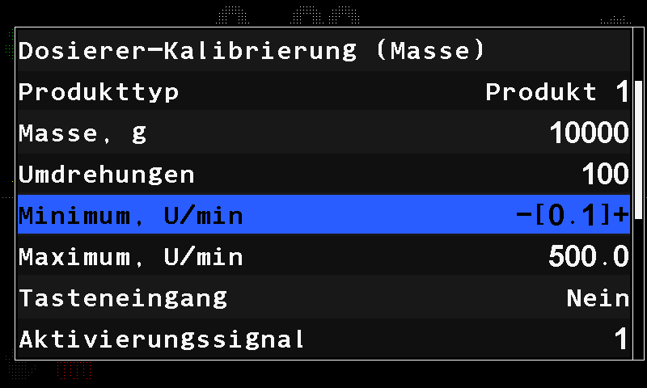
„Minimum, U/min“ und „Maximum, U/min“ sind keine Sicherheitsgrenze, sondern das Fenster, in dem die Mengenregelung arbeitet. Das Fenster der Dosiergeschwindigkeit auf dem Kalibrierbildschirm wird aus ihnen zusammen mit den Werten der Dosierwalze berechnet. „Tasteneingang“ und „Aktivierungssignal“ erlauben es einer Person, den Motor während der Kalibrierung am Dosierer zu starten – siehe Dosiermotor nach Masse kalibrieren.
Der Statusbildschirm zeigt „Betrieb“ oder „Defekt“ und den letzten Fehlercode (Fehlercode eines Elektromotors auslesen). Alarme: Alarme der Dosiermotoren, Dosierung nach Masse. Der Controller selbst wird eingerichtet unter Motorcontroller konfigurieren. „Elektromotoren“ im Kontextmenü (Ebene „Service“) öffnet den Motorenbildschirm bei diesem Motor – denselben Bildschirm wie „Service“ → „Elektromotoren“ (Diagnose der Motorcontroller).
Dosiermotor nach Masse kalibrieren
Lassen Sie den Elektromotor die Dosierwalze in einen Behälter drehen und wiegen Sie das Produkt, damit das Panel weiß, wie viel eine Umdrehung fördert.
Diese Kalibrierung speichert, wie viel Produkt eine Umdrehung der Dosierwalze fördert – „Masse, g“ und „Umdrehungen“ eines Motors. Wiederholen Sie sie bei jedem Wechsel von Produkt oder Walze. Sie erfolgt auf der Ebene „Fahrer“.
Sie benötigen: die stehende Maschine, einen Behälter, der 1 bis 60 kg des Produkts fasst, und eine Waage.
Halten Sie die Kachel des Motors gedrückt und wählen Sie „Dosierer-Kalibrierung (Masse)“.
Das Kontextmenü des Motors mit dem Kalibrierpunkt oben. Der erste Bildschirm zeigt die Sollmengen und unter „Geschwindigkeitsgrenze der Dosierung:“ die Werte „Min. Geschwindigkeit, km/h“ und „Max. Geschwindigkeit, km/h“, die die aktuellen Einstellungen zulassen. Steht dort in Rot „Dosierung unmöglich!“, kann die eingebaute Walze die Menge bei keiner Geschwindigkeit liefern – die Kalibrierung behebt das nicht; bauen Sie eine andere Walze ein. Andernfalls berühren Sie „Elektromotor N kalibrieren“ (oder drücken Sie „PLUS“).
Der zweite Bildschirm bereitet den Rotor vor. Wiegen Sie den leeren Behälter und notieren Sie das Gewicht. Füllen Sie den Saatgutbehälter und stellen Sie den leeren Behälter unter den Dosierer.
Berühren Sie „Rotorzellen füllen“ (oder drücken Sie „MENU“). Der Motor dreht die angetriebene Welle genau zwei Umdrehungen und stoppt von selbst. „Motor stoppen“ („BACK“) unterbricht ihn. Wiederholen Sie dies, bis die Zellen voll sind.
Berühren Sie „Zur Kalibrierung“ (oder drücken Sie „UP“). Der dritte Bildschirm zeigt „Umdrehungen“ auf eine Nachkommastelle.
Leeren Sie den Behälter und stellen Sie ihn wieder unter den Dosierer.
Berühren Sie „Kalibrierung“ (oder drücken Sie „MENU“): Der Motor läuft. Berühren Sie „Motor stoppen“ (oder drücken Sie „BACK“), um ihn anzuhalten. Starten und stoppen Sie so oft wie nötig – der Zähler führt eine laufende Summe. Füllen Sie den Behälter so voll wie möglich, nicht weniger als 1 kg und nicht mehr als 60 kg.
Berühren Sie „Beenden“ (oder drücken Sie „MINUS“). Die Taste erscheint, sobald mehr als eine volle Umdrehung gemacht wurde.
Wiegen Sie den gefüllten Behälter. Das Zahlenfeld fragt nach der Differenz zwischen gefülltem und leerem Behälter in Gramm – 1000 bis 60000 g. Geben Sie sie ein und berühren Sie „OK“. Das Panel speichert „Masse, g“ und „Umdrehungen“ für diesen Motor.
Beim Füllen des Rotors läuft der Motor in der Mitte seines Fensters „Minimum, U/min“ … „Maximum, U/min“, jedoch nicht schneller als 60 U/min.
Motor von einer Taste am Dosierer aus laufen lassen
Ist „Tasteneingang“ des Motors auf einen Eingang (1 … 3) gesetzt und „Aktivierungssignal“ passend zu dieser Taste eingestellt (Dosierer-Elektromotor), startet und stoppt eine Taste an diesem Eingang den Motor genau wie „Kalibrierung“ und „Motor stoppen“: Der Motor läuft, solange die Taste gehalten wird, und stoppt, wenn sie losgelassen wird. So kann eine Person mit dem Behälter am Dosierer stehen, statt zwischen den Durchläufen zur Kabine zu gehen. Der Bildschirm zeigt dieselben Tasten, ob eine solche Taste eingerichtet ist oder nicht – das Panel gibt keinen Hinweis darauf.
Wenn die Kalibrierung von selbst stoppt
Die Kalibrierung endet mit einem Fehler, wenn der Motor nicht mehr antwortet, wenn der Motor einen Alarm auslöst oder wenn zehn Sekunden lang keine Impulse vom Drehsensor kommen – dann zeigt das Panel „Keine Daten vom Drehsensor“. Ein blockierter oder abgezogener Drehsensor beendet den Lauf, statt stillschweigend null zu speichern.
Gebläsesensor
Die Parameter des Gebläse-Drehzahlsensors – das zulässige Drehzahlband und die Impulse je Umdrehung.
Der Gebläsesensor überwacht die Drehzahl des Gebläses einer pneumatischen Drill- oder Einzelkornmaschine. Öffnen Sie sein Kontextmenü wie in Sensoreinstellungen – das Bild dort zeigt genau dieses Menü.
| Parameter | Was er bewirkt | Bereich | Ebene |
|---|---|---|---|
| „Minimum, U/min“ | Darunter löst das Panel „Drehzahl zu niedrig“ aus. | 500 … 9000, Schritte von 500 | Fahrer |
| „Maximum, U/min“ | Darüber löst das Panel „Drehzahl zu hoch“ aus. | 500 … 9000, Schritte von 500 | Fahrer |
| „Impulse“ | Wie viele Impulse eine Umdrehung des Gebläses liefert. | 1 … 60 | Agronom |
Der Statusbildschirm zeigt die Impulsfrequenz F= in Hz. Alarme: Gebläse und Dosierwelle: Drehzahlalarme.
Drucksensor
Die Parameter des Luftdrucksensors – der Glättungsfilter und das zulässige Druckband.
Der Drucksensor misst den Überdruck oder den Unterdruck des Luftsystems. Öffnen Sie sein Kontextmenü wie in Sensoreinstellungen.
| Parameter | Was er bewirkt | Bereich | Ebene |
|---|---|---|---|
| „Filter“ | Wie stark der Messwert geglättet wird. | 1 … 16 | Agronom |
| „Minimum,Pa“ | Die untere Grenze des zulässigen Bandes. | 0 … 10000, Schritte von 100 | Fahrer |
| „Maximum,Pa“ | Die obere Grenze des zulässigen Bandes. | 0 … 10000, Schritte von 100 | Fahrer |
Der Statusbildschirm zeigt den Druck P= in kPa. Alarme: Luftdruck. Einem neuen Drucksensor seine Adresse geben: Drucksensor konfigurieren.
Spuranzeigersensoren
Die Parameter der Spuranzeigersensoren – welchen Spuranzeiger ein Sensor überwacht und welcher Eingangszustand "abgesenkt" bedeutet.
Die Spuranzeigersensoren teilen dem Panel mit, welcher Spuranzeiger unten ist. Das Profil gibt „Nein“, „Einer“ oder „Beide“ an (Das Profil). Öffnen Sie das Kontextmenü eines Spuranzeigersensors wie in Sensoreinstellungen.
| Parameter | Was er bewirkt | Ebene |
|---|---|---|
| „Spuranreißer montiert“ | „Links“ oder „Rechts“. | Agronom |
| „Signal "ab"“ | Welcher Zustand des Eingangs bedeutet, dass der Spuranzeiger abgesenkt ist. | Agronom |
Der Statusbildschirm eines Spuranzeigersensors zeigt nur die gemeinsamen Zeilen.
Behälter-, Arbeitsstellungs- und Motorsensoren
Die Einstellungen der Zwei-Zustands-Sensoren – Behälterfüllstand, Arbeitsstellung des Geräts und die fünf Motorsensoren des Traktors.
Diese Sensoren melden einen von zwei Zuständen und nichts weiter. Öffnen Sie das Kontextmenü eines beliebigen von ihnen wie in Sensoreinstellungen. Ihr Statusbildschirm zeigt Pin: und den Pegel am Eingang, „0“ oder „1“.
Behältersensor
Der Behältersensor hat keine eigenen Parameter – sein Kontextmenü enthält nur die drei gemeinsamen Punkte.

Alarm: Behälter leer.
Arbeitsstellungssensor
Der Arbeitsstellungssensor teilt dem Panel mit, ob das Gerät zur Arbeit abgesenkt oder zum Transport angehoben ist. Der Statusbildschirm zeigt Position: Arbeit oder Position: Transport.
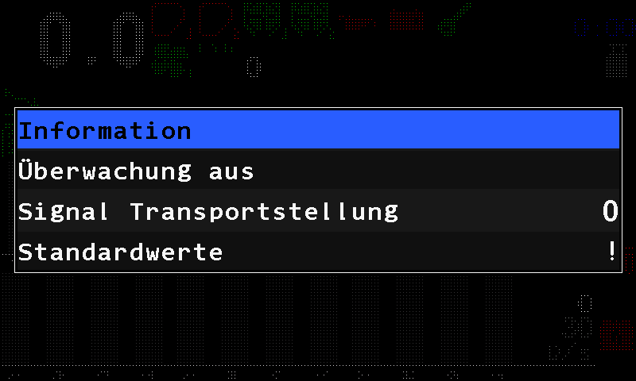
| Parameter | Was er bewirkt | Bereich | Ebene |
|---|---|---|---|
| „Signal Transportstellung“ | Welcher Zustand des Eingangs die Transportstellung bedeutet. | 0 / 1 | Agronom |
Das Menü kann zusätzlich „Alarmkriterium“ enthalten („Ja“ / „Nein“, Ebene „Agronom“): Bei „Ja“, dem Standardwert, werden die Alarme der Korn-, Dünger- und Dosierwellensensoren nicht ausgelöst, solange das Gerät in Transportstellung ist; an Maschinen mit Dosiermotoren oder einem Pumpencontroller für Flüssigdünger ist der Punkt ausgeblendet und immer „Ja“.
Motorsensoren
„Batterie lädt nicht“, „Öldruck-Störung“, „Zündung“, „Wenig Kraftstoff“ und „Luftfilter“ sind fünf getrennte Eingänge, die im Profil jeweils einzeln eingeschaltet werden (Das Profil).

| Parameter | Was er bewirkt | Ebene |
|---|---|---|
| „Aktivierungssignal“ | Welcher Zustand des Eingangs derjenige ist, der gemeldet werden soll. | Agronom |
| „Signalverzögerung, Sek“ | Wie lange dieser Zustand anliegen muss, bevor er zählt. Standardwerte: 15 s für den Kraftstoffstand, 5 s für den Luftfilter. | Agronom |
Alarme: Alarme des Traktormotors.
Fahrgassen-Aktuator
Die zwei Parameter des Fahrgassen-Aktuators, wo seine übrigen Einstellungen liegen und was sein Statusbildschirm zeigt.
Der Fahrgassen-Aktuator schaltet die Sektionen des Fahrgassendurchgangs ab. Er hat zwei eigene Parameter in seinem Kontextmenü (Sensoreinstellungen):
| Parameter | Werte | Ebene |
|---|---|---|
| „Abschaltposition“ | „Ausgefahren“ / „Eingezogen“ – die Stellung des Aktuators, in der seine Sektionen abgeschaltet sind. Standard „Ausgefahren“. | Agronom |
| „Umschaltung“ | „bei Aussaat“ / „immer“ – wann der Aktuator geschaltet wird. Standard „bei Aussaat“. | Agronom |
Die übrigen Einstellungen liegen an anderer Stelle:
| Was | Wo |
|---|---|
| Die Adresse und die Spuranzeigerkanäle seines Controllers | Controller des Fahrgassen-Aktuators konfigurieren |
| Der Rhythmus – welcher Durchgang welchen Aktuator abschaltet | Fahrgassenrhythmus einstellen |
| Welche Sektionen zum Aktuator gehören | „Zuordnung Aktuator-Sensor“ – Sämaschinen-Parameter |
Der Statusbildschirm des Aktuators zeigt Status: Eingezogen, Ausgefahren, Betrieb, solange sich die Klappe bewegt, oder Unbekannt. Alarme: Fahrgassenalarme.
Gerätekonfiguration – vor dem Beginn
Was die Gerätekonfiguration ist, welche Vorbereitung sie braucht und nach welchem Muster aus drei Punkten jedes Konfigurationsmenü aufgebaut ist.
Bei der Inbetriebnahme eines Systems oder beim Austausch eines Sensors muss jedes neue Gerät seine Adresse erhalten – die Nummer, unter der das Panel es im Sensornetz findet. Das geschieht unter „Service“ → „Sensorkonfiguration“, jeweils für ein Gerät.
Vorbereitung
Trennen Sie alle Sensoren vom Netzanschluss des Panels.
Schließen Sie nur das eine Gerät an, das eine neue Adresse erhalten soll.
Schalten Sie das Panel ein. Es erscheinen Alarme über verlorene Kommunikation – schließen Sie sie alle (So arbeiten die Alarme).
Heben Sie die Zugriffsebene auf „Agronom“ an – siehe Agronomen-Ebene aktivieren.
Drücken Sie „BACK“ und wählen Sie dann „Service“ → „Sensorkonfiguration“. Das Menü bietet vier Geräteklassen an.

Das Menü „Sensorkonfiguration“.
Das Muster
Alle vier Menüs funktionieren gleich:
| Punkt | Was er ist |
|---|---|
| „Sensoradresse“ / „Geräteadresse“ | Mit welchem Gerät das Menü spricht. Lassen Sie ihn auf „AUTO“, dann spricht das Panel mit dem einzigen Gerät, das antwortet. „MENU“ bei diesem Punkt startet eine Suche; jeder weitere Druck springt zum nächsten gefundenen Gerät. |
| „Neue Adresse“ | Die Adresse, die das Gerät annehmen soll. Stellen Sie sie mit „PLUS“ / „MINUS“ ein. |
| „Einstellen“ | Schreibt sie. „Fertig“ bedeutet, dass das Gerät sie übernommen hat. |
Danach, jedes Mal: Trennen Sie das Gerät und schließen Sie es wieder an, kehren Sie zum Startbildschirm zurück und prüfen Sie, dass es dort erscheint, wo es soll. Stellen Sie dann die Ebene wieder auf „Fahrer“ – oder schalten Sie das Panel aus und wieder ein, was dasselbe bewirkt.
Die Geräte
| Gerät | Thema |
|---|---|
| Kornsensor | Kornsensor konfigurieren |
| Drucksensor | Drucksensor konfigurieren |
| Eingangsmodul HUB8 | HUB8 konfigurieren |
| Controller des Fahrgassen-Aktuators | Controller des Fahrgassen-Aktuators konfigurieren |
| Elektromotor-Controller – mit eigenem Zugang | Motorcontroller konfigurieren |
Kornsensor konfigurieren
Geben Sie einem neuen oder ausgetauschten Kornsensor die Nummer seiner Reihe.
Bei einem Kornsensor ist die neue Adresse schlicht die Nummer der Reihe – dieselbe Nummer, die der Fahrer auf dem Startbildschirm unter der Spalte sieht. Bereiten Sie zuerst vor wie in Gerätekonfiguration: nur dieser Sensor am Kabel, Ebene „Agronom“.
Die Adresse eines Kornsensors lässt sich nur ändern, solange der Sensor normal arbeitet. Ein Rohrsensor ist bereit, sobald er angeschlossen ist. Ein offener Sensor muss auf seinem Halter sitzen oder so gehalten werden, dass kein Tageslicht in den optischen Kanal fällt – den Spalt zwischen den beiden Gläsern. Bei direktem Licht meldet der Sensor einen dauernden Kornfluss und nimmt die neue Adresse nicht an.
Wählen Sie „Service“ → „Sensorkonfiguration“ → „Kornsensor“ und drücken Sie „MENU“. Das Menü hat drei Punkte.
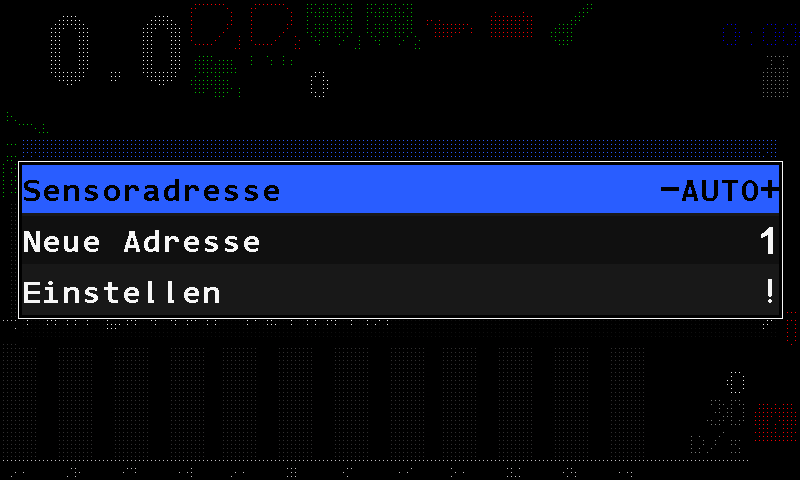
Das Konfigurationsmenü „Kornsensor“. Lassen Sie „Sensoradresse“ auf „AUTO“.
Wählen Sie „Neue Adresse“ und stellen Sie die Reihennummer mit „PLUS“ / „MINUS“ ein.
Wählen Sie „Einstellen“ und drücken Sie „MENU“. Das Panel antwortet „Fertig“.
Das Panel bestätigt mit „Fertig“. Trennen Sie den Sensor und schließen Sie ihn wieder an. Prüfen Sie auf dem Startbildschirm, dass er unter seiner Reihe erscheint.
Sind alle Sensoren fertig, stellen Sie die Ebene wieder auf „Fahrer“ oder schalten Sie das Panel aus und wieder ein.
Drucksensor konfigurieren
Geben Sie einem neuen oder ausgetauschten Luftdrucksensor seine Adresse.
Bereiten Sie zuerst vor wie in Gerätekonfiguration: nur dieser Sensor am Kabel, Ebene „Agronom“. Das Menü hat dieselben drei Punkte wie jedes Konfigurationsmenü. Die Adresswerte sind in dieser Anleitung nicht abgedruckt: Entnehmen Sie sie dem Datenblatt des Systems.
Wählen Sie „Service“ → „Sensorkonfiguration“ → „Drucksensor“ und drücken Sie „MENU“. Das Menü zeigt „Sensoradresse“, „Neue Adresse“ und „Einstellen“.
Lassen Sie „Sensoradresse“ auf „AUTO“.
Wählen Sie „Neue Adresse“. Das Panel schlägt für den ersten Drucksensor selbst den richtigen Wert vor; jeder weitere Sensor erhält den nächsten. Prüfen Sie den Wert anhand des Datenblatts und korrigieren Sie ihn bei Bedarf mit „PLUS“ / „MINUS“.
Wählen Sie „Einstellen“ und drücken Sie „MENU“. Das Panel antwortet „Fertig“.
Trennen Sie den Sensor und schließen Sie ihn wieder an. Prüfen Sie auf dem Startbildschirm, dass seine Anzeige erscheint.
Sind alle Sensoren fertig, stellen Sie die Ebene wieder auf „Fahrer“ oder schalten Sie das Panel aus und wieder ein. Seine Parameter: Drucksensor.
HUB8 konfigurieren
Teilen Sie einem Eingangsmodul HUB8 mit, welcher Sensor an welchem seiner acht Kanäle angeschlossen ist.
Das HUB8 trägt mehrere Sensoren auf einmal. Sein Menü ist länger als die anderen: Nach der Geräteadresse folgen seine acht Kanäle, jeweils mit Typ und Nummer. Bereiten Sie zuerst vor wie in Gerätekonfiguration: nur dieses HUB8 am Kabel, Ebene „Agronom“.
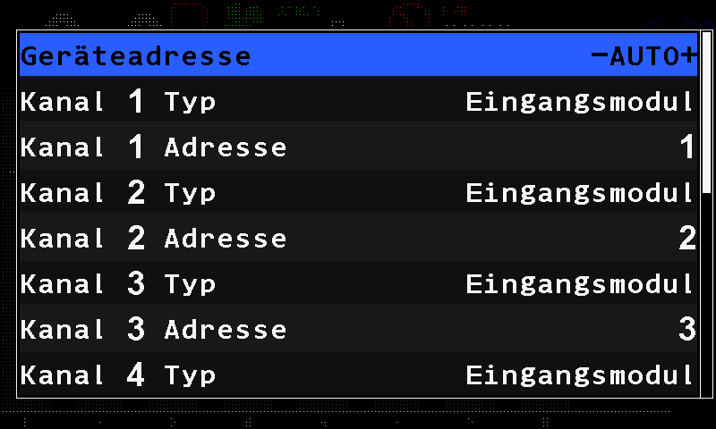
- „Geräteadresse“ – mit welchem HUB8 das Menü spricht. Lassen Sie sie auf „AUTO“.
- „Kanal 1 Typ“ – welche Art Sensor an Kanal 1 angeschlossen ist.
- „Kanal 1 Adresse“ – welcher Sensor dieser Art es ist: Behälter 1, Dosierer 2 und so weiter.
- Der Wert des markierten Punktes, geändert mit „PLUS“ / „MINUS“.
- Bildlaufleiste. Die Kanäle 2 bis 8 folgen in denselben Paaren, danach „Einstellen“.
Typ und Nummer zusammen sorgen dafür, dass der Sensor auf dem Startbildschirm unter dem richtigen Symbol erscheint.
Wählen Sie „Service“ → „Sensorkonfiguration“ → „HUB8“ und drücken Sie „MENU“.
Lassen Sie „Geräteadresse“ auf „AUTO“.
Stellen Sie für jeden Kanal, der einen Sensor trägt, „Kanal N Typ“ und „Kanal N Adresse“ mit „PLUS“ / „MINUS“ ein. Einen Kanal, der nichts trägt, lassen Sie, wie er ist.
Wählen Sie am Ende des Menüs „Einstellen“ und drücken Sie „MENU“. Das Panel antwortet „Fertig“.
Trennen Sie das HUB8 und schließen Sie es wieder an. Prüfen Sie auf dem Startbildschirm, dass jeder Sensor unter seinem Symbol erscheint.
Sind alle Geräte fertig, stellen Sie die Ebene wieder auf „Fahrer“ oder schalten Sie das Panel aus und wieder ein.
Controller des Fahrgassen-Aktuators konfigurieren
Teilen Sie einem Aktuator-Controller mit, welchen Fahrgassen-Aktuator er ansteuert und welche Spuranzeigersensoren an ihm angeschlossen sind.
Der Aktuator-Controller trägt drei Dinge gleichzeitig – den Fahrgassen-Aktuator und die beiden Spuranzeigersensoren des Durchgangs – und jedes hat eine eigene Zeile. Deshalb genügt ein Controller für einen Aktuator und beide Spuranzeiger. Bereiten Sie zuerst vor wie in Gerätekonfiguration: nur dieser Controller am Kabel, Ebene „Agronom“.
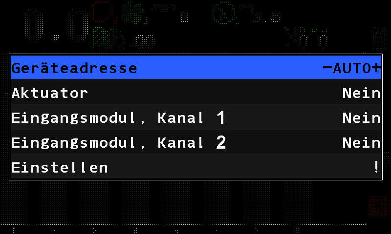
- „Geräteadresse“ – mit welchem Controller das Menü spricht. Lassen Sie sie auf „AUTO“.
- „Aktuator“ – die Nummer des Fahrgassen-Aktuators, den dieser Controller ansteuert, oder „Nein“, wenn er keinen ansteuert.
- „Eingangsmodul, Kanal 1“ – der erste Spuranzeigersensor oder „Nein“.
- „Eingangsmodul, Kanal 2“ – der zweite Spuranzeigersensor oder „Nein“.
- „Einstellen“ – schreibt die drei Zeilen in den Controller.
Wählen Sie „Service“ → „Sensorkonfiguration“ → „Fahrgassen-Aktuator“ und drücken Sie „MENU“.
Lassen Sie „Geräteadresse“ auf „AUTO“.
Stellen Sie „Aktuator“, „Eingangsmodul, Kanal 1“ und „Eingangsmodul, Kanal 2“ mit „PLUS“ / „MINUS“ ein.
Wählen Sie „Einstellen“ und drücken Sie „MENU“. Das Panel antwortet „Fertig“.
Trennen Sie den Controller und schließen Sie ihn wieder an. Prüfen Sie auf dem Startbildschirm, dass der Aktuator und die Spuranzeiger erscheinen.
Sind alle Geräte fertig, stellen Sie die Ebene wieder auf „Fahrer“ oder schalten Sie das Panel aus und wieder ein. Die eigenen Einstellungen des Aktuators: Fahrgassen-Aktuator; die Spuranzeiger: Spuranzeigersensoren.
Motorcontroller konfigurieren
Geben Sie einem Dosiermotor-Controller seine Adresse, wählen Sie die Controllerart und stellen Sie seine Parameter ein.
Die Controller, die die Dosiermotoren ansteuern, werden nicht unter „Sensorkonfiguration“ adressiert. Sie haben einen eigenen Zugang, eine eigene Auswahl der Controllerart und eigene Parameter.
Das Menü der Motorcontroller öffnen
Heben Sie die Ebene auf „Service“ an (Agronomen-Ebene aktivieren – wählen Sie „Service“).
Drücken Sie „MENU“ → „Service“ → „Elektromotoren“. Der Motorenbildschirm öffnet sich.

Der Motorenbildschirm von Motor 1, Seite „Register“. Drücken Sie auf dem Motorenbildschirm „MENU“. Es erscheinen zwei Punkte, beide auf der Ebene „Agronom“: „Adresse ändern“ und „Konfiguration“.

Das Menü des Motorenbildschirms.
Bei einem Panel für ein System ohne Elektromotoren fehlt „Elektromotoren“ im Menü „Service“ ganz.
Adresse ändern
Wählen Sie „Adresse ändern“ und drücken Sie „MENU“. Drei Punkte öffnen sich.
„Motoradresse“ – die Adresse, auf der der Controller jetzt antwortet. Lassen Sie sie, wie sie vorgefunden wurde.
„Neue Adresse“ – die Adresse, die er annehmen soll. Entnehmen Sie sie dem Datenblatt des Systems; die Werte sind in dieser Anleitung nicht abgedruckt.
Wählen Sie „Einstellen“ und drücken Sie „MENU“, um sie zu schreiben.
Controllerart wählen
„Konfiguration“ öffnet die Konfiguration des Controllers. Vier Arten werden unterstützt, angeboten nach Nummer:
| Art | Was es ist |
|---|---|
| „1)Universal“ | Der Universal-Controller: zwei Gleichstromkanäle oder ein Schrittmotorkanal auf derselben Platine. |
| „2)DC-Motor“ | Ein Gleichstrommotor-Controller. |
| „3)Schrittmotor fw0.006+“ | Ein Schrittmotor-Controller, Firmware 0.006 und neuer. |
| „4)BGxxCI“ | Ein BG45CI-Motor mit eingebautem Controller, auf der älteren Platine. |
Das Panel liest die Art vom Controller zurück und öffnet mit der Art, die antwortet. Eine andere Art von Hand zu wählen, dient dazu, eine Ersatzplatine einzurichten – nicht dazu, zu ändern, was ein Motor ist.
Parameter einstellen
Jedes Konfigurationsmenü endet mit „Einstellen“, und „Einstellen“ trägt einen eigenen Wert: die Adressgruppe, 0 bis 3. Nichts erreicht den Controller, bevor „Einstellen“ bestätigt wird – die Punkte darüber ändern die Zahlen, die das Panel hält, nicht die, mit denen der Controller arbeitet.
| Art | Was eingestellt wird |
|---|---|
| Schrittmotor | „Impulse“ 1 … 8192 – die Impulse einer Umdrehung der Motorwelle; „Motortyp“ aus einer Liste; „Einstellen“. |
| BGxxCI | „Impulse“ 1 … 8192; „Einstellen“. Sonst nichts – den Rest trägt der Controller selbst. |
| DC-Motor | „Impulse“, „Motortyp“, die Reglerglieder „PID kP“, „PID kI“, „PID kD“ (0 … 65535, als Hundertstel gelesen), „TURBINA“ 0/1 und zwei Paare aus Drehzahl und Zeit „TIME1“ / „SPEED1“, „TIME2“ / „SPEED2“; „Einstellen“. |
| Universal | Der größte Satz, in drei Menüs: „Betriebsmodus“, „Eingänge einrichten“ und „Parameter“. |
Das Menü „Parameter“ des Universal-Controllers:
| Parameter | Bereich |
|---|---|
| „Motortyp“ | 0 … 255, aus der eigenen Tabelle des Controllers |
| „Impulse“ | 1 … 8192 je Wellenumdrehung |
| „Beschleunigung,mS“ / „Verzögerung,mS“ | 50 … 65535 – die Rampe hinauf und hinab |
| „Minimum, U/min“ / „Maximum, U/min“ | 0 … 65535 – das Drehzahlfenster der Welle |
| „PID kP“, „PID kI“, „PID kD“ | 0 … 65535, Hundertstel |
| „!! Temp,*C“ | 0 … 200 – die Temperatur, bei der der Controller Alarm gibt |
| „I_peak,A“ / „I_peak,mS“ | der Spitzenstrom und wie lange er fließen darf |
| „I_push,A“ / „I_push,Sec“ | der Anlaufstrom und seine Dauer |
| „I_hilo,A“ / „I_hilo,Sec“ | die Schwelle des Dauerstroms und ihre Zeit |
| „Einstellen“ | schreibt alles, in der gewählten Adressgruppe |
Die Punkte „PID kP“, „PID kI“, „PID kD“, „TURBINA“, „TIME1“, „SPEED1“, „TIME2“, „SPEED2“, „!! Temp,*C“, „I_peak,A“, „I_push,A“, „I_hilo,A“ und ihre Zeitpartner lauten in jeder Sprache des Panels gleich.
Was der Controller meldet, lesen Sie so: Diagnose der Motorcontroller.
Diagnose der Motorcontroller
So lesen Sie auf dem Motorenbildschirm, was ein Dosiermotor-Controller über sich meldet – Drehzahl, Fehlercode, Spannungen, Temperatur, Strom, Statusbits und Störungszähler.
Der Motorenbildschirm ist zugleich der Diagnosebildschirm eines Motorcontrollers. Er zeigt live, was der Controller über sich meldet. Öffnen Sie ihn mit „MENU“ → „Service“ → „Elektromotoren“ (Ebene „Service“). Die Arbeitsansicht desselben Bildschirms ist in Der Bildschirm Motoren beschrieben.
- „Motor #1“ – welcher Motor gezeigt wird. (−) / (+) springen zum vorherigen / nächsten Motor.
- „Register“ – der Name der Seite.
- Das Statuswort – sechzehn Bits des Controllers; eine leuchtende (gelbe) Zelle ist ein gesetztes Bit.
- Die Legende der Bits – Nummer und Name jedes Bits. Tabelle unten.
- „Geschw.“ / „Sollgeschw.“ – was die Welle tut gegenüber dem, was das Panel verlangt hat. Eine Lücke, die sich nicht schließt, ist das erste Zeichen einer Last, die der Motor nicht tragen kann.
- „Fehlercode“ / „Ist-Pos.“ – die eigene Fehlernummer des Controllers (Codes) und die Position, auf der er sich selbst zählt.
- „Spg.Motor,mV“ / „Spg.Elektr.,mV“ – die Spannung am Motor und an der Elektronik, in Millivolt. Liegt die Motorspannung weit unter der Elektronikspannung, bricht die Versorgung unter Last ein.
- „Temperatur,C“ / „Strom,mA“ – die Temperatur des Controllers und der Strom, den er aufnimmt. Vergleichen Sie den Strom mit „I_hilo,A“, das für diesen Motor eingestellt ist (Motorcontroller konfigurieren).
Die Statusbits
| Bit | Name | Bit | Name |
|---|---|---|---|
| 0 | Enable | 8 | Toggle |
| 1 | Error | 9 | CmdTgl |
| 2 | Warn. | 10 | CmdErr |
| 3 | Moving | 11 | StpHalt |
| 4 | Reach | 12 | LimCur |
| 5 | Limit | 13 | LimVel |
| 6 | FolErr | 14 | LimPos |
| 7 | HomDone | 15 | LimSVel |
Die Legende wird auf jedem Panel auf Englisch gezeichnet, gleich in welcher Sprache es läuft: Sie ist eine Bitbelegung des Controllers, keine Meldung an die Bedienperson.
Die Störungszähler

Die Störungen, die dieser Motor auf dem gewählten Feld gesammelt hat – sie gehören zur Feldstatistik, nicht zum Motor:
| Zähler | Was er zählt |
|---|---|
| „Klemmt“ | Der Rotor blockierte, und der Controller musste aufgeben oder zurückfahren. |
| „Abbrüche“ | Der Controller antwortete nicht mehr. |
| „Andere“ | Alles Übrige, was der Controller meldete, auch Überstrom und Übertemperatur – sie haben keinen eigenen Zähler. |
| „Störung“ | Die Strecke in Metern, die dieser Motor in einem Störungszustand verbrachte. |
Jeder Zähler ist bei null weiß und rot, sobald er nicht mehr null ist. Eine rote Zahl heißt nicht, dass der Motor jetzt defekt ist – sie heißt, dass er es irgendwo auf diesem Feld war, und das dort ausgebrachte Saatgut verdient einen Blick.
So arbeiten die Alarme
Wann der Hectare One einen Alarm auslöst, was das Alarmfenster zeigt, wie Sie es schließen und wie Sie die Alarmthemen dieser Anleitung benutzen.
Ein Alarm ist ein Fenster, das sich mit einem Warnton über den Arbeitsbildschirm legt. Es teilt Ihnen mit, dass ein Gerät – ein Sensor, ein Aktuator, ein Motorcontroller – oder das System als Ganzes eine Störung festgestellt hat. Die Alarmthemen dieses Abschnitts sind nach dem Gerät geordnet, das den Alarm auslöst. Suchen Sie nach den Wörtern, die Sie auf dem Bildschirm sehen, nicht nach einer Beschreibung davon.
Wann das Panel einen Alarm auslöst
Eine Störung wird nicht in dem Moment gemeldet, in dem sie auftritt. Die Bedingung muss ununterbrochen für die bei „Alarmverzögerung“ eingestellte Zeit bestehen, bevor sich das Alarmfenster öffnet.
| Einstellung | Wert |
|---|---|
| Wo sie eingestellt wird | Menü „Einstellungen“, Punkt „Alarmverzögerung“. Verfügbar auf der Zugriffsebene „Fahrer“. Siehe Das Menü Einstellungen. |
| Bereich | 2 bis 20 Sekunden, in Schritten von 1 Sekunde. |
| Standard | 3 Sekunden. Ein Wert außerhalb des Bereichs wird von selbst auf den Standardwert zurückgesetzt. |
Eine kurze Verzögerung lässt das Panel schnell reagieren, aber auch auf kurze Störungen – einen einzelnen Stoß, eine kurze Lücke im Kornfluss. Eine lange Verzögerung hält den Bildschirm ruhig, doch eine echte Störung kann bis zu zwanzig Sekunden bestehen, bevor Sie davon erfahren.
Zwei Fälle folgen der Verzögerung nicht:
- Der Verbindungsverlust wird in Abfragen gezählt, nicht in Sekunden. „Verbindung weg“ erscheint nach drei aufeinanderfolgenden Abfragen ohne Antwort des Geräts.
- Unmittelbar nach der Einrichtung eines Sensors werden dessen Alarme für eine kurze Sperrzeit nicht verarbeitet. Das verhindert eine Flut von Alarmen, während ein Gerät konfiguriert wird.
Das Alarmfenster
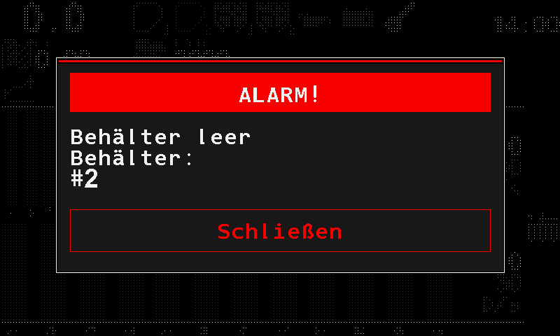
- „ALARM!“ – der Titel jedes Alarmfensters, gleich welche Störung vorliegt. Er ist nicht die Störung selbst.
- Der Alarmtext – die Störung. Schlagen Sie sie unter diesem Text in den Alarmthemen nach.
- Die Art des Geräts, das den Alarm auslöst – hier ein Behältersensor. Derselbe Text kann von verschiedenen Geräten kommen; diese Zeile sagt Ihnen, von welchem.
- Die Nummer des Geräts – hier Behälter 2. Lösen mehrere Geräte derselben Art denselben Alarm aus, teilen sie sich ein Fenster und werden zusammen aufgeführt, zum Beispiel #3-5,8.
- „Schließen“ – schließt diesen Alarm. Unten.
Die Alarme des Panels selbst tragen in ihrem Text statt einer Gerätezeile die Zeile „HOME - Meldung schließen“. Die Alarme der Sensoren nicht.
Einen Alarm schließen
| Was Sie tun | Was geschieht |
|---|---|
| Berühren Sie im Fenster die rote Taste „Schließen“ oder drücken Sie „HOME“ | Dieser Alarm schließt sich. Warten weitere Alarme, öffnet sich der nächste. Solange das Fenster offen ist, ist „HOME“ die einzige beleuchtete Taste. |
| Halten Sie „HOME“ gedrückt | Alle offenen Alarmfenster schließen sich auf einmal, und das Panel kehrt zum Startbildschirm zurück. |
Das Schließen eines Fensters behebt die Störung nicht. Die noch aktiven Alarme eines Sensors stehen auf seinem Statusbildschirm – siehe Der Sensor-Statusbildschirm.
Auf den höheren Zugriffsebenen sind Alarme verborgen
Auf den Ebenen „Agronom“ und „Service“ werden keine Alarmfenster angezeigt. Sie gehen nicht verloren: Sie warten. Kehren Sie zu „Fahrer“ zurück, verwirft das Panel die Alarme, die inzwischen verschwunden sind, und zeigt die, die noch zutreffen, nacheinander. Siehe Zugriffsebenen.
Keine Alarme: LANGSAMER und SCHNELLER
Verlässt die Fahrgeschwindigkeit den zulässigen Bereich, öffnet sich kein Alarmfenster. Stattdessen zeigt der Startbildschirm „LANGSAMER“ oder „SCHNELLER“ und zeigt es weiter an, während Sie die Geschwindigkeit korrigieren. Siehe Anzeigen des Startbildschirms.
Wie die Alarmthemen aufgebaut sind
Jeder Alarm hat eine eigene Überschrift mit dem Text genau wie auf dem Bildschirm; steht die Meldung auf dem Panel in zwei Zeilen, werden beide Zeilen angegeben. Darunter: was das Panel festgestellt hat und was Sie prüfen sollten, in der Reihenfolge, in der ein Mechaniker prüft – zuerst die schnellen Prüfungen am Panel, dann die Maschine, dann der Sensor selbst.
Beliebiges Gerät: Verbindung weg oder falscher Gerätetyp
Die zwei Alarme, die jeder Sensor, Aktuator, Controller oder jedes Eingangsmodul auslösen kann – keine Antwort vom Gerät oder Antwort der falschen Geräteart.
Diese beiden Alarme sind nicht an eine Geräteart gebunden. Der Gerätename im Alarmfenster sagt Ihnen, welches Gerät betroffen ist. Wie das Fenster funktioniert: So arbeiten die Alarme.
„Verbindung weg“
Was es bedeutet. Das Panel hat vom Gerät bei drei aufeinanderfolgenden Abfragen keine Antwort erhalten. Das gilt für Sensoren, Aktuatoren, Controller und das Eingangsmodul gleichermaßen.
Was Sie prüfen, in dieser Reihenfolge:
- Das Gerät ist an das Netz angeschlossen.
- Das Kabel und der Steckverbinder des Geräts.
- Die Stromversorgung des Geräts. Sie muss den Werten im Gerätepass entsprechen.
„Falscher Gerätetyp!“
Was es bedeutet. Dort, wo das Panel ein Gerät dieser Art erwartet, antwortet ein Gerät anderer Art. Ursache ist entweder eine falsche Einstellung im Systemprofil oder eine falsche Konfiguration des Geräts selbst.
Was zu tun ist: Wenden Sie sich an den Service-Support. Versuchen Sie nicht, es durch wahlloses Ändern des Profils oder der Gerätekonfiguration zu beheben – siehe Gerätekonfiguration.
Gebläse und Dosierwelle: Drehzahlalarme
Was zu tun ist, wenn das Gebläse oder die Dosierwelle zu langsam, zu schnell oder gar nicht dreht.
Der Gebläsesensor und der Dosierwellensensor verwenden dieselben zwei Meldungen. Der Gerätename im Alarmfenster sagt Ihnen, welcher es ist. Wie das Fenster funktioniert: So arbeiten die Alarme.
„Drehzahl zu niedrig“ / „Drehzahl zu hoch“
Was es bedeutet. Das Gebläse oder die Dosierwelle dreht langsamer oder schneller als zulässig.
Was Sie prüfen, in dieser Reihenfolge:
- Das überwachte Bauteil – das Gebläse oder der Dosierer samt Antrieb.
- Die Einstellungen des Sensors: beim Gebläse „Minimum, U/min“, „Maximum, U/min“ und „Impulse“ – siehe Gebläsesensor; beim Dosierer – siehe Dosierwellensensor.
- Nur Dosierer: Die Fahrgeschwindigkeit auf dem Panel stimmt mit der tatsächlichen überein.
- Der Sensor selbst ist betriebsbereit.
- Nur Dosierer: Führen Sie die Kalibrierung durch – siehe Dosierer-Drehung kalibrieren.
„Kein Lauf“
Was es bedeutet. Die Dosierwelle dreht sich nicht. Diesen Alarm löst nur der Dosierwellensensor aus.
Was Sie prüfen, in dieser Reihenfolge:
- Der Dosierer und sein Antrieb.
- Die Einstellungen des Sensors – siehe Dosierwellensensor.
- Der Sensor selbst ist betriebsbereit.
Behälter leer
Was zu tun ist, wenn das Panel meldet, dass ein Behälter leer läuft.
Der Behältersensor sitzt in einer festen Höhe im Behälter. Er meldet, wenn das Produkt darunter fällt. Wie das Fenster funktioniert: So arbeiten die Alarme.
„Behälter leer“
Was es bedeutet. Der Füllstand des Produkts im Behälter ist sehr niedrig. Der Behälter muss nachgefüllt werden.
Was Sie prüfen, in dieser Reihenfolge:
- Füllen Sie den Behälter nach.
- Steht das Produkt über der Einbauhöhe des Sensors und bleibt der Alarm bestehen, prüfen Sie, ob der Sensor betriebsbereit ist. Sein Statusbildschirm zeigt den Pegel an seinem Eingang als „0“ oder „1“ – siehe Der Sensor-Statusbildschirm.
Der Behältersensor hat über die gemeinsamen hinaus keine eigenen Einstellungen – siehe Behälter-, Arbeitsstellungs- und Motorsensoren.
Luftdruck zu hoch oder zu niedrig
Was zu tun ist, wenn der Drucksensor des Luftsystems einen Druck oder Unterdruck außerhalb des zulässigen Bereichs meldet.
Der Drucksensor misst den Überdruck oder den Unterdruck des Luftsystems. Beide Alarme betrachten den Absolutwert – die Größe des Drucks oder Unterdrucks, welcher es auch ist. Die Grenzen des Sensors sind in Drucksensor beschrieben. Wie das Fenster funktioniert: So arbeiten die Alarme.
„Druck hoch“
Was es bedeutet. Der gemessene Druck oder Unterdruck ist größer als zulässig.
Was Sie prüfen, in dieser Reihenfolge:
- Verringern Sie die Drehzahl des Gebläses oder der Turbine.
- Die Stellung der Regelklappe der Luftansaugung, falls vorhanden.
- Der Schlauch zum Drucksensor ist richtig angeschlossen, und die Messleitung ist frei von Verstopfungen.
„Niedriger Druck“
Was es bedeutet. Der gemessene Druck oder Unterdruck ist kleiner als zulässig.
Was Sie prüfen, in dieser Reihenfolge:
- Erhöhen Sie die Drehzahl des Gebläses oder der Turbine.
- Die Stellung der Regelklappe der Luftansaugung, falls vorhanden.
- Der Luftkanal auf Undichtigkeiten.
- Der Schlauch zum Drucksensor ist richtig angeschlossen, und die Messleitung ist frei von Verstopfungen.
Ausbringmenge zu niedrig, zu hoch oder nicht überwacht
Was zu tun ist, wenn die Korn-, Trockendünger- oder Flüssigdüngersensoren eine Menge unter oder über dem zulässigen Band melden oder zu wenig Produkt, um die Überwachung überhaupt zu starten.
Die Sektionssensoren – Korn, Trockendünger und Flüssigdünger – vergleichen die gemessene Menge mit dem Sollwert. Wie das Fenster funktioniert: So arbeiten die Alarme.
„Nicht überwacht!“ / „Saatmenge prüfen“
Was es bedeutet. Über die eingestellte Zahl von Sektionssensoren liegt die Menge des Produkts unter dem Minimum, das das Panel braucht, um die Ausbringung überhaupt zu überwachen.
Was Sie prüfen, in dieser Reihenfolge:
- Die Fahrgeschwindigkeit auf dem Panel stimmt mit der tatsächlichen überein.
- Die Sollmenge oder die minimale Alarmmenge – welche, hängt vom Überwachungsmodus der Sektionsgruppe ab.
- In den Behältern oder im Tank ist genug Produkt.
- Korn- oder Trockendüngersensor: „Fraktion“ in seinen Einstellungen. Der Wert muss eventuell verringert werden. Siehe Korn- und Düngersensoren.
- Flüssigdüngersensor: „Impulse je Liter“ in seinen Einstellungen. Der Wert muss eventuell verringert werden. Siehe Flüssigdünger.
- Das Dosiergerät: Ist es betriebsbereit und richtig eingestellt?
„Unter Sollmenge“
Was es bedeutet. Ein Sektionssensor – Korn, Trockendünger oder Flüssigdünger – hat während der Arbeit zu wenig Produkt gemessen.
Was Sie prüfen, in dieser Reihenfolge:
- In den Behältern oder im Tank ist genug Produkt.
- Die Fahrgeschwindigkeit auf dem Panel stimmt mit der tatsächlichen überein.
- Korn- oder Trockendüngersensor: „Fraktion“. Der Wert muss eventuell verringert werden.
- Flüssigdüngersensor: „Impulse je Liter“. Der Wert muss eventuell verringert werden.
- Kornsensor: sein Status auf dem Statusbildschirm („Information“ in seinem Kontextmenü) – siehe Der Sensor-Statusbildschirm.
- Das Dosiergerät: Ist es betriebsbereit und richtig eingestellt?
„Über Sollmenge“
Was es bedeutet. Ein Sektionssensor – Korn, Trockendünger oder Flüssigdünger – hat während der Arbeit zu viel Produkt gemessen.
Was Sie prüfen, in dieser Reihenfolge:
- Die Fahrgeschwindigkeit auf dem Panel stimmt mit der tatsächlichen überein.
- Korn- oder Trockendüngersensor: „Fraktion“. Der Wert muss eventuell erhöht werden.
- Flüssigdüngersensor: „Impulse je Liter“. Der Wert muss eventuell erhöht werden.
- Kornsensor: sein Status auf dem Statusbildschirm.
- Das Dosiergerät: Ist es betriebsbereit und richtig eingestellt?
Zu viele Doppel oder Fehlstellen
Was zu tun ist, wenn ein Kornsensor einer Einzelkornsämaschine mehr Doppel oder Fehlstellen zählt als zulässig.
Doppel und Fehlstellen werden nur im Aussaatmodus „Einzelkorn“ gezählt – an einer Einzelkornsämaschine. Wie das Fenster funktioniert: So arbeiten die Alarme.
„Hoher % Doppel“
Was es bedeutet. Der Anteil an Doppeln, den der Sensor zählt, liegt über dem eingestellten Grenzwert.
Was Sie prüfen, in dieser Reihenfolge:
- Die Fahrgeschwindigkeit auf dem Panel stimmt mit der tatsächlichen überein.
- „Doppelfehler,%“ in den Einstellungen des Kornsensors – ist der Grenzwert sinnvoll? Siehe Korn- und Düngersensoren.
- „Fraktion“ in den Einstellungen des Kornsensors. Der Wert muss eventuell erhöht werden.
- Der Status des Sensors auf seinem Statusbildschirm – siehe Der Sensor-Statusbildschirm.
- Das Dosiergerät: Ist es betriebsbereit und richtig eingestellt?
„Hoher % Fehlstellen“
Was es bedeutet. Der Anteil an Fehlstellen, den der Sensor zählt, liegt über dem eingestellten Grenzwert.
Was Sie prüfen, in dieser Reihenfolge:
- Die Fahrgeschwindigkeit auf dem Panel stimmt mit der tatsächlichen überein.
- In den Behältern ist genug Saatgut.
- „Fehlstellenfehler, %“ in den Einstellungen des Kornsensors – ist der Grenzwert sinnvoll?
- „Fraktion“ in den Einstellungen des Kornsensors. Der Wert muss eventuell verringert werden.
- Der Status des Sensors auf seinem Statusbildschirm.
- Das Dosiergerät: Ist es betriebsbereit und richtig eingestellt?
Fahrgasse: Aktuator blockiert oder Produkt in der Fahrgasse
Was zu tun ist, wenn der Fahrgassen-Aktuator klemmt, seine Stellungssensoren sich widersprechen oder eine abgeschaltete Sektion weiter Produkt ausbringt.
Der Fahrgassen-Aktuator schaltet die Sektionen des Fahrgassendurchgangs ab. Zwei Stellungssensoren der Klappe sagen dem Panel, wo seine Klappe steht. Wie das Fenster funktioniert: So arbeiten die Alarme.
„Blockiert“
Was es bedeutet. Der Fahrgassen-Aktuator klemmt.
Was Sie prüfen, in dieser Reihenfolge:
- Die Stellungssensoren der Klappe des Aktuators sind betriebsbereit.
- Der Mechanismus des Fahrgassen-Aktuators ist betriebsbereit.
„Undefinierter Zustand“
Was es bedeutet. Beide Stellungssensoren der Klappe haben gleichzeitig ausgelöst. Bei einer einwandfreien Installation kann das nicht vorkommen.
Was Sie prüfen: Die Stellungssensoren der Klappe sind betriebsbereit.
„Saat in Fahrgasse“
Was es bedeutet. Eine Sektion, die für die Fahrgasse abgeschaltet sein sollte, bringt noch zu viel Produkt aus. Der Kornsensor, der Trockendüngersensor oder der Flüssigdüngersensor dieser Sektion hat es im Fahrgassen-Überwachungsmodus gemessen.
Kornsensor oder Trockendüngersensor – Sie prüfen, in dieser Reihenfolge:
- Das Dosiergerät und der Mechanismus zum Absperren des Flusses sind betriebsbereit.
- „Zulässige Saat in Fahrgasse,%“ in den Einstellungen der Gruppe der Sektionssensoren. Der Wert muss eventuell erhöht werden. Siehe Korn- und Düngersensoren.
- „Fraktion“ in den Einstellungen der Gruppe des alarmierenden Sensors. Der Wert muss eventuell erhöht werden.
- Der Status des Sensors auf seinem Statusbildschirm – siehe Der Sensor-Statusbildschirm.
Flüssigdüngersensor – Sie prüfen, in dieser Reihenfolge:
- Das Dosiergerät und der Mechanismus zum Absperren des Flusses sind betriebsbereit.
- „Zulässiger Verlust in Fahrgasse,%“ in den Einstellungen der Gruppe der Sektionssensoren. Der Wert muss eventuell erhöht werden. Siehe Flüssigdünger.
Korn- oder Düngersensor verstopft, von Fremdlicht getroffen oder defekt
Was zu tun ist, wenn ein optischer Korn- oder Düngersensor einen blockierten Kanal, zu viel Licht, einen eigenen Defekt oder veraltete Firmware meldet.
Die Korn- und Trockendüngersensoren zählen das Produkt optisch: Ein Sender leuchtet quer durch den Kanal, ein Empfänger sieht jedes Korn. Diese Alarme melden den Zustand des Sensors selbst, nicht die Menge. Wie das Fenster funktioniert: So arbeiten die Alarme.
„Verstopft“
Was es bedeutet. Der Korn- oder Trockendüngersensor hat festgestellt, dass sein optischer Kanal blockiert ist.
Was zu tun ist, in dieser Reihenfolge:
- Beseitigen Sie die Verstopfung.
- Prüfen Sie den Kanal auf Staubablagerungen.
- Prüfen Sie die Stromversorgung des Sensors. Sie muss den Werten im Gerätepass entsprechen.
„Fremdlicht“
Was es bedeutet. Der Korn- oder Düngersensor hat in seinem optischen Kanal ein extrem hohes Lichtniveau festgestellt.
Was zu tun ist: Halten Sie direktes Sonnenlicht vom optischen Kanal des Sensors fern.
„Defekt“
Was es bedeutet. Der Korn- oder Trockendüngersensor hat einen eigenen Defekt festgestellt. Er muss eventuell ersetzt werden.
Was zu tun ist: Prüfen Sie die Stromversorgung des Sensors. Sie muss den Werten im Gerätepass entsprechen. Ist die Stromversorgung in Ordnung, muss der Sensor eventuell ersetzt werden – wenden Sie sich an den Service-Support.
„Alte Firmware! F&D falsch!“
Was es bedeutet. Es ist ein Kornsensor mit veralteter Firmware im Einsatz. Er zählt, aber seine Fehlstellen und Doppel sind nicht verlässlich.
Was zu tun ist: Wenden Sie sich an den Service-Support, damit die Firmware des Sensors aktualisiert wird.
Traktormotor: Öldruck, Batterieladung, Kraftstoff, Luftfilter
Was zu tun ist, wenn einer der Bordsensoren des Motors – Öldruck, Batterieladung, Kraftstoffstand, Luftfilter – Alarm auslöst.
Alle Bordsensoren des Motors teilen sich einen Alarmtext: „ALARM“. Der Name des Sensors über dem Text sagt Ihnen, welcher ausgelöst hat. Wie das Fenster funktioniert: So arbeiten die Alarme. Die unten genannten Einstellungen sind in Behälter-, Arbeitsstellungs- und Motorsensoren beschrieben.
„Öldruck-Störung“ – „ALARM“
Was es bedeutet. Der Sensor für niedrigen Öldruck hat ausgelöst.
Was Sie prüfen, in dieser Reihenfolge:
- Der Sensor für niedrigen Öldruck ist betriebsbereit.
- „Aktivierungssignal“ in den Einstellungen des Sensors für niedrigen Öldruck.
- Steht ein Zündschlüsselsensor im Profil: Ist seine Überwachung eingeschaltet?
- Steht ein Zündschlüsselsensor im Profil: Ist er betriebsbereit?
„Batterie lädt nicht“ – „ALARM“
Was es bedeutet. Die Batterie wird nicht geladen.
Was Sie prüfen, in dieser Reihenfolge:
- Der Sensor für die Batterieladung ist betriebsbereit.
- „Aktivierungssignal“ in den Einstellungen des Sensors für die Batterieladung.
- Steht ein Zündschlüsselsensor im Profil: Ist seine Überwachung eingeschaltet?
- Steht ein Zündschlüsselsensor im Profil: Ist er betriebsbereit?
„Wenig Kraftstoff“ – „ALARM“
Was es bedeutet. Im Tank ist nur noch wenig Kraftstoff.
Was Sie prüfen, in dieser Reihenfolge:
- Der Kraftstoffstandssensor ist betriebsbereit.
- „Aktivierungssignal“ in den Einstellungen des Kraftstoffstandssensors.
- „Signalverzögerung, Sek“ in den Einstellungen des Kraftstoffstandssensors. Der Standardwert beträgt 15 Sekunden.
„Luftfilter“ – „ALARM“
Was es bedeutet. Der Luftfilter ist verstopft.
Was Sie prüfen, in dieser Reihenfolge:
- Der Luftfiltersensor ist betriebsbereit.
- „Aktivierungssignal“ in den Einstellungen des Luftfiltersensors.
- „Signalverzögerung, Sek“ in den Einstellungen des Luftfiltersensors. Der Standardwert beträgt 5 Sekunden.
Produktmenge nach Masse zu niedrig, zu hoch oder unmöglich
Was zu tun ist, wenn ein nach Masse dosiertes Produkt – über einen Elektromotor oder einen massenüberwachten Dosierer – seine Sollmenge verfehlt oder sie gar nicht erreichen kann.
Diese Alarme löst das System als Ganzes aus, nicht ein einzelnes Gerät. Es gibt sie für jedes der vier Produkte getrennt: Die Zahl in der Meldung ist die Nummer des Produkts. Wie das Fenster funktioniert: So arbeiten die Alarme.
„Menge Produkt 1“ / „zu gering!“ – oder – „zu hoch!“
Dasselbe gilt für Produkt 2, 3 und 4.
Was es bedeutet. Das Produkt wird unter oder über seiner Sollmenge in Kilogramm je Hektar ausgebracht.
Produkt, das ein Elektromotor dosiert – Sie prüfen, in dieser Reihenfolge:
- Die Sollmenge des Produkts.
- Die geltenden Geschwindigkeitsgrenzen auf dem Statusbildschirm des Geschwindigkeitssensors – siehe Der Sensor-Statusbildschirm.
- Die Einstellungen des Elektromotors, der die Dosierwelle antreibt – siehe Dosierer-Elektromotor.
- Das Dosiergerät.
- Der Drehsensor des Elektromotors ist betriebsbereit.
- Die Arbeitslast des Motors. Unter 20 % oder über 80 %: Versuchen Sie eine Dosierwalze anderer Größe – eine größere, wenn zu wenig ausgebracht wird, eine kleinere, wenn zu viel.
- Kalibrieren Sie die Dosierwalze – siehe Dosiermotor nach Masse kalibrieren.
Dosierersensor mit eingeschalteter „Massenüberwachung“ – Sie prüfen, in dieser Reihenfolge:
- Die Sollmenge des Produkts.
- Die Einstellungen des Drehsensors der Dosierwelle – siehe Dosierwellensensor.
- Das Dosiergerät.
- Der Dosierersensor ist betriebsbereit.
- Kalibrieren Sie die Dosierwalze – siehe Dosierer nach Masse kalibrieren.
„Produktdosierung nicht“ / „möglich! Menge und“ / „Kalibrierung prüfen!“
Was es bedeutet. Mit den aktuellen Einstellungen und der Sollmenge lässt sich das Produkt überhaupt nicht nach Masse ausbringen.
Was Sie prüfen, in dieser Reihenfolge:
- Die Sollmenge des Produkts.
- „Min. Geschwindigkeit, km/h“ und „Max. Geschwindigkeit, km/h“ des Geschwindigkeitssensors – siehe Fahrgeschwindigkeitssensor.
- Die Einstellungen der Elektromotoren, die die Produkte nach Masse ausbringen, vor allem „Minimum, U/min“ und „Maximum, U/min“.
- Kalibrieren Sie die Dosierwalzen der Elektromotoren.
- Hilft das nicht: Bauen Sie Dosierwalzen anderer Größe ein.
Benutzer ist Agronom: Alarme werden nicht angezeigt
Warum das Panel warnt, dass Alarme verborgen sind, und wie Sie sie zurückbekommen.
Wie das Fenster funktioniert: So arbeiten die Alarme.
„Benutzer ist Agronom!“ / „Alarme nicht sichtbar!“
Was es bedeutet. Die Bedingungen für die Überwachung der Produktausbringung sind erfüllt – die Maschine arbeitet –, während die Zugriffsebene „Agronom“ aktiv ist. Auf dieser Ebene zeigt das Panel keine Alarmfenster. Die Meldung erscheint nur einmal für die ganze Zeit, in der Sie auf dieser Ebene arbeiten.
Was zu tun ist: Stellen Sie die Zugriffsebene wieder auf „Fahrer“:
Drücken Sie auf dem Startbildschirm „MENU“ und wählen Sie „Einstellungen“.
Wählen Sie „Benutzer“ und stellen Sie mit „PLUS“ / „MINUS“ „Fahrer“ ein.
Drücken Sie „MENU“. Beim Wechsel nach unten wird keine PIN abgefragt.
Aus- und Einschalten des Panels bewirkt dasselbe: Nach jedem Einschalten startet das Panel auf „Fahrer“.
Fahrgeschwindigkeitssensor ausgefallen oder Geschwindigkeitsgrenzen widersprüchlich
Was zu tun ist, wenn einer von zwei Geschwindigkeitssensoren keine Impulse mehr liefert oder wenn die minimale und die maximale Fahrgeschwindigkeit vertauscht eingestellt sind.
Wie das Fenster funktioniert: So arbeiten die Alarme.
„Geschwindigkeitssensor 1 defekt“ / „Geschwindigkeitssensor 2 defekt“
Was es bedeutet. Laut Profil hat die Maschine zwei Fahrgeschwindigkeitssensoren, doch das Panel sieht nur von einem davon Bewegung. Die Zahl nennt den stummen Sensor. Dieser Alarm kann bei einer Maschine mit einem Geschwindigkeitssensor nicht erscheinen.
Was zu tun ist, in dieser Reihenfolge:
- Prüfen Sie, ob beide Geschwindigkeitssensoren betriebsbereit sind, und beheben Sie, was Sie finden.
- Lässt sich ein Sensor jetzt nicht reparieren: Ändern Sie das Systemprofil so, dass nur ein Geschwindigkeitssensor benutzt wird – siehe Das Profil.
„Fehler in Min/Max-Einstellungen“
Was es bedeutet. Die für den Geschwindigkeitssensor eingestellte minimale und maximale Fahrgeschwindigkeit widersprechen sich. Das Panel kann nicht entscheiden, ob die aktuelle Geschwindigkeit zulässig ist.
Was zu tun ist: Prüfen Sie „Min. Geschwindigkeit, km/h“ und „Max. Geschwindigkeit, km/h“ in den Einstellungen des Geschwindigkeitssensors. Das Minimum muss unter dem Maximum liegen. Siehe Fahrgeschwindigkeitssensor.
Dosiermotor: blockiert, elektrische Störungen, Bootloader
Was zu tun ist, wenn der Controller eines Dosierer-Elektromotors eine Blockierung, einen Kurzschluss, Überstrom, eine falsche Versorgungsspannung, Überhitzung oder eine unbekannte Störung meldet.
Diese Alarme kommen vom Controller, der einen Elektromotor eines Dosierers ansteuert. Der Name im Alarmfenster sagt Ihnen, welcher Motor betroffen ist. Wie das Fenster funktioniert: So arbeiten die Alarme.
„Motor klemmt!“
Was es bedeutet. Der Controller sieht keine Drehung, obwohl der Motor laufen sollte.
Was Sie prüfen, in dieser Reihenfolge:
- Das Dosiergerät ist betriebsbereit und dreht sich leicht.
- Der Drehsensor des Motors ist betriebsbereit, ebenso seine Verbindung zum Controller – das Kabel und der Steckverbinder.
„Kurzschluss“
Was es bedeutet. Der Controller hat einen Kurzschluss festgestellt.
Was Sie prüfen, in dieser Reihenfolge:
- Die Kabelverbindung: Die Kabel und der Steckverbinder sind unbeschädigt.
- Tauschen Sie den Controller zum Test gegen einen betriebsbereiten aus.
„Überstrom“
Was es bedeutet. Der Strom hat den Grenzwert überschritten.
Was Sie prüfen, in dieser Reihenfolge:
- Der Motor und der Saatmechanismus auf Blockierung.
- Die Kabelverbindung: Die Kabel und der Steckverbinder sind unbeschädigt.
- Tauschen Sie den Controller zum Test gegen einen betriebsbereiten aus.
„Unterspannung“
Was es bedeutet. Die Versorgungsspannung des Motors liegt unter dem zulässigen Wert. Der Motor kann nicht laufen.
Messen Sie zuerst die Versorgungsspannung.
Ist sie zu niedrig:
- Die Lichtmaschine ist betriebsbereit.
- Die Spannung der Keilriemen der Lichtmaschine.
- Der Stromkabelbaum ist fest an den Klemmen der Batterie oder der Lichtmaschine angeschlossen, wie es die erforderliche Versorgungsspannung verlangt.
- Die Kabelverbindungen haben sicheren elektrischen Kontakt.
Ist die Versorgungsspannung in Ordnung: Tauschen Sie den Controller zum Test gegen einen betriebsbereiten aus.
„Überspannung“
Was es bedeutet. Die Versorgungsspannung des Motors liegt über dem zulässigen Wert. Der Motor kann nicht laufen.
Messen Sie zuerst die Versorgungsspannung.
Ist sie zu hoch:
- Die Lichtmaschine ist betriebsbereit.
- Der Stromkabelbaum ist fest an den Klemmen der Batterie oder der Lichtmaschine angeschlossen, wie es die erforderliche Versorgungsspannung verlangt.
- Die Kabelverbindungen haben sicheren elektrischen Kontakt.
Ist die Versorgungsspannung in Ordnung: Tauschen Sie den Controller zum Test gegen einen betriebsbereiten aus.
„Übertemperatur“
Was es bedeutet. Der Motor ist überhitzt.
Was zu tun ist, in dieser Reihenfolge:
- Lassen Sie den Motor abkühlen.
- Tauschen Sie den Controller zum Test gegen einen betriebsbereiten aus.
„ALARM“
Was es bedeutet. Der Controller hat eine ungewöhnliche Störung festgestellt, die den Service-Support erfordert.
Was zu tun ist, in dieser Reihenfolge:
- Lesen Sie den Fehlercode aus: Kontextmenü des Motors → „Information“ → Zeile „Letzter Fehler“. Siehe Fehlercode eines Elektromotors auslesen.
- Tauschen Sie den Controller zum Test gegen einen betriebsbereiten aus.
- Nennen Sie dem Service-Support den Code und die Nummer des Motors.
„Gerät im Bootloader!“
Was es bedeutet. Der Controller ist in seinem Modus für das Firmware-Update geblieben und führt sein Arbeitsprogramm nicht aus. Er kann den Motor nicht ansteuern.
Was zu tun ist, in dieser Reihenfolge:
- Schalten Sie die Stromversorgung aus und wieder ein.
- Kehrt die Meldung zurück, wurde das Firmware-Update des Controllers nicht abgeschlossen. Wenden Sie sich an den Service-Support.
Flüssigdüngerpumpe: Druck- und Mengenalarme
Was zu tun ist, wenn der Pumpencontroller für Flüssigdünger zu hohen Druck, einen ausgefallenen Drucksensor oder eine nicht haltbare Menge meldet.
Der Pumpencontroller baut auf derselben Elektronik auf wie der Controller eines Dosiermotors. Neben den Alarmen auf dieser Seite löst er alle elektrischen Alarme des Dosiermotor-Controllers aus – „Kurzschluss“, „Überstrom“, „Unterspannung“, „Überspannung“, „Übertemperatur“, „ALARM“ und „Gerät im Bootloader!“ – mit derselben Bedeutung und denselben Maßnahmen: siehe Alarme der Dosiermotoren. Wie das Fenster funktioniert: So arbeiten die Alarme.
„Druck hoch“
Was es bedeutet. Der gemessene Flüssigkeitsdruck ist größer als zulässig.
Was zu tun ist, in dieser Reihenfolge:
- Verringern Sie die Fahrgeschwindigkeit.
- Erhöhen Sie in den Einstellungen des Pumpencontrollers „Maximaler Druck, Bar“ – siehe Flüssigdünger.
„Drucksensor defekt!“
Was es bedeutet. Das Signal des Drucksensors liegt weit außerhalb seines Arbeitsbereichs von 4–20 mA.
Was Sie prüfen, in dieser Reihenfolge:
- Die Verbindung des Sensors zum Controller – das Kabel und der Steckverbinder sind unbeschädigt.
- Der Sensor ist betriebsbereit. Ist er ausgefallen, tauschen Sie ihn aus.
Der Statusbildschirm des Pumpencontrollers zeigt den Druck und das Rohsignal des Sensors in mA – siehe Der Sensor-Statusbildschirm.
„Zu wenig“
Was es bedeutet. Der Pumpencontroller kann die eingestellte Menge nicht erreichen.
Was Sie prüfen, in dieser Reihenfolge:
- Die Fahrgeschwindigkeit auf dem Panel stimmt mit der tatsächlichen überein und ist einigermaßen gleichmäßig.
- Die Arbeitslast der Pumpe. Über 90 %: Fahren Sie langsamer.
- Last unter 90 % oder stark springend: Erhöhen Sie „Produktmenge Fehler,%“ im Menü „Einstellungen“ – siehe Das Menü Einstellungen.
- Die Pumpe ist betriebsbereit.
„Zu viel“
Was es bedeutet. Der Pumpencontroller bringt mehr als die eingestellte Menge aus.
Was Sie prüfen, in dieser Reihenfolge:
- Die Fahrgeschwindigkeit auf dem Panel stimmt mit der tatsächlichen überein und ist einigermaßen gleichmäßig.
- Die Arbeitslast der Pumpe. Unter 10 %: Fahren Sie schneller.
- Last über 10 % oder stark springend: Erhöhen Sie „Produktmenge Fehler,%“ im Menü „Einstellungen“.
- Die Pumpe ist betriebsbereit.
Fehlercode eines Elektromotors auslesen
Wo das Panel den numerischen Fehlercode eines Dosiermotor-Controllers zeigt und was jeder Code bedeutet.
Löst ein Dosiermotor „ALARM“ aus, vermerkt sein Controller zusätzlich einen numerischen Code. Lesen Sie ihn aus und nennen Sie ihn dem Service-Support zusammen mit der Nummer des Motors.
Öffnen Sie auf dem Startbildschirm das Kontextmenü des fehlerhaften Motors: Halten Sie seine Kachel gedrückt, oder halten Sie „MENU“ gedrückt, wechseln Sie mit „UP“ / „DOWN“ zum Motor und drücken Sie „MENU“.
Wählen Sie „Information“ und drücken Sie „MENU“. Der Statusbildschirm des Motors öffnet sich.
Lesen Sie die Zeile „Letzter Fehler“. Der Status des Motors lautet „Defekt“, solange einer seiner Alarme aktiv ist.
Derselbe Code erscheint auf dem Motorenbildschirm als „Fehlercode“ – siehe Der Bildschirm Motoren und Diagnose der Motorcontroller.
Die Codes
Das Panel zeigt nur die Zahl. Die Beschreibungen stammen vom Motorcontroller selbst.
Befehls- und Parameterfehler
Der Controller hat etwas abgelehnt, was das Panel von ihm verlangt hat.
| Code | Beschreibung |
|---|---|
| -250 | Ungültiger Befehl |
| -251 | Unerwarteter Befehl |
| -252 | Ungültige Befehlssyntax |
| -253 | Ungültige Befehlsargumente |
| -260 | Ungültige Anzahl von Argumenten |
| -261 | Angegebener Index ist größer als FFFFh |
| -262 | Angegebener Subindex ist größer als FFh |
| -300 | Parameter existiert nicht |
| -301 | Schreibvorgang in den Speicher fehlgeschlagen |
| -302 | Wiederherstellung fehlgeschlagen |
| -306 | Parameter kann nicht geschrieben werden |
| -307 | Parameter kann nicht gelesen werden |
| -308 | Parameterwert außerhalb des Bereichs |
| -316 | Version des gespeicherten Parametersatzes passt nicht zur Firmware-Version |
| -318 | Gespeicherter Parametersatz hat eine ungültige Prüfsumme |
| -322 | Parameter kann nicht gesetzt werden: Die Achse bewegt sich |
| -325 | Parameter kann nicht gesetzt werden: Der Positioniermodus ist inaktiv |
| -340 | Parameter kann nicht gesetzt werden: Ein Endschalter ist aktiv |
| -343 | Parameter kann nicht gesetzt werden: Ein Stopp- oder Halt-Befehl wird ausgeführt |
| -350 | Parameter ist im angegebenen Index nicht enthalten |
| -351 | Parameter ist im angegebenen Subindex nicht enthalten |
Gerätefehler
Der Controller oder der Motor selbst hat ein Problem.
| Code | Beschreibung |
|---|---|
| -1000 | Niedrige Versorgungsspannung |
| -1001 | Zu hohe Versorgungsspannung |
| -1002 | Niedrige Versorgungsspannung der Elektronik |
| -1003 | Zu hohe Versorgungsspannung der Elektronik |
| -1020 | Übertemperatur des Geräts |
| -1021 | Übertemperatur des Kühlkörpers |
| -1060 | Kurzschluss einer Motorleitung: zwischen Motorleitungen, zwischen Motor und Masse oder zwischen Motor und Stromversorgung |
| -1061 | Überstrom im Motor |
| -4000 | Schleppfehler im Bewegungsablauf |
| -5100 | Endschalter aktiv |
Tasten und Gesten auf jedem Bildschirm
Was jede der sieben Tasten und jede Touch-Geste bewirkt — auf dem Startbildschirm, in Menüs, in Fenstern, auf dem Ziffernblock und auf jedem Arbeitsbildschirm.

Das Panel beleuchtet nur die Tasten, die auf dem Bildschirm vor Ihnen etwas bewirken. Eine dunkle Taste tut dort nichts. Wo die Tasten sitzen: Das Panel und seine sieben Tasten.
Arten des Drückens und Berührens
| Druck oder Geste | Wie |
|---|---|
| Kurzer Druck | Eine Taste drücken und loslassen. |
| Langer Druck (halten) | Die Taste gedrückt halten, bis das Panel reagiert. Manche Tasten bewirken beim Halten etwas anderes. |
| Berühren und halten | Einen Finger auf einer Stelle des Bildschirms lassen, bis das Panel reagiert. |
| Doppeltippen | Zweimal schnell mit einem Finger tippen. |
| Tippen mit zwei Fingern | Einmal mit zwei Fingern gleichzeitig tippen. |
| Wischen | Eine lange Bewegung eines Fingers über den Bildschirm. Eine kurze wird nicht erkannt. |
| Wischen mit zwei Fingern | Dasselbe mit zwei Fingern. |
Startbildschirm
| Taste oder Geste | Was sie bewirkt |
|---|---|
| „HOME“ | Nächster Arbeitsbildschirm: die Tabelle. |
| „HOME“, gehalten | Sperrt oder entsperrt die Produktausbringung. Ein kurzer Signalton bestätigt. |
| „MENU“ oder Tippen mit zwei Fingern | Öffnet das Hauptmenü. |
| „PLUS“ / „MINUS“ | Der erste Druck wählt ein Mengenfeld aus (es blinkt); die folgenden erhöhen oder senken seinen Sollwert. |
| „UP“ / „DOWN“ | Wechseln zum vorigen oder zum nächsten Mengenfeld. Ohne Wirkung, wenn die Maschine nur eines hat. |
| „BACK“ | Gibt ein blinkendes Mengenfeld frei; sonst öffnet sie das Menü des Fahrgassen-Durchgangs, wenn die Fahrgasse eingeschaltet ist. |
| Doppeltippen | Setzt die Alarmschwelle aus der Menge, die gerade ausgebracht wird. Nur während der Ausbringung. |
| Ein Gerät berühren und halten | Öffnet sein Kontextmenü. |
| Ein Mengenfeld berühren und halten, dann nach oben oder unten wischen | Wählt das Feld aus und ändert seinen Sollwert. |
| Eine kg/ha-Anzeige berühren und halten | Öffnet den Ziffernblock für die Sollmenge dieses Produkts. |
| Nach links / rechts wischen | Tabelle / zweiter Startbildschirm. |
Zweiter Startbildschirm
| Taste oder Geste | Was sie bewirkt |
|---|---|
| „MENU“ oder das Einstellungssymbol berühren | Öffnet das Hauptmenü. |
| „HOME“ oder nach links wischen | Zurück zum Startbildschirm. |
| „HOME“, gehalten, oder die Hand berühren und halten | Sperrt oder entsperrt die Produktausbringung. |
| Die Menge berühren und halten, dann nach oben oder unten wischen | Ändert die Aussaatmenge. |
| Eine rote oder grüne Pfeilspitze berühren | Nimmt einen Motor aus der Überwachung oder wieder hinein. |
| Einen Motor berühren und halten | Öffnet sein Kontextmenü. |
Tabelle
| Taste | Geste | Was sie bewirkt |
|---|---|---|
| „PLUS“ / „MINUS“ | Langes Wischen mit zwei Fingern nach links oder rechts | Nächste oder vorherige Tabelle. |
| „UP“ / „DOWN“ | Nach oben oder unten wischen | Die Zeilen blättern. |
| „MENU“ | Tippen mit zwei Fingern | Fragt „Werte zurücksetzen?“. |
| „HOME“ | Nach links wischen | Statistik. |
| „BACK“ | Nach rechts wischen | Startbildschirm. |
Statistik
| Taste | Geste | Was sie bewirkt |
|---|---|---|
| „UP“ / „DOWN“ | Nach oben oder unten wischen | Den Bericht blättern. |
| „PLUS“ / „MINUS“ | Wischen mit zwei Fingern nach links oder rechts | Ein anderes Feld anzeigen. |
| „MENU“ | Tippen mit zwei Fingern | Menü des Bildschirms. |
| „HOME“ | Nach links wischen | Motoren oder, wenn es keine gibt, der Startbildschirm. |
| „BACK“ | — | Startbildschirm. |
| — | Nach rechts wischen | Tabelle. |
Motoren
| Taste | Geste | Was sie bewirkt |
|---|---|---|
| „HOME“ oder „BACK“ | Nach links wischen | Startbildschirm. |
| — | Nach rechts wischen | Statistik. |
| — | Eine Kachel berühren und halten | Kontextmenü dieses Motors. |
In einem Menü
| Taste | Was sie bewirkt |
|---|---|
| „UP“ / „DOWN“ | Bewegen die Auswahl in der Liste nach oben und unten. |
| „MENU“ | Öffnet den gewählten Punkt. Bei einem Wert in eckigen Klammern öffnet sie den Ziffernblock. |
| „PLUS“ / „MINUS“ | Ändern den Wert des gewählten Punktes um einen Schritt. Bei einem Wert in eckigen Klammern öffnen sie den Ziffernblock. |
| „BACK“ | Verlässt das Menü, eine Ebene nach oben. |
Ziffernblock
| Taste oder Berührung | Was sie bewirkt |
|---|---|
| Die Ziffern berühren | Den Wert eingeben. |
| „OK“ berühren oder „MENU“ (grün leuchtend) | Den Wert übernehmen. |
| „BACK“ (rot leuchtend) oder außerhalb des Blocks berühren | Verlassen, ohne etwas zu ändern. |
| Die Rücktaste berühren und halten | Den Wert löschen. |
| . − berühren und halten | Das Minuszeichen umschalten, wo erlaubt. |
Fenster
| Fenster | Tasten |
|---|---|
| Bestätigung | „PLUS“ oder „Ja“ berühren — bestätigen. „MINUS“ oder „Nein“ berühren — ablehnen. „BACK“ — abbrechen. |
| Information | Schließt von selbst oder mit einer Berührung, „PLUS“ oder „BACK“. |
| Alarm | „HOME“ oder „Schließen“ berühren — diesen Alarm schließen. „HOME“ gehalten — schließen und zum Startbildschirm zurückkehren. Die anderen Tasten bewirken nichts. |
Begriffe
Die Wörter, die diese Anleitung für Mengen, Überwachung, Sensoren, Fahrgassen und Geräte verwendet — was jedes am Hectare One bedeutet.
Mengen und Überwachung
| Begriff | Bedeutung |
|---|---|
| Sollmenge | Die Zielintensität, die der Fahrer einstellt. Das Panel vergleicht die tatsächliche Intensität damit und meldet eine zu große Abweichung. |
| Mengenfehler | Wie weit die tatsächliche Intensität von der Sollmenge abweichen darf, bevor das zum Alarm wird. Je Sensorgruppe in Prozent eingestellt („Mengenfehler, %“). |
| Überwachung der Produktausbringung | Das Panel beurteilt die Aussaat nicht in jedem Augenblick: Es beginnt zu überwachen, sobald die Bedingungen erfüllt sind — das Gerät ist abgesenkt und in Bewegung. Bis dahin ist eine stumme Sektion keine Störung. |
| Minimale Alarmschwelle | Die niedrigste Intensität, die noch als normal gilt — die Überwachungslinie des Diagramms. Darunter wird die Sektion gemeldet, was auch immer die Nachbarn tun. Siehe Das Sektionsdiagramm. |
| Wegintervall | Die Strecke der Fahrt, über die Fehlstellen, Doppelbelegungen und die übrigen Werte gesammelt werden, bevor sie neu gezeichnet werden. Eingestellt mit „Neuberechnung, m“, das das Panel in „Neuberechnung, Sek“ umbenennt, wenn der Aussaatmodus in Sekunden statt in Metern zählt. |
| Handsperre | Das Anhalten der gesamten Produktausbringung von Hand, mit einem langen Druck auf „HOME“. Eine gelbe Hand auf dem Startbildschirm zeigt, dass die Sperre eingeschaltet ist. Siehe Ausbringung von Hand sperren. |
| Überwachung (eines Sensors) | Ob das Panel einen Sensor überwacht. Ein Sensor außerhalb der Überwachung wird mit ! angezeigt und meldet nichts. Siehe Sensor in die Überwachung nehmen oder herausnehmen. |
Überwachungsmodi der Aussaat
| Modus | Bedeutung |
|---|---|
| „Einzelkorn“ | Körner je Meter, mit Fehlstellen und Doppelbelegungen — Einzelkornsägeräte. |
| „Durchfluss“ | Körner je Sekunde gegen eine Alarmschwelle — Drillmaschinen. |
| „Hybrid“ | Körner je Meter, mit einem Mengenfehler wie bei „Einzelkorn“; die Alarmschwelle lässt sich wie bei „Durchfluss“ automatisch einstellen. |
Sensoren
| Begriff | Bedeutung |
|---|---|
| Sektionssensor | Der gemeinsame Name für einen Korn-, Trockendünger- oder Flüssigdüngersensor. Einer je Sektion des Geräts. |
| Kornsensor | Zählt das Saatgut, das eine Sektion durchläuft. An einem Einzelkornsägerät trennt er auch Doppelbelegungen und Fehlstellen; an einer Drillmaschine misst er nur die Intensität — die Körner kommen zu dicht hintereinander, um sie zu unterscheiden. |
| Trockendüngersensor | Dasselbe Gerät, das eine Leitung für Granulatdünger überwacht. |
| Flüssigdüngersensor | Ein Durchflussmesser, der das Volumen durch eine Sektion zählt. |
| Geschwindigkeitssensor | Misst die Fahrgeschwindigkeit. Strecke, Fläche und jede Menge werden daraus berechnet. |
| Dosierersensor | Überwacht, dass sich die Dosierwelle dreht. |
| Gebläsesensor | Überwacht die Gebläsedrehzahl gegen ein eingestelltes Minimum und Maximum. |
| Drucksensor | Überwacht Überdruck oder Unterdruck, je nachdem, wie er angeschlossen ist. |
| Behältersensor | Meldet, wenn das Produkt unter die Stelle gefallen ist, an der der Sensor sitzt. |
| Arbeitsstellungssensor | Sagt dem Panel, ob das Gerät in die Arbeit abgesenkt oder für den Transport angehoben ist. |
| Spuranzeigersensoren | Melden, welcher mechanische Spuranzeiger unten ist, damit der Fahrgassen-Durchgang von selbst weiterspringen kann. |
Fahrgasse
| Begriff | Bedeutung |
|---|---|
| Fahrgasse | Eine ungesäte Fahrspur, angelegt durch Abschalten einer oder mehrerer Sektionen in gewählten Durchgängen. |
| Rhythmus | Die sich wiederholende Folge von Durchgängen, in der die Durchgänge markiert sind, in denen bestimmte Sektionen nicht säen dürfen. Siehe Fahrgassenrhythmus einstellen. |
| Durchgang | Eine Fahrt des Geräts über das Feld. Der Rhythmus zählt sie und kehrt zum ersten zurück, wenn sie aufgebraucht sind. |
| Fahrgassen-Aktuator | Das Gerät, das die Sektionen abschaltet. Ein Aktuator-Controller trägt drei Dinge: den Aktuator selbst und beide Spuranzeigersensoren. |
Geräte
| Begriff | Bedeutung |
|---|---|
| HUB8 (Eingangsgerät) | Ein achtkanaliger Hub für Sensoren ohne eigenen Controller. Er überwacht sie und meldet jeden dem Panel, als wäre er ein Gerät. |
| Elektromotor-Controller | Steuert einen oder zwei Dosiermotoren oder die Flüssigdüngerpumpe. Motoren und Pumpe teilen sich eine Controller-Bauart — deshalb kann eine Maschine keine Pumpe haben, ohne auch den Controller zu haben, den ein Motor benötigt. |
| SCM | Section Control Module — die Schnittstelle, über die ein Navigationssystem eines Drittanbieters Sektionen abschalten kann. |
| microSD | Die Speicherkarte für Berichte, Profile und Firmware-Updates. Nur FAT16 oder FAT32. |
| Profil | Die Liste dessen, was die Maschine trägt. Das Panel zeichnet seine Bildschirme danach. Siehe Profil. |
Zugriffsebenen
| Ebene | Wofür sie dient |
|---|---|
| Fahrer | Die Ebene, auf der das Panel nach jedem Einschalten startet. Alltägliche Arbeit. Nur auf dieser Ebene werden Alarmfenster angezeigt. |
| Agronom | Die Einstellungen der Inbetriebnahme und das Zurücksetzen der Statistik. Erfordert eine PIN, die für jedes Panel eine andere ist und im Gerätepass steht. |
| Service | Das Profil, die Neuvergabe der Adressen von Geräten, die Punkte „Standardwerte“. Wird von der Serviceabteilung genutzt. |
Einzelheiten: Zugriffsebenen.
Bevor Sie den Support kontaktieren
Was Sie prüfen, was Sie notieren und welche Fotos Sie machen, bevor Sie um Hilfe bitten, und wen Sie zuerst fragen.
Die meisten Störungen lassen sich mit der Anleitung finden. Brauchen Sie trotzdem Hilfe, bekommt eine vollständige Nachricht schneller eine Antwort.
Zuerst prüfen
- Die Prüfung nach der Installation wurde bestanden, oder Sie wissen, welcher Schritt fehlschlug.
- Sie haben den Text des Alarms in den Alarmthemen nachgeschlagen (So arbeiten die Alarme).
- Das gestörte Gerät antwortet: „Verbindung:“ auf seinem Statusbildschirm (Der Sensor-Statusbildschirm), und Kabel, Stecker und Stromversorgung sind in Ordnung (Beliebiges Gerät: Verbindung weg oder falscher Gerätetyp).
Notieren
- Den genauen Text des Alarmfensters sowie die Art und die Nummer des Geräts, das darin genannt wird (So arbeiten die Alarme).
- Die Firmware-Version — wo Sie sie ablesen: Prüfung nach der Installation, Schritt 7.
- Die Maschine und die Anzahl der Reihen.
- Was getan wurde, bevor die Störung auftrat.
- Das Ergebnis der Prüfung nach der Installation, falls Sie es festgehalten haben.
Fotos machen
- Den Sensor-Statusbildschirm des gestörten Geräts (Der Sensor-Statusbildschirm).
- Das Alarmfenster.
- Wie die Geräte angeschlossen sind.
Wen Sie kontaktieren
- Ihren Händler oder den Partner, der das System installiert hat. Beginnen Sie dort.
- Agriwelt: support@agriwelt.com. Hängen Sie die Notizen und die Fotos an.
Alarmthemen
So arbeiten die Alarme · Beliebiges Gerät: Verbindung weg oder falscher Gerätetyp · Korn- oder Düngersensor verstopft, von Fremdlicht getroffen oder defekt · Fahrgeschwindigkeitssensor ausgefallen oder Geschwindigkeitsgrenzen widersprüchlich · Arbeiten ohne Geschwindigkeitssensor